生成时间：2026-11-20T17:17:13+08:00
今日保留论文数：15
内容构成：今日新文 15 篇；补充推荐 2 篇；经典旧文精读 0 篇
阅读分层：重点精读 9 篇；相关简报 8 篇。精读依据科学贡献筛选，简报保留方法、结论及局限。
补充推荐论文数：2
数据源警告
- 本次有 1 个数据源访问异常；完整错误已保留在运行日志中，日报只显示摘要。
- 其他来源：1 个异常。
- 主要错误类型：其他 1 次。
高能天体物理重点
1. Gamma-Ray Pulsar Discovery Using a Lattice-Based Method
- 来源：arXiv / astro-ph.HE
- 链接：https://arxiv.org/abs/2611.26425
- 作者：Daniel Pook-Kolb, Dotan Gazith, Colin J. Clark, Erik Agrell, Barak Zackay, Bruce Allen
- 公告 / 来源日期：2026-11-20
- 阅读层级：重点精读
- 评分：novelty 9/10，importance 9/10，relevance 10/10，final 10.00/10
- 推荐理由：格算法首次实际发现伽马脉冲星，以约10 CPU小时处理此前半相干搜索未检出的目标；对稀疏高能光子周期搜索有显著方法突破，计算比较口径须全文核对。
中文题目：把未知转动周数变成格问题：首次发现新的伽马毫秒脉冲星
做了什么：Fermi-LAT对弱脉冲星常常跨过一亿次自转才收到一个光子，常规搜索必须同时猜自转频率、减速和天球位置，参数网格极大。作者把每个光子对应的未知整数周数放进高维格，把连续计时参数解析消去，用格筛法提出候选，再用更多光子的加权H统计量验证。该方法实际发现此前伽马和射电搜索均未找到的孤立毫秒脉冲星PSR J1622−7204，频率约260.896 Hz，周期约3.833 ms。
论文使用约15年LAT数据，从最高权重120个光子中随机取80个进行一次搜索，约1%的子集能发现此目标，约300次试验达到95%的发现成功概率。摘要概括为约十CPU小时，相比此前约600 CPU年的半相干搜索仍未成功，体现此目标上的显著计算收益。这不是所有源的统一加速比；最终参数测量实际使用15905个权重大于0.01的光子。
为什么重要：一次真正的新源发现把格方法从算法演示推进到天文搜索。极稀疏采样不只是信号弱，还缺失了连续时刻之间的大量整数周数；解析消去连续参数后，搜索变成整数几何结构，避免逐点铺满频率与天空网格。实际解并非最短向量，成功依赖物理筛选和统计验证配合，不能把最短向量求解器直接当发现检验。
理论 / 观测 / 仪器方法价值：可借鉴的是连续参数解析优化、整数候选生成、大样本统计复核三步分工。需要精确到达时刻、星历、卫星位置、源方向先验及光子源概率权重；相位模型还须在指定范围可线性化。随机子集可回避背景光子对几何目标的影响，却带来随机漏检，工程比较必须同时报告计算量和达到指定发现率所需的试验次数。
为什么应该关注：该方法直接改变高能稀疏事件周期搜索的可行空间。LAT未认证源可能隐藏双星脉冲星，但作者估计双星搜索还需约百万个局部格，本文未实际发现双星。迁移到IACT前应检查事件权重、曝光间断、背景污染和相位模型；不能从LAT单源成功推出LACT的探测率。对有光学轨道先验的源，可优先评估能缩小多少局部模型范围。
展开详细解读：文章讲解、背景、理论、重点章节、图表与相关工作
文章详细讲解
科学问题是怎样从随机稀疏的伽马光子恢复持续转动十五年的时钟。光子间隔的周期搜索有大量整数混叠；天球位置误差让地球公转校正出现年周期残差，自转减速使相位二次漂移。连续计时参数与每个事件跨过的整数周数共同未知，暴力网格约有10^22个独立试点。
作者先将卫星时刻转换到太阳系质心，对赤经、赤纬偏差做一阶展开。孤立慢减速脉冲星的初相位、频率和导数，加上两项位置修正，构成五个线性参数。光子相位应靠近整数，残差和参数先验组成向量长度。固定整数周数后，连续参数是带正则项的线性最小二乘问题，能解析求解，把85维搜索降到80维整数格。
G6K生成许多短向量，剔除周数不递增、异常低频等非物理解，合并整体相位平移的等价解，然后用最高权重1000个光子的H统计量验证。成功子集的格库有318199个向量，正确解之前仍有6827个更短者，但其H约231；更大样本的精密计时给出跨15年的稳定相位带和双峰轮廓。
限制来自目标函数近似与随机子集。真实轮廓双峰，搜索却假定宽度0.1周的高斯，背景事件会拉长正确向量。单次子集仅约1%成功，首次20次发现属于幸运结果。双星、强计时噪声和复杂轮廓仍需扩展与标定，本文没有给出全目录选择函数，不能把一次新源发现等同于全面完备搜索。
关键结果是怎么做出来的
第一步准备物理输入。数据覆盖MJD54694–60284，采用Pass8 P8R3 SOURCE类100 MeV以上事件与对应方向/PSF筛选，权重由4FGL-DR4目标、邻源及弥散模型经gtsrcprob得到。权重是模型给定的来源概率，最高权重事件仍可能来自背景。
第二步建立计时映射。PINT与DE440星历计算质心时刻及天空偏导，名义位置来自14年4FGL定位。相位按周而非弧度定义，初相、频率、减速及位置乘频率进入设计矩阵。被忽略的减速与天空偏移交叉项须远小于一周，不能无限扩大定位区域。
第三步压缩参数空间。表1频率先验宽度300 Hz、导数宽度10^-14 Hz/s，天空范围略大于300 Hz对应的4FGL95%定位圈。解析投影后，Gram矩阵的Cholesky分解提供方格生成矩阵；乘10^30再取整供G6K使用。长基线下数值精度重要，本文提供复现笔记本，但日报未重新运行算法。
第四步辨别候选与发现。图1蓝色非物理解的H甚至高于信号，物理筛选不可省略；红色物理解中信号又不最短。H>150阈值使用约exp(-0.4H)的局部尾概率和约10^22试点量级校正。H=231对应局部约10^-40，不能把它直接叫全局概率。
第五步标定随机成功率。1000次子集测试给出约1%成功率；20次至少一次成功约18%，70次约50%，300次约95%。这是本源当前权重和算法设置的经验漏检标定，与误报概率不同。单核空载约90秒、满载约5分钟的时间也须保留机器负载口径。
最后做参数计时。15905个权重大于0.01的光子总权重约828、权重平方和约193，分别联系有效源光子量和脉动信噪尺度，不能互作事件数。表3派生自转能损约1.6×10^34 erg/s来自观测周期导数；距离相关Shklovskii效应与银河加速度未直接校正，作者估计净修正小于约6%。
展开背景、理论、公式、模型和章节导读
背景知识
脉冲星是转动磁化中子星，辐射束扫过视线形成周期信号。毫秒脉冲星每秒转数百周，但伽马有效面积有限，几乎所有周期都未探测到光子。因此这不是从连续波形读出频率，而是由稀疏事件恢复长期相位一致性。
相位相干搜索将整个观测跨度连成同一时钟。跨度越长，对频率与减速分辨率越高，也要求试探参数越细；极小频率误差积累多年就漂移很多周。地球公转和卫星运动还改变到达时刻，需结合源方向与星历校正。
半相干方法在短时间保留相位，再组合不同时间段的信息，用部分灵敏度换取计算节省。Einstein@Home已经发现大量伽马脉冲星，本文并不否定这些成果；它以一个此前未认证目标展示新的计算组织方式，单源对比不代表所有数据条件下全面胜出。
格由一组基向量的整数线性组合形成，适合承载未知转动周数。一般最短向量问题仍难，但约化和筛法能在一定维数找到大量短向量。信号需要的是其中一个物理解，不必是绝对最短者，这正是H验证和物理约束不可缺少的原因。
基础理论 / 方法脉络
质心校正移除主要由观测者运动导致的时刻变化。名义天空方向附近，两项位置偏移通过时间偏导进入相位，将几何与自转参数放入同一设计矩阵。该处理仅在偏移小、减速交叉项可忽略时成立，是局部模型而非全天空精确关系。
每个光子有未知整数周数，连续相位与整数之差是残差。真实信号的残差集中在脉冲宽度内，背景遍布相位。残差平方和便于几何求解，但对离群点敏感，也不能精确描述真实双峰；随机高权重子集缓解这一问题而未消除它。
参数先验通过额外坐标加入目标：频率、初相位和位置偏移超出尺度会使向量变长。这相当于正则化，避免残差最小化跑向极端解。先验尺度改变格结构与发现率，不是最终测量误差，也不是自然界参数分布的实测。
固定整数周数后，连续参数是五维平面的最近点问题。投影至正交补留下最优残差，只剩整数坐标。正文P是负投影，满足P²=-P；通常正投影是-P。整体符号不改长度，所以Gram矩阵仍给出等价的正定距离。
H统计量组合多个谐波来适应未知轮廓，是候选验证而非高斯残差目标的改名。生成与验证使用不同大小的光子集及不同轮廓假设，因此单高斯近似不完全正确时仍可找出双峰信号。两者样本有重叠，不能声称完全独立留出验证。
公式与推导
按正文式2–14连接相位、最小二乘与格搜索；最后为重复试验概率。时刻、角度与相位单位必须一致。
质心时刻作一阶展开：
时刻用秒，天空偏差与偏导用一致角单位，仅在小范围成立。
相位以周计：
频率为Hz、导数为Hz/s，各项无量纲；整数k_i承载未知转数。
合并连续参数：
S各行为常数、时刻、半个时刻平方和两项天空偏导；eta按先验宽度缩放。忽略减速交叉项才保持线性。
几何目标为：
sigma=0.1周，sigma_p是先验尺度；独立高斯假设下负半个右端对应对数后验。背景和双峰使它只是搜索代理模型。
固定周数并对连续参数极值化：
这是带先验的解析最小二乘，需保证可逆性和计算精度。
代入得到整数格：
P_perp是P前n行，-P才是通常的正交投影；搜索维数从n+5降至n。
构造方格生成矩阵：
L为Cholesky下三角矩阵，短kL产生候选周数，仍需物理筛选。
H尾概率的正文近似：
H=231给局部约10^-40，约10^22试点粗校正后仍强，但这不是独立复现全搜索零假设。
随机重复的发现概率：
本源经验p_subset约0.01，300次给约0.95；此式衡量漏检，不能替代误报概率，亦不能未经标定用于其他源。
模型拟合 / 应用方法
候选阶段随机取最高权重120光子中的80个，固定搜索宽度0.1周，使用表1高斯尺度。零中心频率先验宽度300Hz是搜索正则化，并非已知频率靠近零，更不是最终误差；模型中的位置尺度与频率相乘后须统一单位。
每个子集先算质心时刻与天空偏导，构建投影格并约化。算法输出多个周数向量，解析还原连续参数；翻转方向、剔除不递增周数和异常低频，再合并整体整数相位平移。图1表明只取最短向量或只取最大H均不充分。
候选H检验用最高权重1000个光子，超过150才记录。子集与验证数据重叠，显著性依赖作者给出的参数空间试验量级判断，不是独立留出检验。1000次子集运行估计的1%成功率只标定该源随机漏检。
最终在候选附近用15905个权重大于0.01的光子探索计时似然，频率260.89620807072Hz，导数约-1.5845×10^-15Hz/s，另给位置与自行。最终解H约345，与初筛H231使用的数据和参数优化不同，不能混为同一检验结果。
复用时须检查星历时标、线性化残差、数值精度、背景权重与随机重复完备率。双星轨道延迟预计增加约百万个局部模型，H阈值预计增加约71；这是未来预算而非已完成的双星发现。本文未提供全目录统一标定。
重点章节 / 结果段落怎么读
-
Input data：分清到达时刻、源概率权重和真实源光子标签，理解稀疏采样为何带来大参数空间。
-
式2–9及表1：核对天空线性化、相位单位与先验尺度，理解正确周数会生成短向量但未必最短。
-
式10–14：跟随连续参数解析消去，注意负投影符号和n维Gram矩阵，这是相对前作的具体改进。
-
Short vectors、表2与图1：连起几何目标、物理筛选与H验证，解释为何正确解之前有6827个更短向量。
-
First discovery、表3与图2：区分20次幸运发现、300次经验成功率与大样本参数估计，再读双星前景条件。
关键图表与解读
图1
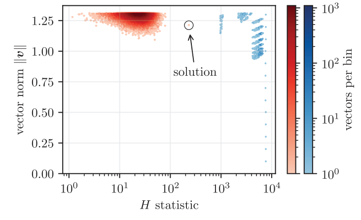
图注：成功试验中G6K生成的318199个短向量在向量范数与H统计量平面上的密度，圈出正确解。蓝色点具有比正确解更大的H，但频率小于10^-7 Hz且周数不递增，属于非物理解；红色点的周数递增，频率处于3 mHz至2 kHz。颜色条表示每个网格中的向量数。
怎么看这张图：正确解既非最短向量，也非不加物理筛选时H最大的向量。须先剔除非物理周数，再用H验证，不能只取几何优化的首名。 直接支撑候选筛选和长期相干性证据
来源与置信度：arXiv PDF crop；source verified；https://arxiv.org/pdf/2611.26425
图2
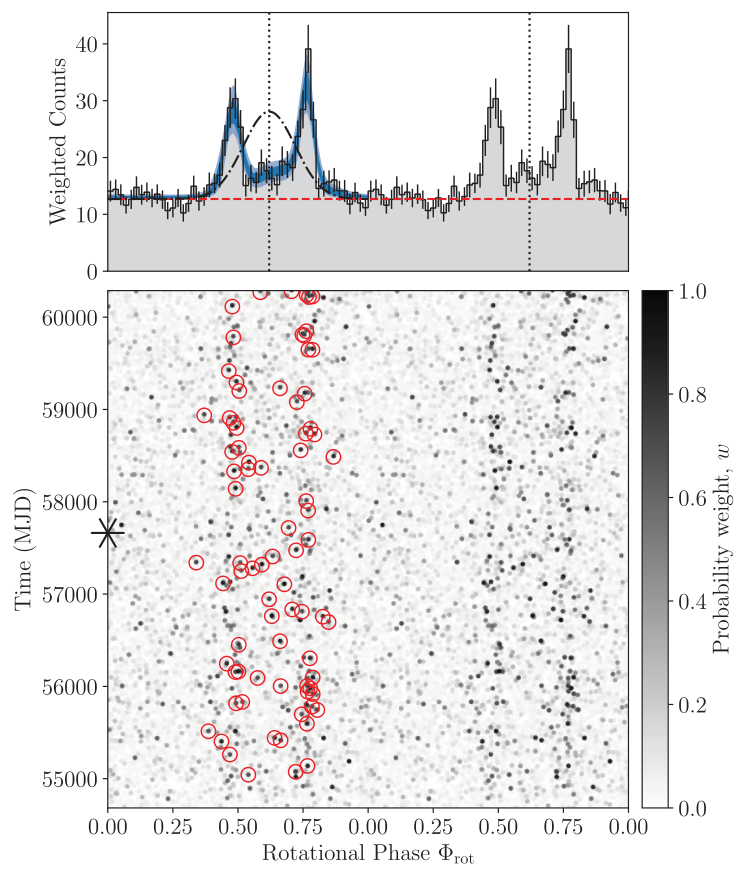
图注：下图为最佳计时解下的加权光子相位随时间分布，显示两个转动周期，灰度表示光子权重，红圈是成功试验使用的80个光子。左侧星号标参考历元；横轴相位相对式3平移，使参考时刻为零。上图为积分脉冲轮廓，深浅蓝色为1σ和2σ后验区域；红虚线估计非脉冲背景，点划线是宽度0.1的搜索用高斯轮廓，竖线标识算法找到的峰位。
怎么看这张图：15年间近乎竖直的相位带支持相干计时；真实双峰不同于搜索用单高斯，说明搜索代理目标允许一定失配。图示不能代表所有弱源均有相同发现率。 直接支撑候选筛选和长期相干性证据
来源与置信度：arXiv PDF crop；source verified；https://arxiv.org/pdf/2611.26425
强相关工作
Gazith、Pearlman和Zackay的2025年ApJ979,48提出利用到达时刻寻找格短向量。本文继承候选生成思想，并解析消去五个连续参数；作者指出前作分别正交化设计和先验块会得到不同格，优劣仍在研究。实际新源发现不能改写成已经证明新格在所有场景优于前作。
Kerr光子加权与de Jager等H检验提供统计验证，PINT负责时标和计时，G6K来自格约化与筛法。Einstein@Home半相干搜索是实际比较背景；其在同源上的未成功与新算法发现形成对照，但不存在本文给出的统一全源基准。补充材料提供代码，日报未运行其笔记本，不声称独立复现计算收益。
同一事件 / 同类源线索：
相似工作：
基础理论 / 方法工作：
相反观点 / 张力线索：
（未提供）
2. False Periodicities in Repeating Fast Radio Bursts Caused by Burst Clustering
- 来源：arXiv / astro-ph.HE
- 链接：https://arxiv.org/abs/2611.25704
- 作者：Hao-Tian Lan, Qin Wu, Jia-Wei Luo, Fa-Yin Wang, Zi-Gao Dai
- 公告 / 来源日期：2026-11-20
- 阅读层级：重点精读
- 评分：novelty 8/10，importance 8/10，relevance 9/10，final 9.35/10
- 推荐理由：对四重复暴源把等待时间分布纳入非参数零假设，直接检验1.7秒候选是否来自爆发簇集，对高能时域周期搜索有实质方法价值。
中文题目：重复快速射电暴的秒级“周期”如何由爆发簇集产生
做了什么：作者检验的不是快速射电暴中心天体会不会自转，而是稀疏爆发到达时刻中的秒级周期峰，是否必须由稳定的自转时钟产生。他们使用FAST观测的四个活跃重复暴源，按同一天内连续20–30个爆发组成滑动窗口，以不分相位箱的Rayleigh与H检验搜索0.01–100秒周期。FRB 20201124A中恢复出1.78秒、名义3.62σ候选，但同一流程还产生许多彼此矛盾的峰，最高名义显著性达5.2σ。这些σ只相对于恒定速率泊松过程，并非整个滑动窗口搜索的全局发现显著性。
决定性对照是在每个观测日内保留所有相邻爆发的等待时间，却随机打乱它们的顺序，再重新构造到达时刻、执行相同搜索。破坏原始时序后，候选周期分布仍与观测大体相似；反而匹配事件数和时长的泊松模拟不能复现。作者据此认为，秒级峰的群体结构主要来自非指数等待时间及搜索选择效应，本批数据未给出稳健的短周期证据。该结果不等于排除隐藏的自转调制，也没有证明星震是唯一爆发机制。
为什么重要：周期峰常被直接解释为中心磁星的自转周期，从而约束发射区与磁层几何。本文把这种推断中容易被忽略的一步单独检验：统计量的零假设是否能描述实际爆发间隔。即使扫描周期的试验次数已经纳入，错误的泊松到达模型仍可给出很高的名义σ。它改变的是从显著峰推断物理时钟的证据标准，不能把结论外推到所有重复暴的长期活动周期。
理论 / 观测 / 仪器方法价值：可借鉴的是一组有明确控制变量的替代序列：恒定速率泊松序列检验单纯多重搜索效应，等待时间排列检验峰是否依赖原有时间顺序，带注入周期的簇集模拟检验分析能否追踪真实时钟。迁移到高能爆发或事件到达时间搜索时，应保留真实观测窗口、每窗事件数、探测阈值和搜索流程；不能只把白噪声周期图的概率公式套到有爆发簇集的事件流。
为什么应该关注：对Fermi、IACT或其他高能时域分析，本文提供的是零假设检验思路，不是可直接移植的FRB数值阈值。背景变化、曝光间隙与耀发状态都可能制造非泊松结构，必须先确定哪些时间尺度属于随机活动，哪些才需要相干周期解释。值得进一步检查的是独立数据中的相位预测和覆盖真实采样的注入回收率；本文尚未给出对所有可能自转调制振幅的完备排除界限。
展开详细解读：文章讲解、背景、理论、重点章节、图表与相关工作
文章详细讲解
科学问题。先前研究在FRB 20201124A较短观测子集中报告约1.7秒候选，设想只有局域发射区短暂稳定时才能看到自转。作者把这一直觉转成可检验条件：如果短窗口偶尔显露同一个时钟，那么跨许多窗口统计后，真周期应比无关周期和合理无周期模型更经常出现。研究对象是秒级时序结构，而非十几至几百天的活动调制。
作者怎么做。四个样本均取FAST，以减少频段选择效应：FRB 20121102A为2207次爆发、65个观测日；20201124A为2744次、49日；20220912A为1076次、17日；20240114A为11553次、59日。每日独立生成连续20–30事件窗口，H检验兼容未知脉冲形状，并通过匹配窗口事件数与持续时间的泊松模拟选出名义超过3σ的局部峰。3σ是候选样本门槛，不是发现宣言。
关键结果。候选没有围绕一个稳定值收敛：四源均在约1–10秒出现增强，但细节随源与窗口而变。固定搜索次数、每日事件数和时长后，泊松模拟的峰明显更少，说明大量搜索本身不足以解释观测。保留实际等待时间集合的随机排列则大体复现原分布，说明间隔统计已能造成优选尺度。换用相位分箱方法，具体分布变化但该定性关系不变。
局限和下一步。等待时间排列只保留经验间隔分布，不能完整描述能量相关性、门限变化或高阶触发历史。ETAS自激点过程加转动几何只是参数化示范，部分源拟合并不好。下一步需要验证条件强度模型、用独立数据预测相位，并测量不同调制深度与采样下的检出效率。不能把本方法未稳健识别翻译成源没有转动。
关键结果是怎么做出来的
第一步固定数据口径。作者不混合多台望远镜，而使用四个FAST公开目录，每天内独立操作；这样避免把几天未观测的间隔当作物理等待时间。保留每日爆发数和观测时长，使模拟与原数据使用相同数量的重叠窗口，这是比较候选总数的前提。即便如此，目录的探测完整度仍不是统一恒定的物理保证。
第二步由到达时刻定义统计量。每个试探周期把事件映到相位圆，Rayleigh检验一阶集中，H检验在1至5阶谐波间用惩罚项选择。它们不需给只有20–30个事件的窗口硬分很多箱；高阶谐波仍受小样本限制，所以没有无限增加自由度。最长周期还要求窗口至少覆盖三个周期，避免把不足一个重复循环的趋势当作周期。
第三步区分两层试验。四个周期区间为0.01–0.1、0.1–1、1–10、10–100秒，步长分别为10微秒、0.1毫秒、1毫秒和10毫秒。事件数20–30与100个代表持续时间构成标定网格，每格每区间用至多一千万次泊松实现的最大值，取99.865百分位作名义3σ线。它包含单窗周期扫描，却不是整个源所有重叠窗口的全局显著性。
第四步不只挑最高峰。1.78秒峰来自MJD 59325上24个爆发、7029秒的子集，名义3.62σ；其他窗口出现许多不一致周期，最高名义5.2σ。四源几秒附近都有候选堆积，但各自锐峰、零散峰或宽峰并未指向共同稳定时钟。直方图计数是重叠窗口产生的候选数，不能当作独立发现数。
第五步对照图4与图7。图4的泊松控制承担相同数量的窗口与试探周期，仍不能复现观测，差别不能简单归咎于多重搜索。图7把每日等待时间原样保留而打乱顺序，却更好复现峰的分布，指向非指数间隔统计。它不自动证明相邻间隔存在串行相关：非泊松更新过程也可以产生这种现象。
最后做注入检验。ETAS在20240114A和20121102A较能复现分布，在另两源较差。20240114A初始峰曾接近注入周期，但只改变周期参数后，峰并未随之移动；图6说明候选堆积可能主要跟随簇集与采样尺度。该结果削弱以候选复现峰测转动周期的解释，却不构成对所有磁星发射几何的统一上限。
展开背景、理论、公式、模型和章节导读
背景知识
快速射电暴是持续毫秒、亮温很高的射电瞬变；重复暴能积累同一源的大量事件到达时间。银河系磁星SGR 1935+2154与FRB样爆发的关联支持磁星通道，但把某个河外重复暴具体的秒级峰认作自转，还需要额外验证。大量爆发增加研究机会，也增加挑选子样本的自由度。
活动周期和自转周期不是同一层问题。数十至数百天的活动窗可涉及轨道、进动或传播环境；偏振旋转量周期又描述磁离子环境。本文检查0.01–100秒内的时序相干性，不能直接用它否定长期周期。反过来，长期调制也不能证明短时峰是自转。
传统脉冲星的重复辐射常可长期相干叠加，而FRB偶尔爆发，磁层发射区还可能移动。短窗口搜索为局域几何暂时稳定保留机会。然而窗口越多、越重叠，越容易在某处得到漂亮的折叠峰，因此必须把选窗和搜索动作一并放进对照模拟。
泊松过程要求恒定速率、独立事件和指数等待时间。实际重复暴可能成簇，或在不同活动状态间切换；间隔分布自身就带有特征尺度。把这些尺度折到相位上可能出现偏聚，数学上的峰并不必然来自长期保持相位的物理时钟。
基础理论 / 方法脉络
试探周期相当于在时间轴上反复铺设一把尺子，每次爆发落在尺子某处。稳定转动调制会让这些位置在固定相位集中，错误周期则逐渐破坏集中。Rayleigh方法把位置变成单位圆向量，其和的长度度量偏聚；偏聚的成因仍须由合适零假设判断。
单谐波适合近正弦调制，窄脉冲或多峰轮廓会把功率分散到多阶。H检验在增加谐波时扣除惩罚，既不预先固定轮廓，又不免费增加自由度。本文只取到五阶，适应少事件窗口。H值高表示相对某个对照更集中，不能独立证明集中保持很多观测日。
极值统计是第二层。固定周期出现大统计量的概率很小，不代表扫很多周期后最大峰也罕见。作者用模拟中的搜索最大值构造零分布，处理单窗扫描；但重叠窗口共享事件，不能把总试验数简单当独立试验相乘，完整重跑流程更可靠。
等待时间排列给出不同于白噪声的参照：固定一天所有相邻间隔，置换后累加得到新序列，总跨度与事件数不变，原始顺序被破坏。这是有限样本、类似更新过程的替代模型，不是对真实机制的唯一识别。若候选结构仍普遍存在，原数据便没有显示非引入相干时钟不可的证据。
公式与推导
以下沿原文式(1)–(6)，但统一相位约定。原文式(1)相位是0–1周期份额，式(2)三角函数未显式写$2\pi$；这里引入弧度角，不据此推断其实际代码有误。
由到达时刻$t_i$、参考$t_0$与周期$P$得到无量纲相位：
改变参考时刻只旋转所有向量，不改变其和的模。定义第$k$阶谐波分量：
$N$为窗口事件数。模平方按事件数归一化，得到标准一致写法：
独立均匀相位的大样本极限中，每阶贡献两个近高斯分量，因此
这是固定周期参照，不能套到搜索最大峰；有限样本与实际采样还要模拟。未知轮廓通过惩罚极值处理：
多谐波捕捉窄峰，惩罚防止无代价增加复杂度。搜索网格$\mathcal G$的校正来自模拟$r$的最大值：
这对应式(6)经验尾概率；没有超越样本只限制概率的采样精度，不能称概率为零。
最后用教学记号表达等待时间排列，连接统计量与关键控制：
$\pi$是一天内间隔的排列，保留该日跨度却打乱顺序。完整搜索$t_i'$后仍有类似候选分布，意味着原有相干相位不是生成该结构所必需的解释。
模型拟合 / 应用方法
本研究首先验证搜索与零假设，而非通过辐射模型拟合测出自转。输入是FAST公开到达时刻，20–30事件窗口、周期网格和至少三周期要求构成显式选择。复现必须保持有效观测时段及事件定义；子脉冲与独立爆发不能互换，否则间隔集合已经改变。
泊松标定通过事件数、持续时间网格，生成同样大小与跨度的均匀到达序列，记录每次最大统计量。输出为候选门槛，不是每个重叠窗口的独立全局后验。一千万次实现仍只有限地采样约5σ尾部，且物理零模型错误可能远大于尾概率数值精度问题。
非参数验证不要求先选择ETAS或星震参数。逐日排列经验间隔后执行同样窗口、网格与筛选；图7是核心。再换成相位分箱统计量，图8仍给类似观测—替代关系。这是定性稳健性，不说明每个候选已在簇集模型下获得精确重标定p值。
ETAS使用已有工作的三个源参数，对20240114A另作MCMC。表1的1.84秒只是该参数化模拟的周期参数，不能当独立测得的自转；其余参数涉及背景率、触发生产率、Omori时间衰减和观测几何。原文没有给足以确认唯一机制的后验与收敛证据，本解读不补造。
对20220912A和20201124A的复现较差本身是模型限制。对20240114A仅改注入周期而固定其他参数，候选堆积未跟随，说明直方图峰不是可靠周期估计器。进一步约束自转需报告多种振幅、几何与采样下的回收率，不能从一次无检出推出磁星模型都不成立。
重点章节 / 结果段落怎么读
- §II核对四源事件数与观测日，理解逐日重排及统一FAST频段的目的。
- §III.1–2连接到达时间、相位、谐波和窗口，特别注意式(1)/(2)相位单位记号。
- §III.3读清nominal与每窗最大值，区分周期扫描校正与全滑窗全局显著性。
- §IV.2–3对照图4/7，先明确固定变量，再比较改变等待时间分布的效果。
- §IV.4及§V关注注入周期变化和ETAS失败源，区分模型示范与机制确认。
关键图表与解读
图4：泊松控制
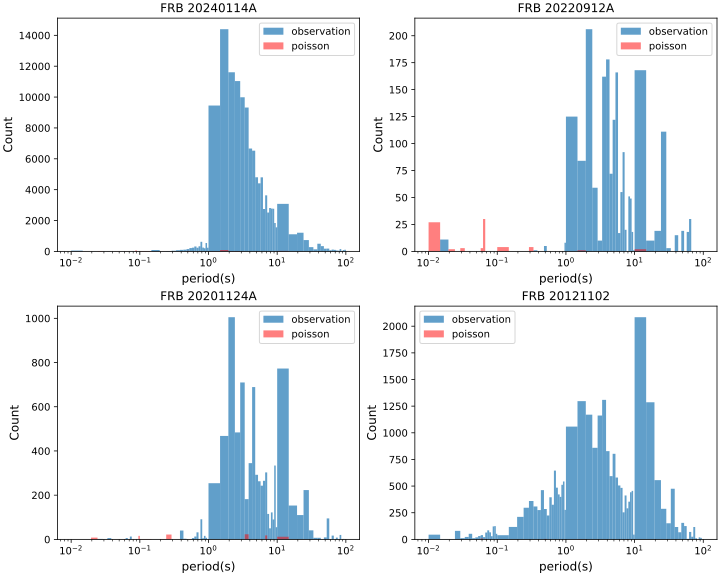
图注：四个重复快速射电暴的候选周期分布。蓝色为真实数据，红色为均匀泊松模拟；每个模拟观测日保持对应真实日的爆发数与时长，并执行相同滑动窗口搜索，因此搜索窗口数相同。横轴为秒单位周期（对数刻度），纵轴为选中的候选数。
怎么看这张图：同样试验次数下，红色仍显著少于蓝色，说明仅以多重搜索解释候选堆积不够；但这只否定简单泊松参照，不自动证明存在周期。 与图7组成改变零假设的直接证据链。
来源与置信度：arXiv HTML；source verified；https://arxiv.org/html/2611.25704v1/Figure4.svg
图7：等待时间排列控制
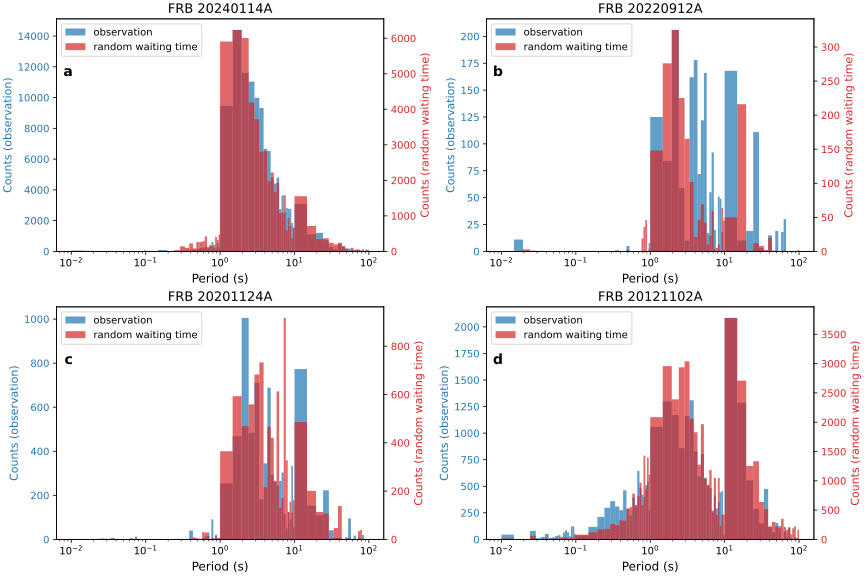
图注：四源真实数据与等待时间随机排列后的候选周期分布。每天内保留经验等待时间集合，随机打乱顺序再执行相同滑动窗口搜索；蓝色为观测，红色为排列序列。横轴为周期（秒），蓝色计数对应左轴，红色计数对应右轴；左右轴刻度并不相同。
怎么看这张图：几秒附近的主要分布结构在打乱顺序后仍保留，支持间隔统计能产生候选尺度。必须读取各自左右轴，不能把柱形重叠当作绝对计数一致；这是整体形状的定性对照，不是每峰已给簇集校正p值。 本文最重要的非参数证据，同时明确双轴限制。
来源与置信度：arXiv HTML；source verified；https://arxiv.org/html/2611.25704v1/Figure7.svg
强相关工作
FAST对FRB 20201124A的既有自转搜索，arXiv:2210.03610提供同类短周期搜索背景。本文新增的是不把短窗口高峰作为终点，而用等待时间替代序列检验候选群体结构。既有无检出与本次无稳健证据都不自动排除磁星自转，观测窗和相位稳定性仍决定可探测性。
ETAS比较沿用旋转调制星震模型，arXiv:2502.16626，但把它放在非参数检验之后，避免拟合成功的随机过程被直接认作真实机制。原文引用的Rayleigh/H检验与点过程文献提供统计基础：先检验随机事件模型是否合适，再把显著性转成物理判断。
同一事件 / 同类源线索：
相似工作：
基础理论 / 方法工作：
（未提供）
相反观点 / 张力线索：
（未提供）
3. Subsolar neutron star-black hole binaries from collapsars: Gravitational waveform models and detectability in current searches
- 来源：arXiv / astro-ph.HE
- 链接：https://arxiv.org/abs/2611.25040
- 作者：Vishal Baibhav, Valerio De Luca, Loris Del Grosso, Emanuele Berti, Brian D. Metzger, Lam Hui
- 公告 / 来源日期：2026-11-20
- 阅读层级：重点精读
- 评分：novelty 8/10，importance 8/10，relevance 8/10，final 9.00/10
- 推荐理由：指出亚太阳质量搜索对塌缩星盘碎裂NS-BH通道的模板失配，联合小质量比、潮汐和气体效应影响漏检率，直接改变搜索完备性解释。
中文题目：亚太阳质量中子星落入黑洞：现有引力波模板可能漏掉什么？
做了什么：亚太阳质量致密天体若被可靠发现，并不必然是原初黑洞：快速旋转大质量恒星塌缩后，富中子吸积盘可能碎裂，形成低质量中子星并迁移到中央黑洞。本文把这一形成环境与实际搜索连接起来，构造频域NSBHc波形，将小质量比、提前潮汐破坏、潮汐相位、自旋四极矩、偏心率及残余盘气体的迁移效应纳入，再对照LVK第四次观测的亚太阳质量搜索模板族计算最大匹配度。
在作者采用的多方状态方程及信号于洛希溢出时终止的假设下，约0.1太阳质量的中子星在约65 Hz就被撕裂，现有模板却延伸到更高频；加上质量比常低于模板库边界，模型估计同频段理想搜索可见的事件中超过90%可能因模板失配而损失。将信号本身更短、因而更弱的效应一起计入后，已有并合率上限对这一通道可放宽数个数量级。这是波形与灵敏度的模型研究，没有宣布任何候选已确认为亚太阳质量中子星。
为什么重要：“没有探测到”只能约束搜索实际覆盖的信号族。原初黑洞近似真空点质量，盘内低质量中子星则有大半径与环境作用；把为前者设计的上限直接用于后者，会把模板选择效应误判成形成通道不存在。本文明确区分波形匹配损失与信号固有强度下降，指出当前限制只在较重中子星和适当黑洞质量范围接近长伽马暴率，而对轻中子星仍很弱。
理论 / 观测 / 仪器方法价值：最可复用的是把形成模型逐层投射为搜索效率：先从盘厚度得到质量比，再由状态方程估计半径与截断频率，最后用噪声加权内积计算可恢复信噪比。作者还扩大模板参数空间、令模板与信号同频率终止，以分离气体、潮汐与偏心率各项本身的失配。这能避免看到大相位修正就武断认定不可探测，因为部分修正可被质量或自旋偏置吸收。
为什么应该关注：这一通道把长伽马暴中央引擎、富中子盘和引力波搜索联系起来。对多信使跟踪，值得关注的是专用模板触发能否与长伽马暴或宽线Ic超新星建立时空关联；现有低显著候选只能作为未来重搜目标。更低的低频阈值虽收回长内旋信号，也使环境和偏心率失配更严重，仪器灵敏度提升必须配合波形改进。
展开详细解读：文章讲解、背景、理论、重点章节、图表与相关工作
文章详细讲解
科学问题是：若塌缩星吸积盘真能制造亚太阳质量中子星，现有亚太阳质量搜索的空结果究竟排除了多少？普通恒星核心塌缩难形成如此轻的中子星，盘中富中子团块却具有不同的质量尺度。本文不重新证明碎裂发生率，而是在这个物理通道成立时计算其观测选择效应。
作者以TaylorF2后牛顿频域内旋为基础，加入环境与有限尺寸项，并在潮汐破坏或最内稳定圆轨道先到达的位置处理信号终止。主要图采用无自旋圆轨道信号，比较无残余气体和残余密度比例为0.001两种情况；其他自旋、低频阈值和单项相位影响放在补充材料。
关键结果由两种损失叠加产生。其一，真实信号与允许的模板族不完全匹配，最大可恢复信噪比被拟合因子FF降低；其二，真实中子星被提前破坏，同质量同距离的信号比点质量黑洞双星更弱，比例记为B。局部均匀体积分布和固定阈值下，合并效率按(FF B)的三次方缩小，不能只用FF修正原有率上限。
局限决定了结果的强度：这里不是向真实搜索管线注入信号得到的效率曲线；离散模板、噪声非高斯性、一致性检验和多台巧合会进一步影响结果。多方状态方程、恒定残余气体比例和洛希溢出即终止也有不确定性，若质量转移稳定并持续发波，短截断假设会高估部分损失。下一步需要专用模板与数值模拟校准，而非把图中百分比当作已经测出的真实宇宙漏检率。
关键结果是怎么做出来的
证据链第一步是形成尺度。正文式(1)将团块质量写为盘高宽比的三次方乘黑洞质量，典型高宽比0.3和5太阳质量黑洞对应约0.14太阳质量团块。质量比由盘几何控制，可进入现有模板q≥0.1边界以下；这说明遗漏并非人为选择极端参数，而是所研究通道的自然区域。
第二步是终止频率。采用非相对论简并中子多方模型，越轻的中子星半径越大，0.1太阳质量时约34 km。把这个质量—半径关系代入洛希破坏条件得到约65 Hz的终止，离GstLAL的45 Hz下限很近。低质量信号的可用带宽因此很窄，模板中高频部分没有真实对应。
第三步是最大匹配而非固定参数比较。式(15)对并合相位解析极大化、并合时刻用逆傅里叶变换、其余模板参数数值优化。重一些的中子星即使q小于0.1，也可能由边界模板配合强反向主星自旋部分模拟，因此“在模板质量比外”不等于必然全部丢失。
第四步看图1：无气体时约0.3太阳质量中子星损失达数十个百分点，约0.1太阳质量超过90%；气体迁移在轻黑洞一侧增加约10至1000弧度的带内相位差，把原本仅数个百分点的损失推至超过50%。这些数值是在设定参数和同频段理想比较下成立，不能推广到所有盘密度。
第五步将匹配损失变成率约束。作者用同质量点质量波形作LVK注入样本的代理，乘入B并对公开O4a+b上限按啁啾质量插值。轻中子星的效率约0.01，使上限显著变弱；仅在啁啾质量约2太阳质量附近接近每立方Gpc每年80次的长伽马暴率。论文明确称这是数量级估计，替代注入平均灵敏度会带来至约1.5倍变化。
第六步用补充材料检查退化。把质量比范围放宽至0.0001且让模板也在同样频率终止后，45 Hz起始时潮汐相位残余损失通常不超过10%，自旋四极矩只在百分比量级；气体的负后牛顿项较难由真空参数吸收。降至20 Hz同时增加信号和失配，因此更低阈值的好处需用完整波形才能兑现。
展开背景、理论、公式、模型和章节导读
背景知识
亚太阳质量指单个致密天体质量低于太阳，而非总双星质量低于太阳。普通铁核塌缩与恒星演化残骸具有更高质量尺度，所以这一质量区间曾主要用于原初黑洞搜索；但新物理与非传统天体形成通道都可能填充它，质量本身不能唯一识别起源。
塌缩星模型中，新生恒星质量黑洞被高吸积率盘包围。盘外部若自引力强且冷却够快，会碎成富中子团块。团块可彼此形成双中子星，也可单独向中央黑洞内旋；本文选择后一通道，简化为一颗中子星与一颗黑洞，没有模拟整个多体碎裂群。
匹配滤波并不是寻找某个频段“有没有多余功率”，而是用模板预测的相位将很多微弱周期相干叠加。中间质量比内旋可积累一万至十万周，微小的每周相位误差也会累积，导致信号虽在仪器频带内却无法被现有模板有效恢复。
有限尺寸和气体效应具有不同频率偏好。潮汐在高频更强，但轻星可能在升到高频前就被破坏；盘迁移属于相对真空相位的负后牛顿阶，低频长内旋反而更敏感。理解这一区别，才能看清为什么提高低频灵敏度既增加潜在信噪比，又对建模精度提出更高要求。
基础理论 / 方法脉络
盘碎裂尺度与轨道尺度先决定源的基本参数。以盘高宽比H表示几何厚度，团块质量近似H的三次方乘中央黑洞质量；固定H时质量比近似固定，而黑洞质量主要移动轨道频率和观测带内的演化尺度。该关系是本文采用的形成模型近似，不是所有吸积盘的普适定律。
中子星的结构随后决定波形能走到哪里。多方模型给出半径随质量的负三分之一次方增长，洛希条件比较黑洞潮汐力与星体自引力。更轻星更疏松，破坏频率更低；真实核物质的稳定低质量下限约0.1太阳质量，不能把多方模型在更低质量处的计算网格等同于已存在的稳定中子星。
相位修正要与参数退化一起判断。气体迁移、偏心率、自旋四极矩和潮汐分别具有不同频率幂次；真空模板通过改变啁啾质量、质量比和自旋，也能移动相位。如果两种频率形状在有限窄带内相似，即使物理机制不同，搜索仍可能恢复信号，但参数解释会偏移。
拟合因子与检测率属于不同层次。FF衡量同一信号的最优相干信噪比可保留多少；B衡量真实信号与参考注入信号在同质量同距离下的固有强度差。只有再假定固定阈值、局部均匀分布以及近似欧氏体积，才能把距离比例立方变成事件数比例；实际搜寻排名统计量不必严格满足这些理想条件。
公式与推导
以下沿正文式(1)、(4)–(6)、(15)–(17)重写，并把噪声内积及体积关系作为教学连接。除显式Hz、km和太阳质量标度外，结构公式采用$G=c=1$。
先由盘高宽比$H=h/r$估计团块质量与质量比：
固定盘厚度时，质量比不随黑洞质量单独变化；$H=0.3$给出$q\simeq0.027$，解释了为什么大量源会落在$q=0.1$模板边界外。
采用本文$n=3/2$多方状态方程：
洛希分离尺度$a_R\simeq2R_{\rm NS}(M_{\rm BH}/m_{\rm NS})^{1/3}$与开普勒频率合并，得到：
这里后一式适用于无自旋黑洞。两者先达到的频率决定模型进入破坏还是完整下落分支，不能一律用ISCO截止。
潮汐变形性为：
$k_2$是四极潮汐Love数，半径质量比在几何单位下无量纲；极低紧致度使$\Lambda$很大，但双星相位还受质量比幂次抑制，不能由大$\Lambda$直接判定大漏检。
把物理作用置于频域波形：
$S_*$控制形成时的低频开始，$S_{\rm end}$控制破坏或并合尾部。相对牛顿相位$\psi_N=3/(128\eta v^5)$，气体项正比于$-f_{\rm disk}v^{-8}\psi_N$，$v=(\pi Mf)^{1/3}$；这说明低频最敏感，但只在气体迁移弱于引力波演化时适用。
教学上把探测器噪声权重写为：
$S_n$为单边噪声功率谱，内积比较相位相干叠加而非单纯频谱总功率。由此定义在允许模板参数$\lambda$、时刻和相位上最大化的匹配：
恢复信噪比为$\mathrm{FF}\rho_h$。距离反比与局部体积立方关系给出同频段理想搜索的模板损失：
这一分母是真实波形的理想搜索，不是LVK黑洞注入样本。要重标其率上限，仍须定义：
$\rho_0$为同质量点质量波形信噪比。最后一式是本文代理灵敏度近似，没有替代真实注入回收实验；稳定质量转移若延长信号，也会改变$B$及FF。
模型拟合 / 应用方法
输入包括信号质量、盘参数、状态方程和O4噪声谱，而不是一组已经确认的盘内中子星事件。主计算采用无自旋圆轨道信号，以高宽比0.3、吸积率约0.1太阳质量每秒及残余气体比例0或0.001作对照；未知盘演化被压缩为常数参数，不能将后者解释成观测测得的残余密度。
优化对象是与真实搜索模板族的归一化重叠。GstLAL频带为45–1024 Hz，模板最长128秒；补充材料另比较PyCBC的30–1024 Hz、最长1008秒以及MBTA的35–512 Hz。每个管线使用相应近似波形，并在自身频带内算匹配，因而不同频带的损失比例必须带上其分母定义。
为隔离单项物理，作者另外建立一个更宽参数空间的比较族：质量比最低0.0001、自旋绝对值最高0.99、无时长上限，并让模板采用与信号相同的终止窗口。这个实验去掉模板边界与截止不一致，显示气体项较难被吸收，自旋四极矩较容易与真空自旋项退化；它不对应任何现行真实管线。
率约束则使用公开O4a+b上限的对数插值，并把同质量点质量波形当作注入平均灵敏度代理。已有注入覆盖q≥0.05，而目标可到q约0.01，这一外推需要谨慎；作者估算代理选择影响可至约1.5倍，但没有据此完成新的官方置信上限。最终可信的完备性仍需在真实噪声、离散模板、一致性检验与巧合规则下逐项注入回收。
重点章节 / 结果段落怎么读
-
先读“A primer on the collapsar model”：抓住H、q和质量—半径关系，区分形成设想与已观测事实。
-
再读“NS-BH waveform”式(6)–(14)：把窗口函数和四种相位修正分开，特别核对迁移项的微扰有效条件。
-
读“Fitting factor and lost events”与图1：先确认FF最大化所允许的模板范围，再判断损失分母，不能把模型体积损失叫作真实事件漏报比例。
-
将“Caveats”与补充I、II连读：稳定质量转移、波形校准和真实管线检验是核心限制；低频阈值与单项相位实验解释了下一代搜索为什么需要同时扩展频带和模型。
关键图表与解读
图1：模板损失与率上限修正
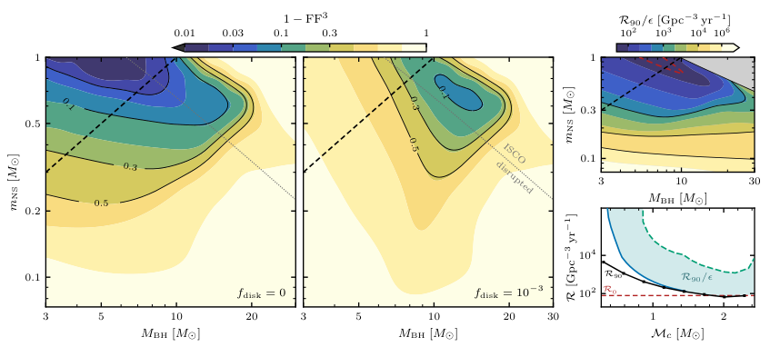
图注：左、中列显示GstLAL O4亚太阳质量搜索相对同频段精确波形搜索的模型事件损失1−FF³，残余盘气体比例分别为0与0.001。黑虚线为模板质量比边界q=0.1，灰点线为洛希破坏频率等于最内稳定圆轨道频率；约0.073太阳质量以下模型在45 Hz前已破坏。右上为由公开O4a+b结果重标的90%并合率上限，红虚线对应长伽马暴率，灰线为最后啁啾质量箱2.5太阳质量边界；右下给出3太阳质量黑洞蓝线、30太阳质量黑洞绿虚线及中间质量阴影，黑方块是原有率上限。
怎么看这张图：先比较同质量位置在左中两列的变化，识别残余气体额外失配；右列还乘入信号因提前破坏而变弱的B，不能由左列色标直接读出右列上限。率上限是代理波形重标的数量级估计，非实际注入后重新给出的官方限制。 一图连接形成参数、匹配损失与观测上限，保留不同分母。
来源与置信度：arXiv HTML；source verified；https://arxiv.org/html/2611.25040v1/ssm_loss_rate.png
图S4：分离各相位项的影响
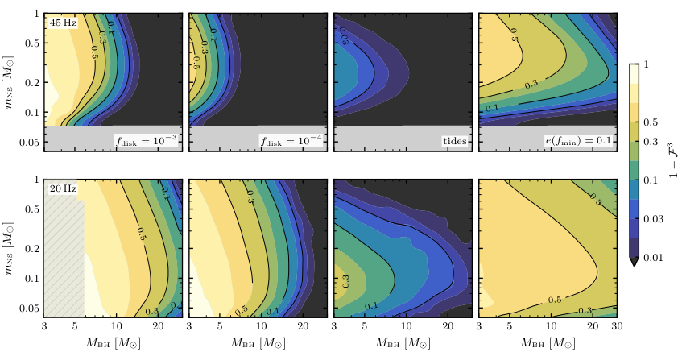
图注：在扩展的自旋对齐TaylorF2模板族中，仅保留单种相位修正的模型损失1−F³；模板与信号同频率终止，允许q≥0.0001和自旋绝对值≤0.99。上、下排分别从45 Hz和20 Hz积分到1024 Hz。四列依次为残余盘比例0.001和0.0001的迁移、潮汐及频段起点偏心率0.1的影响；灰色表示频段前破坏，斜纹表示迁移快于引力波演化、微扰式不适用。自旋四极矩项损失不超过约3%，未画出。
怎么看这张图：这是为隔离物理项构造的比较实验，不是现有管线效率。降阈值后低频周期增加，负后牛顿项更难被参数调整吸收；斜纹区域不能用该近似定量外推。 说明为什么低频灵敏度提升必须配套波形改进。
来源与置信度：arXiv HTML；source verified；https://arxiv.org/html/2611.25040v1/isolated_effects_loss.png
强相关工作
本文引文[133]的Metzger、Hui与Cantiello（2024，arXiv:2407.07955）提供不稳定塌缩星盘碎裂与低质量中子星并合的形成背景；同组[27]（arXiv:2609.25225）研究该通道波形，[72]（arXiv:2609.36005）研究随机引力波背景。本文的新问题是这些信号经过现行确定性搜索后能保留多少，而不是又一次提出碎裂本身。
观测对照来自LVK O4b亚太阳质量搜索[4]（arXiv:2610.20276），本文使用其模板配置和率上限，未重新运行官方搜索。早期[29]（arXiv:2212.03855）已讨论亚太阳质量中子星的模板探测性；本篇补充中间质量比黑洞伴星及盘环境。引用关系在原文核对，相关文献本轮未作为独立精读成果。
同一事件 / 同类源线索：
相似工作：
基础理论 / 方法工作：
相反观点 / 张力线索：
（未提供）
4. First $Ω_{\rm m}-w$ Measurement Using Only Fast Radio Burst Observations
- 来源：arXiv / astro-ph.HE
- 链接：https://arxiv.org/abs/2611.25312
- 作者：Yi-Ying Wang, Shi-Jie Gao, Chi Zhang, Yi-Zhong Fan
- 公告 / 来源日期：2026-11-20
- 阅读层级：重点精读
- 评分：novelty 8/10，importance 8/10，relevance 8/10，final 9.00/10
- 推荐理由：125个定位FRB以宇宙学自洽DM均值/方差联合限制Omega_m和w，提供与超新星相反退化方向的新独立探针；须核对电子与宿主先验边界。
中文题目：把快速射电暴的色散均值与散度一起用于暗能量测量
做了什么：快速射电暴的色散量记录沿视线累积的自由电子柱密度，配合宿主红移可检验宇宙膨胀；但不同视线穿过不同的大尺度结构，散度本身也随宇宙学变化。本文以非线性物质功率谱模拟器连接电子涨落功率谱，使宇宙色散量分布的均值和方差在同一宇宙学下变化，再与宿主贡献分布卷积，联合拟合物质密度、暗能量状态方程及宿主群体参数。
169个有宿主红移的汇编源经红移和前景扣除后色散量筛选，留下125个、红移0.105至2.148的FRB。平直常数w模型得到物质密度0.33（68%区间−0.11/+0.10）和w=−0.80（−0.38/+0.28），两者呈正相关，与Ia超新星的负相关方向互补。这里“仅FRB”仍含大爆炸核合成重子密度先验、固定原初谱和中微子参数、模拟标定的电子模型；FRB自身与宇宙常数一致，不能解读成已发现暗能量演化。
为什么重要：以往把色散量散度固定在一个参考宇宙学，会忽略它对结构增长的响应。本文将平均电子柱密度携带的膨胀信息与视线起伏携带的聚集信息同时放入似然，得到与传统距离探针不同的参数退化方向。科学价值在于形成了可改进的互补推断方法；当前误差和模拟外推仍大，尚不能把条件性轮廓当作无模型的独立暗能量测量。
理论 / 观测 / 仪器方法价值：值得借鉴的是让分布宽度与平均值共享同一物理参数，而不是只移动均值、把离散度当固定噪声。作者把暗物质非线性谱、电子偏置、视线积分、对数正态矩匹配和宿主卷积逐级连接，并用不同银河晕前景作稳健性比较。应用到其他散射、吸收或背景积分探针时，同样需要核对小尺度功率、环境模型与选择函数，不能直接搬用本篇数值先验。
为什么应该关注：FRB作为瞬变源既揭示自身环境，也可充当穿透星系际介质的探针。本篇提醒读者，环境散度并非单纯妨碍宇宙学的噪声，但要把它当信号，就必须对电子反馈物理负责。今后更大的精确定位样本能否提升约束，取决于宿主关联、红移、探测与定位选择效应及电子模型的不确定性是否同时受控。
展开详细解读：文章讲解、背景、理论、重点章节、图表与相关工作
文章详细讲解
科学问题是能否不用外部物质密度或暗能量观测约束，仅靠定位FRB给出二维物质密度—w轮廓。单个FRB的色散量含银河盘、银河晕、星系际及途中晕、宿主和源环境多种贡献，不能简单把它当距离；必须构建条件概率分布并对不可单独测出的部分边缘化。
作者先扣除NE2025银河星际介质和基线50 pc cm⁻³银河晕，再以宇宙学积分给出宇宙色散均值，用GokuNEmu非线性物质谱乘TNG300电子偏置计算方差。两矩决定宇宙对数正态分布，另一个自由参数对数正态描述宿主静止系贡献，经过红移变换后卷积成每个FRB的似然。
结果在平直常数w模型下给出有限而仍宽的联合约束。提高物质密度会降低均值却增大散度，提高w则使二者都降低，均值和散度信息相互竞争，形成正相关后验。与超新星联合可以利用方向互补，但全文约2.6σ演化偏好来自FRB、超新星、BAO和CMB的联合动态暗能量模型，绝非FRB单独显著性。
限制包含两层：银河晕替换后w中位数变化小，是在同一z>0.1样本和其余固定设置下的局部稳健性；电子偏置、自由电子比例与高波数修正仍固定，重子反馈和宇宙学依赖未充分边缘化。更重要的是宽后验延伸到模拟器训练域外，外推准确性未经验证。下一步应扩展模拟覆盖、联合标定反馈与宇宙学，再用具有选择函数的样本检验参数恢复。
关键结果是怎么做出来的
第一步看样本而不是先看轮廓。汇编169个定位源，要求z>0.1且扣除银河后色散量大于5 pc cm⁻³，留下125个。低红移视线受本动速度、局部结构和银河前景影响更大，稀有晕穿越的长尾也较难由两矩近似描述，因此此切分是建模适用性选择，不代表低红移FRB没有科学价值。补充表还保留少量光度红移及特定宿主关联例外，不能称全样本均为无歧义光谱宿主。
第二步构造电子分布。正文式(3)–(4)给均值，式(9)将电子功率谱沿波数和红移积分成方差。物质谱随宇宙学变，但电子偏置和自由电子比例沿用TNG300标定；这是一种部分自洽的物质响应框架，不是全部重子物理都随宇宙学重算。
第三步核对尺度覆盖。谱模拟器与偏置拟合到10 h/Mpc，作者用CAMELS第二代27个实现的中位电子谱估计10至30 h/Mpc的遗漏，用积分比修正。参考模型的标准差增加约4%–8%，与TNG视线散度相容；该参照一致性不验证所有宇宙学或反馈配置。
第四步把宿主与宇宙分布合成。宿主静止系色散在观测系除以1+z，其概率密度却须乘相应雅可比1+z，确保归一化。联合2000个活点的嵌套采样，同时估计宿主分布位置与宽度；这样不必给每个宿主硬指定一个相同色散量，却仍假定整个样本服从共同的群体分布。
第五步读二维结果。FRB、Ia超新星与BAO样本后验的相关系数分别约+0.54、−0.94和−0.08；FRB轮廓的新方向主要来自散度的响应。常数w结果包含−1，动态模型的宇宙常数点亦在FRB 68%区域内；不同数据组合的轮廓和置信水平必须分别标注，不能混用图3的68%/95%与图5的68%/99%。
第六步看稳健性与未完成检查。附录A将银河晕替换为YT20、L26、Y25，w中位数分别约−0.79、−0.77、−0.82，相比基线−0.804变化小。附录B明确重子密度的窄后验主要来自BBN先验。作者仍要求更广模拟训练域和反馈联合标定，因而目前不能以小前景变化证明总系统误差可忽略。
展开背景、理论、公式、模型和章节导读
背景知识
射电波在等离子体中低频传播更慢，脉冲不同频率到达时刻的差别提供电子柱密度。将这种色散量与已定位宿主的红移配对，便可统计沿宇宙距离累积的电离重子；这与标准烛光依靠亮度距离不同，信息来源是传播介质。
同红移FRB不会具有完全相同的色散量。空洞、丝状体、星系晕以及宿主环境让电子柱密度产生随机起伏，分布通常偏斜。均值描述平均路径上有多少电子，方差描述这些电子分布得多不均匀；两者都可能随膨胀史与结构增长改变。
暗能量状态方程w描述压强与能量密度之比，常数w=−1对应宇宙常数。释放w会与物质密度、哈勃常数及电子丰度形成退化，因此一个探针即使测量精确，也可能只能沿狭长方向限定参数。互补探针的价值在于退化方向不同，不是简单增加数据点数量。
数值模拟提供从暗物质聚集到自由电子分布的桥梁，但气体冷却、恒星和活动星系核反馈会重新分配重子。用参考模拟的电子偏置乘不同宇宙学的暗物质谱，是可操作的近似；它的适用边界必须与统计误差并列讨论，尤其当新增宇宙学自由度让后验离开训练域时。
基础理论 / 方法脉络
宇宙色散的平均值取决于平均电子数密度与传播距离。平均密度随宇宙膨胀稀释，观测色散还带红移因子，将这些因素合并后出现正比于(1+z)/H(z)的核函数。重子密度、自由电子比例与哈勃常数共同控制归一化，所以FRB自身并不自动分开所有背景参数。
方差来自电子密度涨落的两点统计。电子功率谱表示不同空间尺度上起伏强度，投影到天球得到色散角功率谱，再对角尺度积分得到单条视线的色散方差。本文用Limber与平天近似把步骤收成双重积分，因此高波数的小尺度电子结构会显著影响结果。
作者用对数正态分布将均值、方差变成正值且有高值尾的概率密度。其对数空间方差不同于有单位的物理色散方差；原文式(13)左右重复使用sigma_cos记号，阅读时必须区分，本文下面改用V_D与s_D避免量纲混淆，不把笔误变成物理自洽方程。
宿主贡献在源静止系建模，观测系的值随1+z缩小。卷积后得到总河外色散的条件密度，再将各FRB相乘。这一步默认共同宿主群体模型和所采用的样本处理；若探测或定位概率依赖色散、亮度和宿主性质，未来需要将选择函数纳入，不能仅靠增加样本获得可靠的高精度。
公式与推导
以下按正文式(2)–(18)连接观测量与后验；为消除原文式(13)对物理方差和对数方差的重名，改记$V_D=\operatorname{Var}(D)$、$s_D^2=\operatorname{Var}(\ln D)$。
先分开前景、宇宙和宿主：
各$D$均为色散量，常用单位pc cm$^{-3}$；宿主项原本在源静止系，最后一项才是观测贡献。
在平直常数$w$模型中：
忽略本样本红移范围内的辐射贡献，$w=-1$时回到宇宙常数。把背景传播与电子丰度合在核函数中：
$\chi_e=0.88$来自采用的原初氢氦丰度，$f_d$为模拟标定自由电子比例。均值已含电子模型假设，并非仅由$H(z)$决定。
电子谱与暗物质谱按本文近似相连：
两者均为相对密度涨落功率谱；$b_e$固定参考模拟标定，而$\theta$改变物质谱。平天近似下的色散方差为：
波数与谱须用一致共动单位。实现中对到10 h/Mpc的内积分乘$R_k=I_{30}/I_{10}$，补偿有限尺度覆盖；这是参考模拟修正而非无限尺度精确积分。
若$D$服从对数正态，其矩匹配为：
右侧$V_D/\bar D^2$无量纲，这一写法也解释原文重名符号应如何理解。得到归一化密度：
对数使用固定的色散单位约定；改变单位会移动$\mu_D$而不改变物理概率。
宿主密度随变量变换带雅可比：
最后以两个独立正贡献卷积：
$\psi=(\mu_{\rm host},\sigma_{\rm host})$是宿主群体参数；在本文样本似然假设下，后验为：
因此“仅FRB似然”不等于无先验：$\pi$仍包括BBN重子密度信息，原初谱与中微子参数也被固定。
模型拟合 / 应用方法
基线从NE2025预测扣除银河盘，并固定银河晕50 pc cm⁻³。125个源来自z>0.1及河外色散大于5 pc cm⁻³的筛选；附表列出不确定宿主排除规则、光度红移及保留例外。这里应把样本来源透明度与全部宿主无误区分，不能将汇编的“confirmed”扩写成逐源无歧义光谱识别。
PyMultiNest使用2000活点。均匀先验包括宿主对数位置3–7、宽度0.3–1.5、H0为50–90 km s⁻¹ Mpc⁻¹、物质密度0.1–0.5、w0为−3至0、wa为−3至2；动态模型另要求w0+wa<0。重子物理密度用均值0.02233、标准差0.00036的BBN高斯先验并在5σ截断；原初振幅、谱指数、跑动和中微子质量等固定。
比较和联合拟合另用Pantheon+相对超新星距离及其完整协方差而不加SH0ES标定、DESI DR2 BAO及Planck温度偏振与透镜似然。必须分别报告模型：常数w全联合得到约−0.986，仍含−1；约2.6σ动态偏好属于w0wa模型和完整联合数据，其含义不能转移给FRB单独轮廓。
稳健性检查主要是银河晕替换与参考宇宙学的散度对照。尚未完成的是对电子偏置、反馈、自由电子比例和高波数修正的联合边缘化，以及模拟器训练域外的参数恢复验证。原文讨论明确承认这些限制，所以本篇可作为方法进展，但需要独立模拟与选择函数分析才能把当前统计误差解释为可靠总误差。
重点章节 / 结果段落怎么读
-
§II式(3)–(10)：沿均值核、物质谱、电子谱和方差积分阅读，标出哪些量随宇宙学变化、哪些沿用参考标定。
-
§III式(11)–(18)：核对对数正态矩匹配、宿主红移雅可比及外部先验；特别区分物理DM方差与对数方差。
-
§IV图2/3：先检查样本红移和观测分布，再读正相关轮廓；把FRB单独与多探针联合、常数w与动态w0wa分开。
-
§V和附录A/B、样本表注：查训练域外推、电子反馈限制、前景替换及重子密度先验主导，不能只读“first”与轮廓大小。
关键图表与解读
图1：从聚集功率到色散散度
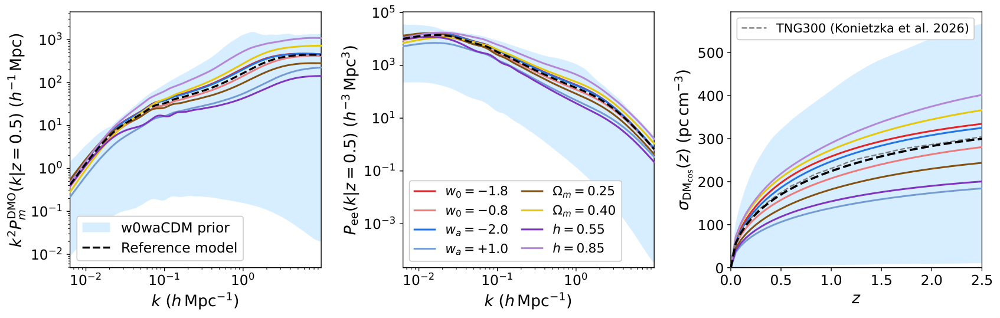
图注：左、中、右面板分别显示物质功率谱、电子功率谱和宇宙色散量标准差对宇宙学参数的响应。功率谱取红移0.5；黑虚线为TNG300参考宇宙学，彩色线每次改变一个参数。蓝色区域为动态暗能量模型先验采样预测的包络；灰虚线给出12万条TNG300视线的标准差。
怎么看这张图：比较物质密度与w变化在右图的相反响应，这是后验正相关的来源之一。参考视线一致性仅检验该标定点，不能据此认证训练域外或其他反馈模型。 直接展示本文方法创新。
来源与置信度：arXiv HTML；source verified；https://arxiv.org/html/2611.25312v1/Figure2.png
图3：不同探针的参数退化方向
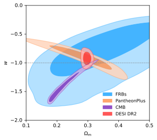
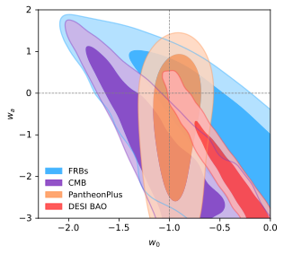
图注：左图为平直常数w模型中物质密度—w边缘后验，右图为平直w0wa模型中w0—wa后验。各颜色对应图例标示的单独或联合数据组合，全部等高线为68%与95%可信区域；灰虚线标出宇宙常数对应位置。
怎么看这张图：先定位FRB单独轮廓，再与超新星的倾斜方向比较；FRB自身与宇宙常数一致。联合动态模型的偏好不能归为FRB单独发现，且所有FRB结果仍受BBN先验、电子标定和模拟器外推影响。 保留核心数值结论及其条件。
来源与置信度：arXiv HTML；source verified；https://arxiv.org/html/2611.25312v1/Figure4.svg；https://arxiv.org/html/2611.25312v1/Figure5.svg
强相关工作
原文引文[112] Zhou等（2014，arXiv:1401.2927）提出FRB宇宙学探针思路；Macquart等[57]（2020，arXiv:2005.13161）用定位FRB建立重子普查的重要观测基础。本文在这些平均色散—红移信息之外，强调让散度也响应宇宙学，不应被视为取代前期重子测量。
电子统计桥梁来自Takahashi等[90]（arXiv:2010.01560），非线性物质响应采用Goku模拟套件及模拟器[107/106]（arXiv:2501.06296、2507.07177）。它们分别处理电子偏置和物质谱，拼接处的固定反馈假设正是当前主要系统限制；原文引用关系已核对，本轮未对这些文献另作完整精读或独立复现。
同一事件 / 同类源线索：
相似工作：
基础理论 / 方法工作：
相反观点 / 张力线索：
（未提供）
5. Fast X-Ray Transients from Dense Circumstellar Material Shock Breakout and Cooling Emission
- 来源：arXiv / astro-ph.HE
- 链接：https://arxiv.org/abs/2611.26008
- 作者：Jin-Ping Zhu, Yi-Han Iris Yin, Yun-Wei Yu, Zhuo Li, Bing Zhang
- 公告 / 来源日期：2026-11-20
- 阅读层级：重点精读
- 评分：novelty 8/10，importance 8/10，relevance 8/10，final 9.00/10
- 推荐理由：薄致密星周壳层光行时同时连接X射线光变、温度与有限能段黑体拟合，三个事件比较提供有价值的机制诊断。
中文题目：致密星周壳层中的激波突破：光行时如何塑造软X射线快暂现源
做了什么：超新星激波撞上爆发前抛出的致密星周物质时，原本被困住的辐射可在光学深度降到约光速与激波速度之比时逃逸，形成激波突破闪光。作者把非局域热平衡色温、突破后的分段冷却及不同表面光子到达延迟放入统一半解析模型，同时拟合软X射线光变与温度演化。关键认识是：观测时刻相同的光子可能来自不同发射时刻和温度，真实谱并非单温黑体；但有限X射线能段仍可能给出良好的黑体拟合，因此“看起来像黑体”不能独立证明单温热平衡。
模型可描述EP260321a、XRF 060218热成分和XRO 080109的总体演化，但证据强弱必须分开。EP260321a给约322太阳半径壳层、0.129c激波和约9×10⁻⁵太阳质量星周物质；同时附录给含额外误差项的后验预测p值0.027，说明仍有拟合张力。XRO 080109所需相对厚度约0.85，已偏离薄壳动机并挑战恒定激波速度。本文是可检验的机制与参数化解释，不能称三事件的起源已被唯一确定。
为什么重要：软X射线快暂现源能在超新星光学峰前探测恒星最后阶段的物质抛出，但闪光时长、温度和光度并不能各自独立反推半径。本文把激波扩散、非热平衡色温与球面到达延迟连接起来，说明仅用黑体半径或峰宽可能得到错误的物理直觉。其贡献在联合解释光变和温度的计算框架，而不是用一次拟合取代风、喷流或其他突破环境的模型比较。
理论 / 观测 / 仪器方法价值：可复用的是把源端辐射模型前向映射到仪器能段：先计算突破与冷却，再积分等到达时面上的不同温度成分，最后按真实带宽求光度。该流程可检验软X射线黑体拟合究竟约束色温还是热平衡温度；吸收、非热成分分离和带宽都必须在比较中一致。对不同密度分布或明显减速的壳层，应重新求动力学，不能只套本文固定速度的参数表。
为什么应该关注：对关注GRB和多信使暂现源的读者，这提供了一条从爆发前质量损失、抛射物供能到软X射线形态的物理链。XRF 060218这里只拟合热成分，不解释其伽马即时辐射和后续余辉；相同事件可能含多个物理区。未来EP事件若同时有温度曲线、宽带谱和早期光学限制，才更有机会分开半径、质量与速度退化，并检验薄壳还是持续恒星风。
展开详细解读：文章讲解、背景、理论、重点章节、图表与相关工作
文章详细讲解
科学问题。辐射主导激波在高光学深度介质中前进时，光子扩散慢于激波，能量先被储存。到接近外边界时，前方光学深度下降，扩散追上激波便出现闪光。软X射线事件有几十到几千秒时标，不能只用普通恒星表面突破解释，爆发前的紧致致密壳层是一种候选环境。
作者怎么做。模型以球对称、均匀密度的星周壳层为起点，给定内外半径、壳质量及恒定激波速度。光变分为困光暗阶段、突破、激波越过外缘及冷却；只计算受激波加热的星周物质，忽略抛射物自身冷却贡献。源端用扩散与绝热演化给光度，再用自由—自由产光和康普顿化修正色温，最后做光行时积分。
关键结果。薄壳中峰值常由外半径除以光速决定；更大的壳层让峰更宽、更迟，有限能段看到的谱却可能仍像黑体。EP260321a的模型能量约1.3×10⁴⁸ erg，与观测X射线总能量约9×10⁴⁷ erg同量级；另两事件对应更大、更薄的壳或更紧致、更厚的介质。相似观测类别并不要求相同的爆发前质量损失。
局限和下一步。壳层均匀、球对称、恒速以及经验性光变拼接都是近似。对EP事件，额外温度不确定度约24%，后验预测检查仍有张力；对XRO事件，壳厚度0.85使显著减速可能不可忽略。还应比较不同密度结构、喷流或风模型并向更宽能段预言，而不是仅凭光变与温度拟合一致就认定唯一机制。
关键结果是怎么做出来的
第一步用扩散判据限定可行域。星周总光学深度必须足够大，才能形成辐射介导激波并在介质内突破。图1同时画出允许发生突破的质量—半径区域，以及扩散主导和光行时主导边界。灰区不是仪器简单没探测到，而是所用模型中不满足这种突破条件；这一物理筛选应先于解释亮度。
第二步从抛射物能量预算约束速度。作者假定速度空间的内外折断幂律密度，外层指数10、内层指数1，并把高于激波速度的抛射物动能与星周物质的受激波能量相连。由此薄壳外层相互作用中的速度对壳质量仅以负七分之一次幂变化，不能把拟合速度当成与超新星质量和能量完全无关的独立机制。
第三步区分平衡温度与色温。自由—自由过程若不能及时产生足量光子，同样辐射能量由较少光子携带，色温高于热平衡黑体温度。文中参考模型的平衡温度约0.05 keV，而色温约0.127 keV，才进入软X射线敏感能段。这个差别说明观测黑体拟合温度并不直接测量完整辐射能量密度。
第四步加入等到达时面。图3展示本征尖峰被延迟、展宽和削低；图4展示早期不同源端温度叠加成多温谱，但WXT带宽内可近似为黑体。原图的宽频谱对比才揭示差别，不能只看灰色带宽内两条线接近。到观测时刻远大于光行时后，延迟混合变弱，观测温度更接近源端色温。
第五步联合拟合三例。图6将三个事件的X射线光度和温度放在同一相对突破时间轴。EP260321a拟合壳外半径322±30太阳半径、速度约0.129c、相对厚度0.334和质量约9×10⁻⁵太阳质量；XRF 060218热成分需要约1400太阳半径、厚度0.0784、质量约2.12×10⁻³太阳质量。后者不包含伽马即时辐射与余辉的解释。
最后检查最薄弱环节。XRO 080109多数时分谱的黑体与幂律拟合统计相近，作者选择黑体结果供模型使用，不能反称观测已排除非热谱。其外半径约37.7太阳半径、厚度0.850及约7.3×10⁻⁷太阳质量提示宽介质而非几何薄壳。附录EP拟合的Q/(73−7)=1.82、后验预测p=0.027仍保留偏差；单峰后验只说明该模型内部约束，不等于正确物理。
展开背景、理论、公式、模型和章节导读
背景知识
激波突破是被困辐射第一次能快速逃出的阶段。辐射介导激波中，光子交换动量形成过渡层，和光学薄介质中的无碰撞激波不属同一条件；前方光学深度不足时，不能继续使用同一个突破表达式。闪光探测到的是爆发最初的能量释放环境。
剥离包层超新星的前身较紧致，但爆发前可通过增强质量损失或双星相互作用，在恒星外堆积致密物质。激波先在这层物质中困光，再在更大半径突破，因此外部介质可以把原本很短的闪光拖长。壳层半径不是恒星本身半径，两者在本文假设下相差很大。
热平衡温度由能量密度确定，色温由谱的形状和光子数决定。快速激波下，自由—自由产光可能赶不上扩散，电子与光子经康普顿散射接近共同温度也不保证完整Planck谱。把“热机制”“黑体拟合”和“局域热平衡”混为一谈，会错误解释半径及能量。
观察者不会同时收到球面各处同时发出的光。侧边光多走一段路，相同观测时刻就混合较早与较晚的源端演化；这既展宽峰，也混合温度。软X射线仪器只覆盖谱的一段，宽带差别可能被带宽遮住，所以有效温度的解释必须连同时间和能段进行。
基础理论 / 方法脉络
先比较两只钟：光子在前方介质中扩散所需的时间，以及激波越过相同距离的时间。深处扩散慢，能量被困；边缘光学深度降到两者相等，辐射开始逃出。这个判据把突破层厚度与密度、不透明度、速度联系起来，并决定参与最初闪光的质量。
释放出的能量还要分摊到观测时长。如果局部扩散时间比球面光行时更短，观察者不能看到无限尖峰，峰宽被几何延迟限制。这时亮度随外半径近似线性增长；若扩散更慢，峰光度更依赖密度与速度的立方。两个区间不能用同一条简单缩放解释。
非热平衡修正来自光子供给不足。热耦合参数比较达到黑体光子数所需时间与扩散可用时间，大于一意味着产光不足。康普顿化会增加能够有效参与高能辐射的光子数，作者用修正因子处理；温度方程含温度本身，需要自洽求解，而不是恒定倍数硬乘。
突破后前方未激波介质逐渐消失，扩散前沿进入已加热壳层。扩散能看到更大质量，膨胀又造成绝热损失；两者竞争产生平面近似冷却、球面阶段和最终能量库耗尽的快速下降。文中用分段半解析表达式拼接，便于拟合，也因此不能替代完整辐射流体计算。
源端光变还不是数据。必须把每个表面元在对应发射时刻的谱按投影面积加权，积分可见半球，随后对仪器能段积分。只有经过这一前向映射的模型才能与X射线光度和色温比较；直接用本征突破温度对照观测拟合温度会忽略最关键的混合过程。
公式与推导
以下保留原文的薄壳标度，再连接到观测。定义外半径$R$、相对厚度$\chi=(R-r_{\rm in})/R$与壳质量$M$，均匀薄壳满足
不透明度$\kappa$对完全电离He/C/O取$0.2\,{\rm cm^2\,g^{-1}}$。令扩散与动力学时间相等：
突破层质量乘比动能给式(1)的能量：
按扩散时间释放与按光行时展宽，分别给式(2)/(3)：
适用区间由两时间尺度比较，不可同时当独立的观测峰值。辐射能量密度$\epsilon$先给平衡温度，再比较产光效率：
$a$是辐射常数，$n_{\rm BB}$是黑体光子密度，$\dot n_{\rm ff}$是自由—自由产光率。式(6)在非平衡区为
$\xi$表示康普顿化对有效光子数的修正；其温度依赖使方程隐式。随后按式(29)/(30)做几何延迟：
角度$\theta$相对视线，因子2归一化可见半球投影积分。谱也逐频率做同样积分，最后得到实际能段光度：
这最后一步说明为何总辐射光度、X射线峰和拟合黑体温度不能互相直接替代。
模型拟合 / 应用方法
输入包括各事件的时分X射线光度和温度。XRF 060218需先分离热与非热成分；XRO 080109每个谱段至少60个计数，吸收柱密度固定为时间积分谱结果。多数XRO谱段的黑体和幂律统计相近，因此后续黑体温度是所选谱模型的条件结果，不是唯一测量。
七个自由参数为外半径、相对厚度、星周质量、激波速度、相对首个数据点的突破时间，以及光度与温度的额外分数误差。附录给半径对数在1–4、质量对数在−8–0（太阳单位）的均匀先验，速度0.01–0.5c、厚度0–1、时间0–10⁴秒、两误差分数0–1。宽先验容许厚壳，不意味着薄壳近似在整个先验范围都同样可靠。
似然假设光度与温度误差独立高斯，在测量方差上加上观测量乘分数误差的平方，并保留方差的对数归一化。额外误差吸收模型未描述的散布，但不自动找出散布的物理来源。EP拟合的温度分数误差约0.244显著高于光度约0.058，提示联合温度演化尤其需要谨慎。
图8给EP后验及1σ区间，作者认为单峰且形态良好支持采样收敛；这不是模型正确性的检验。另做含额外误差的后验预测残差平方和检查，73数据、7参数得到Q约119.9、约化量1.82、p=0.027。应把结果表述为抓住总体演化但仍有张力，不能称残差完全与模型一致。
物理失效边界可从XRO直接看到：相对厚度0.85可能让激波穿越时明显减速，而模型保持恒速。其极窄统计误差只反映此模型内部，不涵盖密度剖面和动力学系统误差。未来需要带减速、非球对称或截断风的模型比较，以及跨能段预测来区分不同介质结构。
重点章节 / 结果段落怎么读
- §II.1及图1先识别辐射介导激波条件、两种峰宽机制与LTE边界。
- §II.2跟随抛射物速度分布到激波速度，避免把供能与环境参数完全拆开。
- §III.1–2读分段冷却和等到达时积分，抓住源端温度与观测色温的区别。
- §III.3图3/4比较本征谱、观测谱和窄能段黑体近似。
- §IV及附录B把三例拟合与p=0.027、厚壳恒速限制一起阅读；附录A是既有冷却模型的数值对照。
关键图表与解读
图4：有限能段中的多温谱
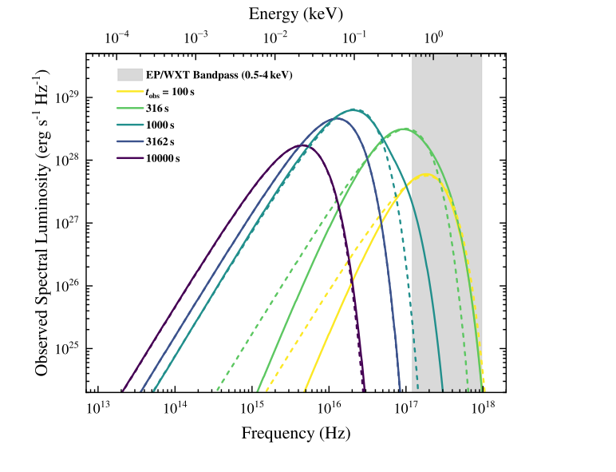
图注：示例壳层模型在激波突破和冷却阶段的多时刻观测谱。彩色实线为观测时刻10²至10⁴秒的模拟谱，虚线为对应黑体拟合；灰色区域标出WXT约0.5–4 keV能段。横轴下方为频率、上方为光子能量，纵轴为观测谱光度。
怎么看这张图：先比较灰区外实虚线差异，再看有限能段内相近程度。早期光行时混合不同温度，宽带上不是单温黑体；局部黑体拟合可用，不能因此推断局域热平衡。 直接呈现核心谱形解释。
来源与置信度：arXiv HTML；source verified；https://arxiv.org/html/2611.26008v1/Figure_Spectrum.svg
图6：三个事件的联合拟合
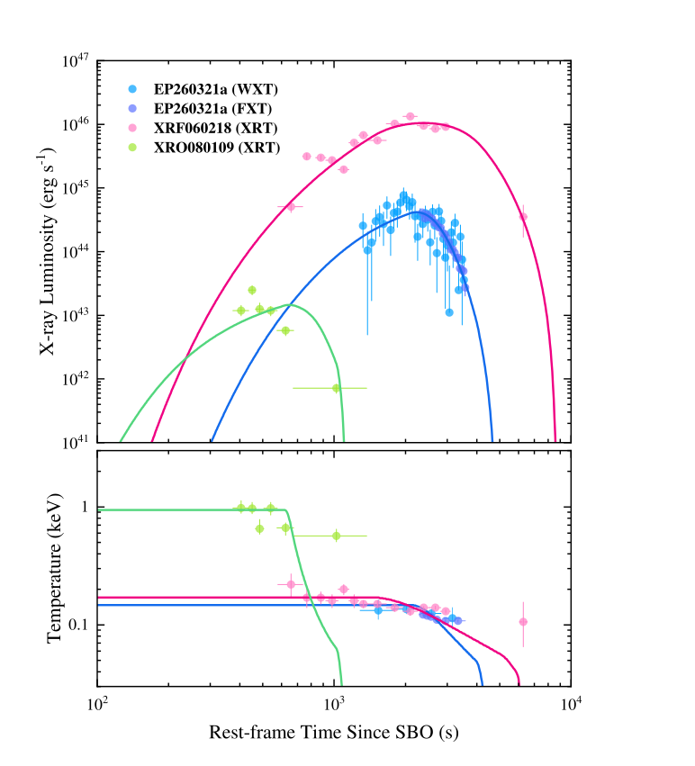
图注：EP260321a、XRF 060218热成分及XRO 080109的X射线光变（上）与温度演化（下），蓝、粉、绿色点分别对应三事件，实线为最佳模型；横轴为相对激波突破的源静止系时间。XRF最后一个粉色点的大误差及偏离可能源于非热成分扣除不完全和低光子数。
怎么看这张图：上下同时比较才检验同一组壳层参数；曲线跟随总体趋势不等于模型已唯一确认。EP后验预测p=0.027仍有张力，XRO拟合厚壳χ约0.85挑战恒速近似，XRF只解释热成分。 展示可解释范围与必须保留的拟合限制。
来源与置信度：arXiv HTML；source verified；https://arxiv.org/html/2611.26008v1/Figure_Cases.svg
强相关工作
本文在既有延展物质和致密壳层冷却模型上，加入非LTE色温和光行时，再联合拟合软X射线光度与温度。附录A将相同三组参数下的本模型与Piro及Margalit模型对照，早期与扩散前沿到内边界的转换总体相近，峰附近因光行时有差别；这是明确计算设置下的对照，不是所有冷却模型的全面优劣评定。
EP260321a的观测研究提出薄壳突破背景，XRF 060218与XRO 080109则已有长期讨论的风、喷流和突破解释。本文针对后两者的热成分或选定黑体拟合给出另一套统一描述，尤其不拟合XRF伽马即时辐射和余辉。关联研究应按具体成分比较，不能因为同一事件拟合成功就把其他区域的物理排除。
同一事件 / 同类源线索：
相似工作：
（未提供）
基础理论 / 方法工作：
（未提供）
相反观点 / 张力线索：
（未提供）
6. Outflow Properties from a Broad Range of GR$ν$RMHD Stellar-Mass Black Hole Accretion Disks
- 来源：arXiv / astro-ph.HE
- 链接：https://arxiv.org/abs/2611.26534
- 作者：Marko Ristić, Jonah M. Miller, Richard O'Shaughnessy, Matthew R. Mumpower, Christopher J. Fontes, Chris L. Fryer, Ryan T. Wollaeger
- 公告 / 来源日期：2026-11-20
- 阅读层级：重点精读
- 评分：novelty 8/10，importance 8/10，relevance 8/10，final 9.00/10
- 推荐理由：25组含中微子输运的广义相对论磁流体盘系统扩展抛射质量、速度与核合成标度，能连接并合盘初态与千新星；需核验外推及初始条件限制。
中文题目：25组含中微子输运的黑洞吸积盘：千新星抛射物的速度、质量与成分从何而来
做了什么：中子星并合后，绕黑洞旋转的热盘会把一部分物质重新吹回星际空间。这些富中子的物质通过快速中子俘获合成重元素，随后放射性衰变供能，形成光学和红外千新星。本文用25组含频率相关蒙特卡罗中微子输运的广义相对论磁流体模拟，改变黑洞质量、自旋以及盘质量、初始电子丰度和熵，建立从盘初态到外流速度、质量及核合成产额的关系。它研究的是理想化的并合后盘，并非把双星并合、盘演化和可见光辐射完整贯通的端到端计算。
多数模拟在提取面上的质量加权径向速度约为光速的7%，其合并分布可用偏正态形式描述。质量关系则必须区分模拟终止时已经流出的物质与外推盘寿命后预计流出的物质：剔除速度异常盘后，前者随初始盘质量的指数为$0.83\pm0.12$，后者为$0.98\pm0.14$。约一半盘质量最终被抛出的结论来自短时模拟的外推，而不是直接演化至耗尽。成分与空间位置也相互关联，不能把初始低电子丰度简单等同于必然形成红色、富镧系千新星。
为什么重要：千新星光变拟合常把抛射质量、速度、形状和成分独立调节；但这些量都受同一个吸积盘的弱相互作用、磁湍流和引力势约束。本文以统一数值处理展示哪些趋势在不同盘之间近似稳定，哪些依赖初态或外推，为限制任意参数组合提供了物理参照。贡献在于建立可追溯的模拟库与诊断关系；它没有给出一个适用于所有并合的确定质量损失比例，也没有用这25个模型测量宇宙中的盘总体分布。
理论 / 观测 / 仪器方法价值：可借鉴的是把昂贵的三维模拟、被动示踪粒子、核反应网络及近似解析关系分开校验的流程。示踪粒子保留密度、温度和电子丰度历史，核合成计算因此能够解释不同速度和角区为什么具有不同元素产额。高斯过程用来寻找尚未充分采样的初始参数区，而非替代物理模拟；作者同时保留了初始化失败、早停和异常分布的限制，使得拟合关系的训练范围可以审计。
为什么应该关注：对伽马暴与多信使研究，这项工作连接的是中心发动机盘、喷流功率估计和较晚的热辐射。将伽马暴提示的能量预算与千新星抛射质量并用，有望收紧盘性质，但必须另建辐射效率、束射和动力学抛射分量的模型。文中的中微子是调节盘成分的热中微子输运，不能直接当成高能天体中微子产额预测；后者还需要非热粒子加速和靶场信息。
展开详细解读：文章讲解、背景、理论、重点章节、图表与相关工作
文章详细讲解
科学问题是：千新星模型需要的抛射物参数，能否由并合后吸积盘的初始物理状态共同决定？已有单个或小规模模拟能展示盘风，却很难判断某个速度或元素产额是普遍行为还是特定参数的结果。作者因此改变五个输入量，比较外流的统计分布，而不是只寻找一组拟合GW170817的“最佳模型”。
方法上，盘从固定Kerr时空中的平衡环面开始，含一个初始极向磁场环。磁旋转不稳定性使盘产生湍流并向黑洞吸积；频率相关中微子输运同时交换能量、动量和轻子数。约百万个被动示踪粒子记录各流体元的热历史，穿过提取面并满足选取条件的粒子形成外流样本。这样可以在相同代码与微物理约定下比较不同初态。
主要结果由两条证据链构成。一条是把所有盘的粒子速度按质量合并，得到约$0.07c$的特征速度，再用分布距离找出不符合平均形状的盘；另一条是分别拟合已流出质量与外推质量，显示二者的归一化相差很大。核合成则进一步说明，电子丰度的分布尾部、初始熵与黑洞自旋共同影响第三丰度峰和锕系产额，单看平均值或初始值会丢掉决定性信息。
限制直接来自计算时长和模型构造。模拟主要只覆盖数百毫秒，盘可以继续演化数秒；固定速度投射到三小时后的双叶形状不是连续模拟的直接图像。成功初始化的环面还存在幸存者偏差，少数输出被降为轴对称存储，若干盘提前终止。下一步应对代表模型延长演化、采用更物理的盘先验，并把成分与密度场传入辐射转移验证，而不能把现有拟合外推到任意黑洞与盘组合。
关键结果是怎么做出来的
第一步看表1和表2的输入与符号。25个模型包含11个初始模型和14个经高斯过程引导放置的模型，不是25个全新独立设计的观测案例；部分模型或其变体已有发表记录。星号表示提前终止，匕首表示三维模拟结果因存储限制而降采样为二维。这些标记会影响“同一演化阶段”比较，不能忽略后只按黑洞质量排序。
第二步从粒子到速度分布。提取半径为$250GM_{\rm bh}/c^2$，约为千至数千公里。每个粒子的质量权重被保留，合并样本拟合的是$\log v_r$分布；右侧高速尾部会影响辐射演化，因此不能仅用平均速度替代。作者以Jensen–Shannon散度比较各盘与平均拟合，识别3、8、9、19、25号盘为偏离较大的实例，其中既有极低质量盘，也有重盘和提前终止盘，未找到唯一解释变量。
第三步比较图5与表3。全库拟合得到已测抛射质量指数$1.13\pm0.10$，外推指数$1.44\pm0.13$；删除速度异常盘后，指数分别变为$0.83\pm0.12$和$0.98\pm0.14$。因此“近线性质量关系”取决于具体样本与外推定义，而不是四种拟合都给同一个斜率。讨论部分另写$p=0.97$，本文解读采用表3的$0.98\pm0.14$并保留这一末位差别。
第四步核对核合成的输入。作者把粒子分成15个电子丰度箱，每箱选代表轨迹并按箱质量加权；分别进行低/高速度和极/非极区切分，而不是同时组合全部切分。轨迹从最后一次经过约10 GK开始，避免重新回盘升温破坏单向冷却假设。这个降采样保留了主要丰度结构，但不是对所有十万量级逃逸粒子逐个运行反应网络。
第五步把统计与观测意义分开。表2的末态电子丰度覆盖约0.16至0.50，平均约0.33至0.34；若初态高电子丰度的模型占得多，平均自然受到放置策略影响。作者做过删去部分初态接近均值模型的检查，仍得到约0.33，但这只检查了一个偏差来源。极区或低电子丰度尾部能改变镧系、锕系产量，不能据盘库平均丰度宣称每个源都会产生蓝千新星。
展开背景、理论、公式、模型和章节导读
背景知识
中子星并合会在不同阶段抛出物质。动力学抛射发生在并合的强潮汐和碰撞阶段；盘外流则在剩余环面吸积、冷却和膨胀过程中产生。两者可能同时贡献千新星，却有不同速度、角分布和成分。本文模拟的是后一阶段，因此不能用其盘质量直接代替一次并合的全部抛射质量。
快速中子俘获过程要求原子核在衰变前不断捕获中子。电子丰度是每重子对应的质子比例，在电中性条件下也反映电子数；它越小，通常可用中子越多。但最终元素还受熵、膨胀时标和中微子照射影响，初始盘的电子丰度不能不经演化就用于核合成判断。
镧系元素具有复杂原子能级，往往增加光学不透明度，使辐射更晚、偏红地释放。因此文献常把低电子丰度与红分量联系，把较高电子丰度与蓝分量联系。这是有用的经验组织方式，却不是单一阈值定理：沿视线的密度、几何遮挡以及成分分布也影响观测颜色，本文本身没有计算整套最终光变。
吸积盘还与伽马暴发动机相关。磁场可以从旋转黑洞提取能量，而盘提供磁通和物质供应。盘风与相对论喷流不是同一速度群体，前者约百分之几光速，后者需要另行处理。把二者联系起来的价值在于共同能量和质量预算，而不是把盘风速度当作伽马暴洛伦兹因子。
基础理论 / 方法脉络
数值系统的基础是固定背景中的广义相对论磁流体。固定Kerr度规刻画旋转黑洞附近的引力，流体、磁场与中微子在此背景上演化。初始环面具有指定的角动量、熵和电子丰度，之后磁旋转不稳定性驱动角动量输运。SFHo状态方程把密度、温度和成分关联起来，这使弱相互作用率与盘的热状态相互反馈。
中微子输运不只是一个能量冷却项。电子型中微子与反中微子的吸收、发射改变中子和质子比例，也改变电子丰度；若密度很低，盘可能不足以点燃有效的中微子冷却，初态电子丰度就不容易被重置。作者用最低质量的3号盘展示这种极限，它的高熵与高电子丰度不能用重盘的平均规律解释。
外流判据是另一个理论接口。穿过有限半径并满足Bernoulli判据的流体元通常可视为逃逸候选，但后续压力、加热和相互作用仍可能改变其命运。粒子提取面还引入飞行时间延迟，作者用一个代表高速来校正整体质量流率；这不等于追踪每个粒子的真实轨道，故少数模型会出现不物理的负起始时刻。
统计模型负责压缩数值结果，而非建立新的守恒律。偏正态拟合描述速度直方图；幂律描述特定样本内的质量关系；高斯过程方差只指导下一组初态采样。各输出方差具有不同量纲而未归一化，独立一维核密度采样也忽略输入相关性，所以放置算法不能解读为已经获得物理总体的最优无偏抽样。
公式与推导
以下沿“成分—采样—速度—质量—形态”展开。前两式是定义或教学重述，第三至第五式对应正文拟合，第六至第七式明确是外推假设的写法，不新增观测结论。
先定义控制中子储备的电子丰度。对中子数密度$n_n$和质子数密度$n_p$，有
这是无量纲比值。它必须沿轨迹随弱相互作用演化，再作为反应网络输入，不能以初始值替代所有外流的末态值。
对某个粒子属性$q_i$，以粒子代表质量$m_i$求平均：
这个定义解释为何少量大质量示踪粒子能主导合并统计，也说明平均盘与质量平均的概念不同。
令$x=\log(v_r/c)$、$y=(x-\mu)/\sigma$，正文式4使用
$\phi$、$\Phi$分别为标准正态密度和累积分布。这里拟合变量是对数速度，若改在$v_r$上积分必须带变量变换的Jacobian；这些数值也不能直接当作线性速度的均值、标准差。应沿原图横轴的对数约定使用，不混入另一对数底。
正文式5写成
括号无量纲，因此$A$带太阳质量单位。剔除异常盘后，模拟结束时$A=9.82^{+1.80}_{-1.50}\times10^{-4}M_\odot$、$p=0.83\pm0.12$；寿命末端外推则为$A=3.86^{+0.82}_{-0.67}\times10^{-2}M_\odot$、$p=0.98\pm0.14$。二者不能混用归一化与指数。
正文式3的喷流功率估计为
$R^2=0.804$描述库内拟合，而不是观测反演的置信度。对较大盘质量子区，文中另给更陡的1.61指数；该关系基于Blandford–Znajek功率计算，未直接模拟喷流辐射。
把外推的质量流率写成守恒记账，可理解盘寿命如何定义：
作者逐步扣除剩余盘质量直至耗尽；流率由短时模拟末段拟合，某些不收敛情形改用常值。守恒记账正确不代表外推流率准确，这正是约50%最终抛射比例的主要系统限制。
最后，三小时形态采用无外力、恒定笛卡尔速度的弹道延拓：
此式把提取面的速度与位置映射到空间分布，但忽略后续加热和碰撞。图6的双叶形态应理解为这一条件下的预测，而非三小时全物理模拟的直接输出。
模型拟合 / 应用方法
输入空间有五维：黑洞质量和自旋、盘初始质量、电子丰度及熵。作者先以11个模型训练12个分别对应总、极区及赤道区输出的高斯过程，再在方差大的区域选候选初态。方差求和未统一尺度，采样也受到环面能否稳定初始化的筛选，所以25个最终模型不具备总体统计代表性；拟合误差带不包括这种选择偏差。
速度拟合先拼接全部粒子及其质量权重，再拟合对数速度的偏正态分布；随后分别比较每个盘的分布。Jensen–Shannon散度是形状差异诊断，不是拒绝物理模型的显著性。散度大于0.1的五个盘被单列，解释涉及低质量极限、重盘松弛时间及早停，但作者没有证明其中任何一项能唯一决定异常。
质量拟合需同时检查全样本与剔除异常盘的版本。全样本的寿命末端指数高于1，剔除后接近1，说明少数模型对结论有明显影响。图5展示剔除后的拟合及1σ区间，方形点仍用于标出被排除对象。误差是该拟合的统计描述，并没有自动覆盖后期流率改变、提取面判据及少数毫秒时间平移的不确定性。
核合成验证使用PRISM对代表轨迹计算，而不是把电子丰度阈值直接当成元素产额。速度切分在$0.08c$，角度切分在离轴30度；其角度定义与训练高斯过程时的40度/75度切分不同，不应混写。将核合成表用于千新星建模时，应保留这些采样定义及质量权重，最好再以更多轨迹验证高不透明度元素的低丰度尾部。
重点章节 / 结果段落怎么读
-
§II.1与表1先读初始环面、提取半径和运行终止条件，特别识别星号与匕首，避免把早停样本当作相同物理年龄。
-
§II.2与§IV的失败初态讨论连读，理解高斯过程方差引导的是“去哪算”，不是天然的天体物理先验；失败运行资料部分遗失限制了稳定性统计。
-
§II.3、§III.3与表3连读，区分已经测出的质量、外推质量和全样本/缩减样本，核对0.98与讨论0.97的末位差异。
-
§II.4和§III.4解释反应网络如何从粒子轨迹得到产额，再对照角区和速度图，确认初始电子丰度、末态均值与分布尾部各自承担什么角色。
-
§IV的形态外推和§V一起读，所有约三小时形态和约50%抛射比例都必须带上外推条件，不能被结论段的简洁表述冲淡。
关键图表与解读
图3：盘外流径向速度分布
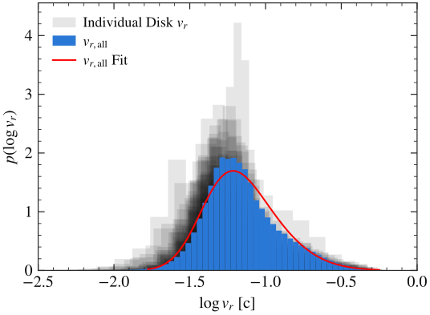
图注：各盘示踪粒子的质量加权径向速度分布为灰色直方图，全部盘粒子合并后为蓝色直方图；红线是对合并样本对数速度分布的偏正态拟合，偏度参数2.01、位置参数−1.4、尺度参数0.35。
怎么看这张图：注意分布的高速尾部而不仅是约0.07c的典型速度。合并曲线不能掩盖图4所列五个异常盘，也不是宇宙盘总体的概率分布。 直接支撑跨盘近似稳定速度与分布尾部的主结论。
来源与置信度：arXiv HTML；source verified；https://arxiv.org/html/2611.26534v1/vr_fit_skewnorm_average.svg
图5：已测与外推抛射质量
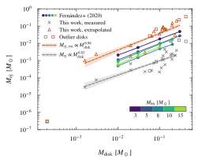
图注：横轴为初始盘质量，纵轴为抛射质量；灰点对应模拟终止时的已测量，橙点对应外推至盘寿命终点的量。曲线和阴影为幂律拟合及1σ区间。方形标出图4的速度异常盘，这些点未纳入图示拟合。另绘黑洞—中子星并合盘的文献预测，随残骸黑洞质量变化其指数约为0.92至1。
怎么看这张图：同一横坐标下橙灰分离展示外推占据的份额；不能把橙点当作直接模拟至耗尽。表3的缩减样本指数为0.98±0.14，讨论写0.97，保留这一差别。 揭示最重要的质量外推与样本选择条件。
来源与置信度：arXiv HTML；source verified；https://arxiv.org/html/2611.26534v1/fig_mej_vs_mdisk.svg
图6：弹道外推的三小时抛射物形态
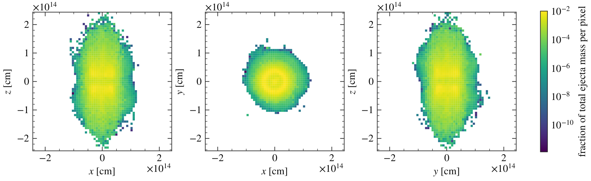
图注：对模拟库平均后的盘外流，展示并合后10800秒时在x–z、x–y和y–z平面的截面。颜色表示每个像素所占的质量份额。图中沿喷流轴呈双叶形，来自提取面示踪信息的恒速度外推。
怎么看这张图：双叶形支持采用非球对称盘风几何的动机，但不是运行到三小时的完整磁流体结果；盘间等权方式与粒子数差异也会影响平均形状。 将可用于千新星辐射建模的几何预测和外推边界一起呈现。
来源与置信度：arXiv HTML；source verified；https://arxiv.org/html/2611.26534v1/kn_morph_disk_avg.png
强相关工作
作者将速度约$0.07c$与早期二维盘风工作的约$0.067c$比较，同时指出与部分强磁场三维模拟仍有差异。关于中微子照射使电子丰度升高、抑制镧系并产生蓝分量的物理脉络，可沿参考文献Metzger与Fernández（2014，arXiv:1402.4803）阅读；本文增加的是统一输运处理下更宽初态范围，而非首次提出这条因果链。
与本库最直接相关的是同一代码对代表盘的长时演化。Sprouse等（2024，arXiv:2309.07966）把相关模型延长至1.2秒，说明后期外流率并不一定维持早期比例。本文短时库覆盖广，但长时单模型对外推可靠性有不同价值，两者互补。代码方法与验证可追至Miller等（2019，arXiv:1903.09273），不能把本文数据库的所有物理结论都视为新代码验证。
同一事件 / 同类源线索：
相似工作：
基础理论 / 方法工作：
相反观点 / 张力线索：
（未提供）
7. Self-gravity depletes superradiant clouds
- 来源：arXiv / astro-ph.HE
- 链接：https://arxiv.org/abs/2611.26541
- 作者：Mateja Bošković, Lucas Gathercole, Thomas F. M. Spieksma, Samuel J. Witte
- 公告 / 来源日期：2026-11-20
- 阅读层级：重点精读
- 评分：novelty 8/10，importance 8/10，relevance 8/10，final 9.00/10
- 推荐理由：自引力诱导能级重分配可显著耗减超辐射云，改变自由场信号估计的基础假设，伴星部分抵消效应提供环境依赖，须核对近似适用范围。
中文题目：超辐射标量云并非自由场：自引力散射快速耗减云团，伴星却可能部分保住它
做了什么：旋转黑洞可以通过超辐射把能量与角动量转移给超轻玻色子，形成类似氢原子的离散束缚态。常见预测假定粒子之间没有相互作用，各能级独立增长，形成大质量云后缓慢通过引力波衰减。本文指出，即使粒子势中的自相互作用趋零，云本身的引力仍会耦合能级：两个束缚粒子散射后，一个进入另一能级，另一个落入黑洞或逃到无穷远。这给耗散设置了不能通过增大轴子衰变常数而消除的引力下限。
作者把自引力、黑洞反冲、轴子自相互作用与引力波过程纳入能级演化，并计算215个准束缚态和约7万个散射通道。小耦合参数下，主导云态可先长到通常的饱和值，随后按近似$t^{-1/2}$耗减；一个$10M_\odot$、$\alpha=0.1$的示例耗减特征时间仅约四天，而自由场引力波耗散需十万至百万年。另一方面，伴星可以优先排空辅助能级，削弱受激耗散，使主导态比同龄孤立云更重。这里报告的是理论演化和例证，不是新探测或对全部黑洞自旋限制的统一否定。
为什么重要：许多连续引力波、随机背景及双星轨道效应预测依赖云中存有足够质量。若能级间的引力散射远快于引力波湮灭，长寿命大质量云的假设便会系统性高估信号。本文把“可忽略粒子势的自相互作用”和“可忽略云内所有相互作用”区分开来，指出后者不成立。最早一轮黑洞旋降在自引力主导区仍近似保持，因此最直接受影响的是云信号强度与寿命，而不是所有超辐射证据同时失效。
理论 / 观测 / 仪器方法价值：方法价值在于把同一物理过程连接到有效哈密顿量、通道振幅、占据数速率方程和可观测质量标度，并用两能级解析解解释大型数值网络。黑洞反冲与云牛顿自引力同阶，对偶极通道还能改变振幅符号；忽略它会连自引力和轴子自相互作用是增强还是抵消都判断错误。补充材料另外检验了相对论修正及基底选择，使“简单氢原子估计足够精确”的适用范围变得可核查。
为什么应该关注：对多信使与暗物质研究，这意味着根据黑洞环境选择目标和构造信号模板同样重要。伴星可能缓解某些云态的耗减，却在更晚的轨道阶段把云电离，不能只加一个恒定增强因子。文中示例可同时涉及空间探测器的轨道频段和地面探测器的连续波频段，但是否可探测仍需距离、噪声、形成率和寿命分布；本工作没有完成这样的总体灵敏度预测，也不直接给出伽马射线或中微子通量。
展开详细解读：文章讲解、背景、理论、重点章节、图表与相关工作
文章详细讲解
科学问题来自一个看似自然的极限：把轴子衰变常数取得很大，粒子自身的四次耦合减弱，是否就得到长期稳定的自由云？作者的回答是云仍然有引力，且自引力不仅移动能级频率，还产生真正的能级间散射和向黑洞、无穷远的通量。只保留对角能级位移会漏掉决定云质量寿命的非对角过程。
作者先在非相对论、云质量远小于黑洞质量的范围内构造相互作用核，再把场展开到准束缚态上。轴子接触相互作用、云的长程牛顿引力和动量守恒要求的黑洞反冲贡献到同一通道的振幅，所以必须先相加再平方。对于向黑洞吸收的通道，球对称末态很重要，Kerr背景中的传播和吸收使简单平直空间氢原子近似出现量级为一的修正。
结果的核心可用211和322两能级说明。211先通过超辐射增长，之后两个211粒子产生一个322粒子及一个落入黑洞的粒子；逆向网络又把部分粒子辐射出去。322与211的占据比迅速趋于吸引解，主导态服从三次耗散率，因而得到$t^{-1/2}$衰减。更晚322继续让黑洞旋降，211被重新吸收，再由544及更高态接续，此时简单二能级近似逐渐失效。
限制与环境效应同样关键。本文实际演化采用主导自引力矩阵元和相对论散射处理，补充材料计算的后牛顿修正并未全部加入演化；部分低自旋速率由高自旋值缩放，会带来系数误差。伴星部分仅作圆形赤道轨道的概念验证，未跟随云完成电离阶段。结论应是重做依赖大云质量的预测，而不是宣称已排除玻色子云或已给出所有环境下的唯一剩余质量。
关键结果是怎么做出来的
第一条证据是相互作用强度的标度与图1。自引力通道不依赖轴子衰变常数$f_a$，而粒子自相互作用随$f_a$增大迅速减弱。对耗减211的代表通道，两者接近相等的尺度约为$6\times10^{16}(\alpha/0.1)$ GeV；其他通道的系数不同，因此让一个通道抵消不能让整个网络变成自由场。
第二条证据是反冲的推导。把黑洞与云视为共同质心系统，云携带动量时黑洞必须反向运动，其动能可写成云动量平方除以两倍黑洞质量。补充S.2证明这一项在不同主量子数的偶极跃迁中与牛顿项同阶。它使211相关两条通道的引力振幅与吸引型轴子四次耦合发生相消；这是图2中加入自引力后某些中间时刻反而比“仅自相互作用”更重的原因。
第三条证据是两能级近似和数值网络的对照。图2左例在初始$\alpha_0=0.05$时，解析衰减归一化及占据比与数值结果相差约1%；到演化末期，云比自由场预测轻数千倍。这是特定例子的内部一致性，不是观测误差。右例更大耦合参数下，散射使无角动量粒子落入黑洞，黑洞质量增加、无量纲自旋下降，211可在饱和后很快被重新吸收，不能继续套用小耦合的长时衰减式。
第四条证据来自补充表S1和图S1、S2。用Kerr格林函数得到的吸收通道系数可显著高于主导氢原子近似，因而耗减系数也改变。表S1说明把在自旋0.95计算的速率缩放到饱和自旋，会把某些吸收速率高估约1.1至1.5倍、耗减系数高估约1.2至2.4倍；后牛顿项在适用区域还可有约10%修正。趋势稳健与每个数值精确是两个层次，文中并未把这些系统项都纳入置信区间。
第五条证据是伴星例子的反直觉机制。图3取$100M_\odot$黑洞、$\alpha=0.12$和质量比0.1的同向圆轨道，伴星潮汐把322混入迅速被吸收的300态。辅助态减少，211的受激耗减通道随之变弱，211可比孤立情形重约30倍。补充S.5显示增强依赖形成时刻和轨道方向；某些共振反而破坏211，晚期电离又结束这一保护，故30倍不能推广为普遍修正。
展开背景、理论、公式、模型和章节导读
背景知识
超辐射是一种从旋转黑洞抽取能量的波动放大过程。对具有质量的场，质量项在远处提供束缚，使波反复与黑洞相互作用。某些满足频率与方位角量子数条件的模增长，云便形成。所谓“引力原子”强调其离散态结构，并不表示黑洞具有普通原子核的电磁作用。
态标记$n\ell m$分别对应主量子数、轨道角动量量子数及其轴向投影。211通常是快速增长的重要标量态，较高主量子数的态空间尺度更大。云从一个态转移到另一个态，既改变总质量随时间的分配，也改变可被伴星潮汐触及的空间范围；因此不能只追踪总云质量而忽略能级构成。
轴子自相互作用来自其周期势的低阶展开。衰变常数$f_a$大时，这类接触耦合小，过去常据此近似自由场。引力却由云的能量本身产生，不会随$f_a$消失。本文讨论的“没有自由场极限”是这个物理意义：微观势可以接近自由，但自引力和反冲仍使不同模发生耦合，并非数学上不能写自由Klein–Gordon方程。
云的观测途径有不同质量依赖。黑洞旋降记录已抽走的角动量，云后来被耗减并不自动抹去早期旋降。连续引力波则依赖当前发射态的质量；双星轨道反作用还取决于云的尺寸与态分布。把这些途径分开，才能理解为何本文对连续波预报影响很强，却认为基于最初211旋降的一类限制基本不变。
基础理论 / 方法脉络
理论展开首先要求$\alpha\ll1$且$M_c/M\ll1$。在自然单位下，$\alpha=GM\mu$衡量黑洞引力半径与玻色子康普顿波长的相对关系。它不仅设定云的大小，还通过高次幂控制增长与散射时标，所以几百分比的黑洞质量变化也可能对耗减速度产生可见影响。
相互作用哈密顿量包含密度与密度的四次项。长程自引力核与短程轴子核的径向形状不同，但在态展开后都给出四模重叠积分。对角项移动能级，非对角项把粒子从已占据模转移出去。要得到不可逆损失，还必须对第四条腿施加黑洞吸收或向无穷远流出的边界条件；仅有封闭系统中的能级混合不足以代表全部耗散。
多粒子占据会增强散射。211云很小时，322几乎未被占据，通道难以追上超辐射增长，因此在自引力主导区第一轮饱和近似不变。云长大后，速率含占据数的乘积，辅助态能够建立，耗减突然变得重要。三次速率和常数占据比共同导出幂律衰减，而不是一个固定指数寿命。
相互作用与环境不能被机械地各加一个损失率。若伴星优先耗尽辅助态，它会切断主态受激散射，净效果可能是保留主态；但另一共振或电离又能移走主态本身。同样，两种内部相互作用应先在振幅级叠加，符号相反时局部相消。本文因而强调同时演化状态网络与黑洞、必要时再加轨道，而不是把“引力”“轴子”“伴星”三类效应各取最强者。
公式与推导
以下采用论文$c=\hbar=1$约定，$M$为黑洞质量、$\mu$为玻色子质量、$M_c$为云质量。先用定义联系尺寸与耦合：
$r_B$是引力玻尔半径，故升到高$n$态会把云扩展到更远处，使环境更早参与。
正文式2–3的关键自引力核与粒子自相互作用核为
$\lambda\simeq\mu^2/f_a^2$；二者进入同一个四场相互作用能，因此小$\lambda$不能使第一项消失。
动量守恒补上正文式4的黑洞反冲：
这是把黑洞自由度消去后的正动能项。其模矩阵元含两个动量算符，偶极选择定则使其只影响部分通道，但在那些通道中可与牛顿项同阶并改变符号。
对单一主导多极且相对相位完全同向或反向的通道，正文式9给
$f_a^\star$是该通道两种贡献等强的尺度。补充S.3明确指出多极求和时须用振幅平方的完整和，通常$|\kappa|\leq1$；所以上式的严格零点不是任意通道的通用公式。
令$x=\varepsilon_{211}$、$y=\varepsilon_{322}$，其中$\varepsilon_a=N_a/(GM_0^2)$。在第一态已饱和、暂忽略第二态继续超辐射及引力波跃迁的阶段，补充式S52化为
系数2表示某次散射消耗两个同态粒子；黑洞与无穷远通量对应不同的损失支路，不能把两式简单看作总粒子数守恒。
当$\beta=\gamma_{\rm BH}/\gamma_\infty\ll1$，占据比趋于$r_\star=y/x\simeq\beta/2$。代回前式得到
此处$C$带时间倒数，$x$无量纲。它把微观通道速率压缩成主导态的有效耗减系数。
对上述微分方程直接积分，得到正文式10对应的完整初值形式：
在$2C(t-t_{\rm sat})\gg x_{\rm sat}^{-2}$时才有$x\propto t^{-1/2}$，丢失对初始饱和值的记忆；若211迅速再吸收或伴星改变网络，这个渐近式不再适用。
最后用$M_c/M\simeq\alpha x$，可读出小耦合晚期标度
这是保持$\alpha$为独立量后的比较；改变黑洞质量却固定粒子质量时$\alpha$也变，不能直接沿$M^{1/2}$解读。连续波应变在固定频率与距离时随发射态质量变弱，但实际探测率仍需源总体和仪器模型。
模型拟合 / 应用方法
本文没有对新观测数据拟合粒子质量或给出置信区域，主要工作是计算通道速率并积分耦合微分方程。输入包括黑洞初始质量、自旋、$\alpha_0$和$f_a$；输出为各态质量及黑洞质量、自旋随时间变化。图2三个案例和补充参数扫描展示物理机制，不能当作对整个参数空间已经完成统计覆盖。
数值网络包含215个准束缚态与约7万个散射通道，自引力计算为简便截到$n\leq20$。高$n$态的增长率可能近简并，小计算差别会改变具体哪一态先出现。稳健可读的是云质量被转移和耗减的整体机制；每个高态的阶梯细节还受截断、环境及数值精度影响，作者也明确把更完整环境处理留待后续。
速率的校验有两个层次。Kerr准束缚态和格林函数处理保留了球对称末态的强场响应；补充后牛顿展开用来检验自引力矩阵元修正的尺度，但这些修正未进入实际演化曲线。固定高自旋计算后再按视界尺度缩放会带来系统偏差。因此图中解析与数值在约1%内相符只验证同套近似内的约化模型，不能声称最终天体预测精确到1%。
伴星例子额外指定质量比、圆形赤道轨道方向和云形成频率，同时演化潮汐耦合与轨道。需要逐项检查主态超精细共振、辅助态向球对称吸收态的非共振混合以及最终电离，三者并非同一过程。补充图S6在电离之后用虚点线仅作方向指示，作者未跟随电离完成；若用作观测模板，应补上这一阶段以及更一般偏心和倾角。
重点章节 / 结果段落怎么读
-
正文“Self-gravity as a quartic interaction”先看式2–7，分清对角能级位移、非对角散射和黑洞反冲，避免把自引力理解为仅改变频率。
-
“Cloud evolution”与补充S.3连读，用两能级的粒子去向解释三次耗减率和$t^{-1/2}$，再找出322再超辐射导致211消失的终止条件。
-
图2对照补充图S3–S5，分别改变自引力、黑洞质量和自相互作用；注意强度相消可局部增重，但不能恢复整个自由网络。
-
补充S.1、S.2与表S1核对近似层次，区分已经使用的Kerr末态修正、仅估算的后牛顿项和低自旋缩放误差。
-
图3及补充S.5解释伴星为何能保护主态；最后回到“Observational consequences”，分开连续波、轨道效应和黑洞自旋三类推论。
关键图表与解读
图2：自引力改变黑洞自旋与各能级云质量
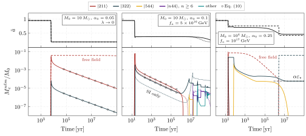
图注：上部为黑洞自旋，下部为各能级云质量相对初始黑洞质量，初始自旋均为0.95。实线包含自引力。左图比较仅自引力与自由场虚线，圆点给式10解析结果；中图比较自引力加自相互作用与仅自相互作用点线，高主量子数n44态及其余态分别求和；右图为更重黑洞的两种相互作用与自由场对照，点划线表示式11残余态。
怎么看这张图：先辨各面板的基线再比较曲线，不能把中图点线误认成自由场。左图的幂律耗减、右图211快速再吸收属于不同参数区，后者不遵循长时二态衰减。 展示解析耗减与多态数值演化的主要证据。
来源与置信度：arXiv HTML；source verified；https://arxiv.org/html/2611.26541v1/evolution_main_v8.svg
图3：伴星排空辅助态后保留主云态
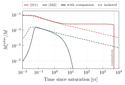
图注：211和322态云质量随饱和后的时间变化，虚线为孤立黑洞，实线为同向轨道伴星情形。取初始自旋0.95，211饱和后黑洞质量100太阳质量、耦合参数0.12、质量比0.1，云在并合前5000年形成。伴星约十年内移走322，211此后近似恒定，直到点线标出的电离起始。
怎么看这张图：较重的211并非伴星创造新粒子，而是其受激耗减支路被削弱。约30倍增强属于该形成时刻和轨道例证；电离后的完整演化不在此图计算范围。 把环境保护机制和适用边界同时呈现。
来源与置信度：arXiv HTML；source verified；https://arxiv.org/html/2611.26541v1/binary_main.svg
强相关工作
自由云连续引力波和黑洞旋降搜索的经典动机可沿本文所引Arvanitaki、Baryakhtar与Huang（2015，arXiv:1411.2263）追溯。本文不是否定超辐射放大，而是重写云形成后的耗散预算；尤其初次211旋降仍接近自由结果，说明同一先验修正对不同观测途径的影响不能混为一谈。
环境耦合部分直接承接Bošković等关于双黑洞中云轨迹的研究（arXiv:2512.17887），加入自引力网络后出现“潮汐排空辅助态反而保留主态”的效果。对比时应保持轨道方向、形成时刻和态集合一致；本文的圆轨道例证不等于该系列全部环境问题已经解决。作者另声明与同期牛顿极限自引力散射研究结果大体一致，但本文解读未额外核读那篇独立稿，不把它当作已完成交叉复现。
同一事件 / 同类源线索：
相似工作：
基础理论 / 方法工作：
相反观点 / 张力线索：
（未提供）
补充推荐：近期/较早未读论文（非今日论文）
1. An inspiral of a star inside a common envelope with its giant companion
- 来源：Nature
- 链接：https://www.nature.com/articles/s41586-026-11221-z
- 作者：Viraj Karambelkar, Kishalay De, Karel D. Temmink, Brian D. Metzger, Nadejda Blagorodnova, G. C. Anupama, Sudhanshu Barway, Judhajeet Basu
- 类型：补充推荐（近期/较早未读，非今日每日论文）
- 公告 / 来源日期：2026-11-18
- 阅读层级：重点精读
- 评分：novelty 9/10，importance 8/10，relevance 8/10，final 9.30/10
- 推荐理由：同题同作者合法arXiv作者稿已定位，恢复全文核读；保留原科学分数。
中文题目：AT 2025abao：从七年前兆到红新星爆发，追踪共同包层内旋的能量去向
做了什么：共同包层演化是指伴星进入巨星的膨胀包层，阻力消耗轨道能并使轨道收缩；结果可能是包层被抛出、留下紧双星，也可能是两星合并。本文把仙女座星系的 AT 2025abao 从1989年的静默前身、2018年开始的七年缓慢增亮，连接到2025年末的亮红新星爆发。作者结合地面巡天、SPHEREx近红外光谱、JWST中红外资料及多历元谱线，推断前身为约 $7M_\odot$ 的早期渐近巨星支星，伴星约 $0.7M_\odot$。前兆中近恒温而半径增大，符合外层内旋阻力加热与对流输运；爆发后宽氢线减速而连续谱光球继续膨胀，支持快速抛射物撞击赤道慢速物质。
这条证据链把前兆的高辐射效率与快速下潜时的高动能效率区分开来。作者估计约 $0.2$–$0.4M_\odot$ 物质脱离系统，只占包层的一小部分，约 $10^{48}\,\mathrm{erg}$ 的能量主要进入高速抛射物。在轨道能为主能源、伴星最终到达氦核附近的假设下，共同包层参数得到 $0.01\lesssim\alpha\lesssim0.4$ 的范围。它是依赖质量比、恒星结构和结局判断的经验约束，不是无模型测量；合并解释受到支持，但存活于残余包层中的紧双星仍须晚期观测排除。
为什么重要：以往常从已形成的白矮星紧双星反推共同包层效率，前身质量与包层结构均存在退化；许多亮红新星的前身又是主序星或赫罗图间隙星，其辐射包层与经典巨星共同包层不同。AT 2025abao 的价值在于已知一个具有对流包层的 AGB 前身，并观测到其前兆到爆发的连续变化，使轨道能何时辐射、何时用于抛射可以分阶段检验。结果尤其提醒：有足够总轨道能不等于整个包层必然被吹走，能量耦合到少量高速物质也可能导致包层大部保留。
理论 / 观测 / 仪器方法价值：可借鉴的是把彼此独立的诊断接在同一能量账本上：尘埃光深与半径给质量损失，宽带谱能分布给温度和有效半径，早期上升时间给扩散质量，氢线减速给扫掠质量，而恒星模型提供包层束缚能。这样能检验一种机制是否同时满足功率、时间、质量和几何约束，而非仅拟合一条光变。使用时必须保持尘气比、覆盖立体角、尘埃不透明度和恒星结构假设一致；不同观测探测的区域不同，不能把谱线宽度直接当作连续谱光球速度。
为什么应该关注：共同包层决定紧致双星与未来引力波源的形成概率，也是理解恒星外流及激波环境的基础。对高能研究而言，这篇文章提供的是受观测约束的能量供给与慢物质靶场，并没有报告伽马射线或中微子信号；Swift/XRT未探测到X射线。真正值得追踪的是后续红外壳层运动、谱线减速和长期余辉能否区分合并与存活双星，从而检验用单个效率参数描述复杂能量分配是否足够。
展开详细解读：文章讲解、背景、理论、重点章节、图表与相关工作
文章详细讲解
科学问题。 一颗巨星吞入伴星后，释放的轨道能既可能通过对流输送到表面而辐射，也可能膨胀、解束缚包层或加速少量气体。传统 $\alpha$ 处方把包层束缚能与轨道能损失联系起来，但实际能量分流很少在事件进行中被测到。AT 2025abao 的早期 AGB 前身具有相对松散的对流包层，理论上允许抛出包层而保留双星，因此其最终是否合并具有诊断意义。
作者怎么做。 先用数十年档案确认前身长期稳定，再以恒星大气加尘埃辐射转移模型恢复前兆谱能分布。2025年7月的 SPHEREx 光谱约束爆发前的冷光球与尘埃，爆发后地面及Swift测光跟踪升温、膨胀和冷却；12月JWST与SPHEREx近同时资料则测到远处存留的硅酸盐尘埃。作者再把这些观测量与阻力耗散、RLOF质量转移计算、MESA恒星模型以及动量守恒碰撞模型比较。
关键结果。 前兆光度约增至初始的六倍、半径约增至2.5倍，多数时期温度约3800 K，末段约300天才明显降温。低逃逸速度使普通外拉格朗日点慢外流的动能功率不足以解释前兆，因此作者倾向伴星已在包层中耗散轨道能。爆发的快速氢线从约900降至150 km/s，而光球仍以约330 km/s膨胀；赤道碰撞减速与极向自由膨胀可同时解释这两个不同诊断。仅抛出小部分包层却有很高动能，意味着轨道能没有均匀地用于解绑全部包层。
局限和下一步。 伴星质量并非由双线径向速度轨道直接称量，合并也不是空间分辨成像证实；两者分别依赖质量损失模型、尘埃参数和能量预算。非球形几何用于解释数据，却未被直接成像。后续需要跟踪尘壳是否继续向外移动、是否出现长期机械加能和包层脉动。短时高速测光无显著变率，不能排除所有周期和所有时段的活动；文章的七年光变起伏也不能当作已测得的相干轨道周期。
关键结果是怎么做出来的
第一步是建立可靠前身。作者把1989年POSS档案与2005–2015年的多波段资料拼接，未见显著变化；采用距离0.77 Mpc、银河消光 $E(B-V)=0.09$ mag，不另加M31内部消光。更新硅酸盐不透明度后，PHOENIX大气加DUSTY拟合给前身 $T_{\rm eff}=3650\pm50$ K、$\log(L/L_\odot)=4.25\pm0.02$，有效半径 $330\pm50R_\odot$。与MIST、PARSEC轨迹比较支持 $7\pm1M_\odot$ 的早期AGB星；正文常用350太阳半径作为量级归一化，并非另一项精密测量。
第二步是分离增亮与尘埃遮挡。2018–2024年的光学及WISE谱能分布以高斯过程插值补齐不同时刻，温度没有超过约200 K的显著变化，半径和光度随两个宽峰增加。末段光学下降而红外继续变亮，说明单波段变暗不等于总能量输出变小。爆发前SPHEREx联合光学拟合得到 $3460^{+70}_{-60}$ K、$860^{+50}_{-30}R_\odot$ 与约 $9.7\times10^4L_\odot$，但近红外单独拟合会给更低温度，提示分子吸收和模型依赖。
第三步是核对前兆机制的功率和时间。对低逃逸速度的AGB星，外流以约0.2倍逃逸速度运动时，即便质量损失约 $10^{-2}M_\odot\,\mathrm{yr^{-1}}$，动能功率也只有约 $10^{36}\,\mathrm{erg\,s^{-1}}$，低于前兆额外光度约 $10^{38}\,\mathrm{erg\,s^{-1}}$。约0.7太阳质量伴星的引力聚焦阻力可给数 $10^{38}\,\mathrm{erg\,s^{-1}}$，耗散时间约1000天，和宽前兆峰的量级相符。该比较支持内旋，但没有独立测得伴星在每一天的轨道位置。
第四步是从爆发时标、光球与谱线恢复抛射物。约20–25天上升时间配合早期800–900 km/s速度，在作者扩散标度下对应约0.14–0.25太阳质量快速物质，正文概括为约0.1–0.2。约80天平台期光球冷却到3000 K，辐射能约 $4\times10^{46}$ erg；氢发射变窄、慢速吸收减弱与蓝翼不对称显示碰撞正在扫掠原有物质。以赤道盘覆盖约20%立体角计算，约0.1–0.2太阳质量的环双星气体即可解释减速，激波可耗散约 $3\times10^{47}$ erg，足以供应平台辐射。
第五步是用尘埃提供独立质量线索。JWST看到的约 $3\times10^{15}$ cm内边缘，比爆发物在47天内可到达的距离远，也在作者估计的约 $10^{15}$ cm尘埃升华半径之外，因此被解释为爆发前已存在的尘壳。将其与静默前身尘光深结合，得到前身尘质量约 $6^{+5}_{-4}\times10^{-5}M_\odot$。把气尘比200、质量转移模型与前兆质量损失共同使用，支持质量比约0.1，但误差包含模型和尘壳厚度的不确定性。
第六步是把推断放回能量账本。MESA给氦核附近以外包层束缚能约 $1.6\times10^{47}$ erg，而伴星到约3太阳半径的轨道能释放约 $8\times10^{47}$ erg。若系统确实合并且未抛走全包层，效率上限约0.4；若至少已解束缚观测到的外层物质，效率下限约0.01。这是以合并结局为条件的区间，不是拟合得到的高斯置信区间，更不能据此否认其他共同包层事件可能有不同效率。
展开背景、理论、公式、模型和章节导读
背景知识
双星要变成紧致白矮星双星或其他短周期系统，通常需要在晚期恒星演化中显著缩小轨道。单靠缓慢恒星风很难达到这种收缩；当膨胀巨星与伴星共享气体包层时，伴星受到阻力，把轨道能和角动量传给气体。这就是共同包层演化的基本物理背景。
结局由气体结构和能量输运共同决定。松散的对流包层有机会被整体抛出，留下裸核与伴星；更紧密的辐射包层或耦合效率低的情形可能让伴星一直下沉到核附近。能量形式上的充足只是必要线索，若能量快速从表面漏掉或集中进入少量物质，并不能保证全包层脱离。
亮红新星是一类由热变冷、伴随分子吸收及尘埃的光学红外瞬变，与恒星合并密切相关。名称中的“新星”不意味着白矮星表面热核爆发。此前许多著名事件的主星处于主序或赫罗图间隙，本文明确识别AGB前身，才使它成为检验经典巨星共同包层的特殊样本。
尘埃并非只是一项遮光修正。热尘埃把吸收的恒星辐射重新发到红外，光深、温度与空间尺度留下过去质量损失的记录；远处尘埃还能在爆发后存活。联合前后期光谱可把不同时代的外流连接起来，但将尘质量转成气体质量必须假设尘气比和密度分布。
本文所谓直接观测内旋，是指观测到与其预期相符的时间演化及能量耗散，优于仅从最终双星倒推；并不是直接拍到伴星在包层内走过轨道。这个区别使“首次”结果的含义清楚，也保留了后续检查存活双星的必要性。
基础理论 / 方法脉络
首先从辐射面积理解前兆。对于有效温度近似不变的光球，光度增加主要意味着有效半径增加；这与能量输入驱动包层准静态膨胀相符。这里的半径由谱能分布推得，不是空间成像尺寸；尘埃和分子吸收必须共同建模，否则光学颜色变化会被误读成真实冷却或总光度下降。
其次是阻力和对流的竞争。伴星的引力聚焦使它影响的气体截面大于实体表面，阻力功率随密度、伴星质量和相对速度变化。外层密度低、对流能够把多余能量输送到表面时，内旋可较慢且辐射有效；进入更深处后耗散加速，恒星来不及保持准静态结构，可能转入快速下潜。作者的外层幂律是数量级近似，不应延伸到氦核附近作精确预言。
第三个环节是辐射扩散。快速抛射的气体起初光学厚，观测上升时间取决于光子逃逸与膨胀的竞争，因而可以把速度和时间转为抛射质量。这种方法隐含不透明度与几何归一化，不能将时标直接称作质量实测。平台阶段则可能由持续的抛射物—慢物质碰撞供能，机制与最初的冲击加热后冷却不同。
第四个环节是动量守恒碰撞。若冲击冷却有效，快物质扫过静止或慢速气体后速度下降，损失的动能可被辐射。赤道盘只截获部分抛射物，极向物质仍可继续膨胀，因此谱线与光球速度可以不同而不矛盾。本文用这种几何解释可行性，不能说已对三维结构完成唯一重建。
最后，$\alpha$ 参数描述轨道能中用于解束缚包层的有效比例，而不是总辐射效率或激波辐射效率。包层内部能是否计入束缚能会改变其数值；本文计入内部能，并在比较某些后共同包层双星结果时作了约0.5的口径调整。跨样本比较前必须先统一能量定义。
公式与推导
下面沿“观测光度—阻力供能—抛射质量—最终结局”组织方程。未标原文编号者是用于理解的标准推导，不冒充作者额外拟合。
（1）有效光球定义给出
$\sigma_{\rm SB}$ 为斯特藩–玻尔兹曼常数。温度近恒定时，$L\propto R_{\rm eff}^2$，所以前兆亮度上升可连接到包层膨胀；含尘模型先恢复本征谱，再使用这个定义。
（2）原文式1把稳定球对称风的光深转为质量损失率：
$\eta_{gd}$ 是气尘质量比，$v_w$ 是终端风速，$R_{\rm in}$ 是尘壳内半径，$\kappa_V$ 是每单位尘质量的不透明度。该关系来自 $\rho\propto r^{-2}$ 的视线积分，假设风和尘气比稳定；不能无改动用于强非球形瞬时抛射。
（3）原文式3为同一密度模型的尘质量：
它把辐射转移参数变成质量约束，再与RLOF模型比较推质量比。$Y$ 的不确定性直接进入质量，因此窄的温度误差不代表伴星质量也同样精确。
（4）检验外流供能用原文式5：
实际辐射功率还须乘不大于1的效率。以低逃逸速度星的慢外流代入，可发现供能不足；不是靠光变形状就排除了外拉格朗日点外流。
（5）原文式6的引力聚焦阻力近似是
$C_d$ 为量级为1的阻力系数，$\rho$ 为局部气体密度。该表达式忽略声速及复杂包层流动，以轨道速度代表相对气流；它说明供能对伴星质量近似平方敏感。
（6）取圆轨道标度 $v_{\rm orb}^2=G(M_1+M_2)/a$，代入得原文式7：
再按作者外层假设 $\rho\propto a^{-3}$ 得 $L_{\rm drag}\propto a^{-5/2}$，解释为何越向内耗散越快。它仅是外包层近似，不能与深层存活双星的低光度估算直接用同一幂律相连。
（7）标准轨道能与耗散时标提供第二项核对：
外层近似给约1000天，和前兆宽峰同量级。进入包层深处必须考虑包围质量与结构变化，不能把这一点质量近似当成整段轨道精密解。
（8）原文式10使用已选定不透明度及几何归一化的扩散标度：
反解 $M_{\rm ej}\propto t_{\rm pk}^2v_{\rm fast}$，20–25天与800–900 km/s得到约0.14–0.25太阳质量。这不是独立于不透明度的质量测量。
（9）简化的动量守恒教学式为
忽略慢物质初速度，900降至150 km/s给 $M_{\rm CBM}\simeq5M_{\rm hit}$。这里 $M_{\rm hit}=f_\Omega M_{\rm ej}$ 是撞到赤道气体的那部分质量，$f_\Omega\simeq0.2$；若误用整个抛射质量，会高估总环双星质量。
（10）原文式11及12把能量与结局联系：
前式是在轨道能主导假设下的预算，后式是成功解束缚的参数化判据。本文以正的解绑能需求使用 $E_{\rm bind}$；Methods式4的 $\int(-Gm_r/r+u)\,dm$ 是带符号总能，比较时须取相应束缚能大小。解束缚少量物质给下限约 $10^{46}/10^{48}=0.01$，没有抛尽包层的合并推断给上限；上限随伴星质量变化，约0.4是宽容边界而非精确常数。
模型拟合 / 应用方法
前身拟合使用PHOENIX恒星大气、DUSTY辐射转移和emcee MCMC。自由参数包括恒星温度、尘温、V波段光深，取低表面重力模型、标准MRN粒径分布和 $r^{-2}$ 风密度。更新的富氧硅酸盐不透明度由后期JWST谱提供依据。壳厚比在前身拟合取2，作者说明温度和光深对它不敏感，但总尘质量仍依赖更晚资料约束的壳尺度，不能混同这两种敏感性。
前兆多历元拟合先以径向基函数加白噪声核的高斯过程连接测光。多数时刻只有五个0.4–4.5微米点，部分g波段信噪比较低，温度误差约100–200 K。最后约20天只有g、r两点，作者改用黑体并按此前校准将光度作约2.3倍补偿，图中空心点须谨慎使用。这部分数据支持整体演化，却不适宜据细小弯折反演唯一轨道。
爆发后JWST联合SPHEREx模型改用黑体加尘壳，尘温、光深、单一粒径、壳厚及两种硅酸盐混合比例均参与MCMC，采用宽均匀先验。作者给参数16与84百分位，推得光深约0.10、粒径约0.11微米和内半径约 $4.7\times10^4R_\odot$。这些是特定密度和尘成分模型内的后验范围；形状复杂的硅酸盐峰能约束组分，却不能消除所有几何退化。
质量比由两条模型路径比较：半解析RLOF计算扫描0.01–1的质量比；MESA使用太阳金属丰度、约7太阳质量主星，并比较不同质量转移守恒极限。基准模型不含潮汐与自转，补充探索显示该阶段的快速失稳质量转移仍主导；一维计算在外洛希瓣溢出时停止，后续强非球形下潜没有被一维模型直接追踪。气尘比200及结构参数变化约50%的影响都应计入物理解释。
氢线的高斯FWHM与动量守恒减速曲线用于检验碰撞。文章没有给出一个把所有SED、光变、谱线、三维几何和轨道联合起来的全局似然最优解；这些相互支持的量级估计不等同于唯一模型证明。对存活双星额外机械功率的约束约 $10^{40}\,\mathrm{erg\,s^{-1}}$，仍允许更慢的内旋。周期搜索与14.7分钟高速测光均无显著信号，但有限时窗和采样限制必须保留。
重点章节 / 结果段落怎么读
-
先读正文前身及前兆段与图2：把“光学下降”与“总光度仍增加”分开，再进入Methods 1.3.1–1.3.3核对尘埃、温度和有效半径是怎样拟合出来的。
-
读Methods 1.4.1–1.4.2及图4右上：先确认JWST尘埃为什么被判为旧尘，再看尘质量怎样经过气尘比与RLOF/MESA转换为质量比，避免把伴星质量当直接轨道测量。
-
读1.4.3式5–9与图4左上：同时比较慢外流与内旋阻力的功率、时间和质量损失，检查外层密度近似及对流解释的适用范围。
-
读1.3.5、1.4.4与图3：区分光球膨胀和发射线减速对应的方向与区域，注意20%覆盖因子只作用于碰撞部分的抛射质量。
-
最后读1.4.5–1.4.6及图4下排：先读未来如何排除存活双星，再接受以合并为条件的效率区间；核对内部能、动能和辐射能没有被重复计入。
关键图表与解读
图2：热光度与光谱性质的演化
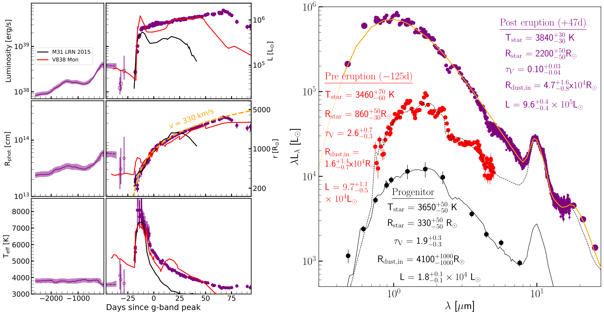
图注：左侧上下排列热光度、有效半径和光球温度；紫色曲线及阴影为前兆恒星模型拟合值与1σ误差，爆发期紫点来自黑体拟合。时间连续但前后横轴比例不同；红、黑色分别对照V838 Mon与M31-LRN-2015。半径面板黄色虚线表示330 km/s膨胀。右侧为静默前身黑点、前兆SPHEREx红谱及爆发后SPHEREx、JWST和地面紫色谱能分布，曲线为最佳模型；标注相位以g波段峰值为零点，参数误差为1σ。
怎么看这张图：先看前兆近恒温而半径增长，再看爆发升温后冷却；光学变暗不能替代热光度判断。末段只有g、r数据的空心点用了经验补偿，不能据它精确定位内旋轨道。 连接观测SED到前兆与爆发的物理阶段。
来源与置信度：arXiv HTML；source verified；https://arxiv.org/html/2611.23470v1/combined_figure_2.png
图3：氢线减速与红新星光谱演化
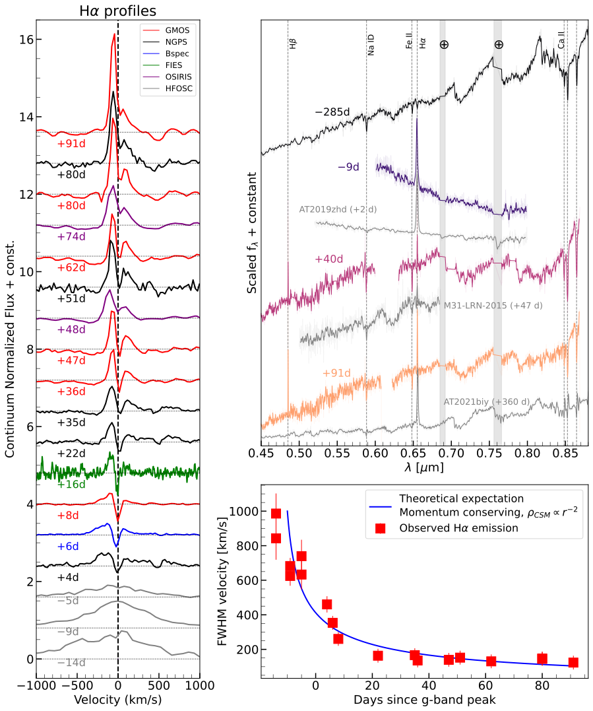
图注：左侧为连续谱归一化的Hα线型，按光谱仪着色并标注相对g峰相位，各谱沿纵轴平移，水平点线为各自基线，竖虚线为零膨胀速度。右上为峰前285天到峰后91天的代表光谱，并与类似相位的AT2019zhd、M31-LRN-2015及AT2021biy比较。右下为高斯拟合Hα发射分量所得FWHM速度和1σ误差，蓝线表示快速抛射物与环双星物质动量守恒碰撞的理论减速。
怎么看这张图：发射线变窄并伴随慢速吸收减弱，显示扫掠与减速；对比图2仍在膨胀的连续谱光球，理解二者可能对应赤道和极向不同区域。线型支持几何解释，但不是直接三维成像。 碰撞供能及非球形几何的核心光谱证据。
来源与置信度：arXiv HTML；source verified；https://arxiv.org/html/2611.23470v1/combined_figure_3.svg
图4：共同包层的功率、质量比与能量预算
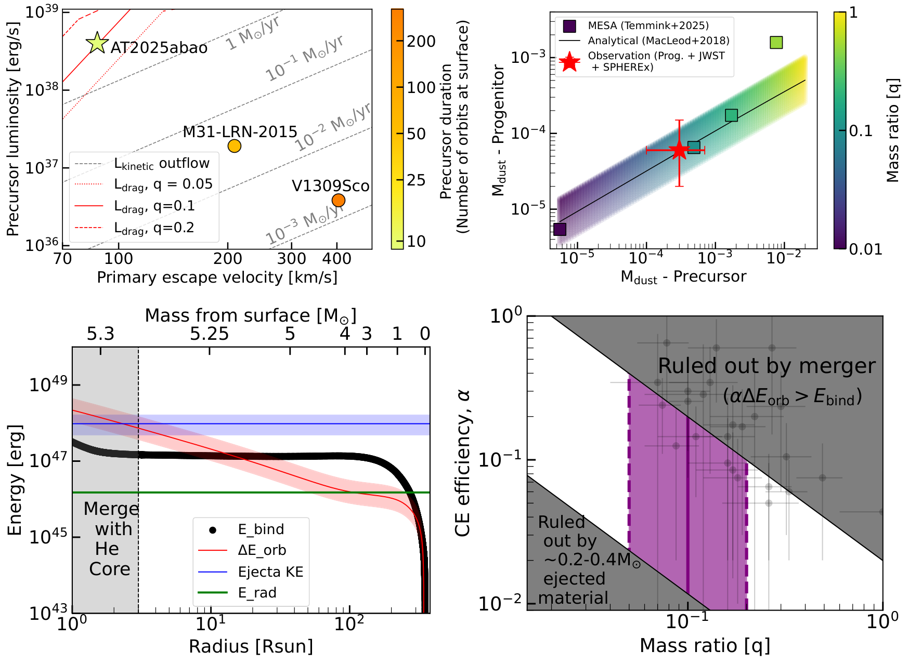
图注：左上比较AT2025abao、V1309Sco和M31-LRN-2015的前兆峰值光度与主星逃逸速度，颜色表示以主星表面轨道周期归一化的前兆时长；灰虚线为不同质量损失率的外流动能功率，红线为指定质量比的内旋阻力功率。右上比较静默前身尘质量和前兆抛出尘质量，黑线为半解析估计、方点为MESA计算、颜色表示质量比，阴影为模型参数变化，红星及误差为观测。左下给约7太阳质量、340太阳半径AGB模型的包层束缚能随半径变化（黑）、轨道能释放（红）、抛射动能（蓝）与前兆辐射能（绿）；实线为中值、阴影为1σ范围。右下为效率α对质量比，紫线与阴影标质量比约束，黑阴影表示在核心合并及已测抛射质量假设下排除的区域，黑点是后共同包层双星估计。
怎么看这张图：先用左上检验慢外流功率不足，再用左下看到抛射动能占优。右下界限以合并结局和束缚能定义为条件，不能把白区解读为独立统计测量的普适α后验。 将机制鉴别和最终效率限制放到同一可核查能量链。
来源与置信度：arXiv HTML；source verified；https://arxiv.org/html/2611.23470v1/combined_figure_4.png
强相关工作
同源前作是 Karambelkar 等2025年的《The Slow Brightening of WNTR23bzdiq/WTP19aalzlk: Possible Onset of Common Envelope Evolution in an Asymptotic Giant Branch Star?》（ApJ 993,109，本文参考文献11）。该研究在爆发前提出共同包层开始的可能性，同时保留AGB热脉冲解释；本文增加爆发、谱线减速和JWST尘埃证据，才把前兆接到共同包层结局。前作与本作有共同档案数据，不能当作两次独立事件支持同一发生率。
机制方面，Metzger与Pejcha 2017年的《Shock-powered light curves of luminous red novae as signatures of pre-dynamical mass-loss in stellar mergers》（本文参考文献37）提出快抛射物撞击预先赤道物质的图像；本文氢线减速和继续膨胀的光球为其提供具体案例，但几何仍是模型解释。Wilson与Nordhaus的对流研究（2019及2020，本文参考文献7、20）强调包层中沉积能可被输送到表面并辐射，帮助解释慢内旋与快速下潜的效率变化。2020文献链接见下；这些理论并不意味着本文已完成新的三维辐射流体模拟。
更基础的能量形式可参照Webbink的共同包层工作及《Common Envelope Evolution Redux》（本文Methods参考文献114，arXiv:0704.0280）。它为种群模型提供有效参数，但本文显示少量高速物质可占据主要能量预算，所以 $\alpha$ 不能直接解释为一个与阶段无关的微观常数。Matsumoto与Metzger的亮红新星光变模型（Methods参考文献103，arXiv:2202.10478）是扩散质量估计的依据之一；比较时应统一采用的速度、不透明度和几何。
同一事件 / 同类源线索：
相似工作：
基础理论 / 方法工作：
相反观点 / 张力线索：
（未提供）
2. Excess intergalactic heating around a dual quasar system 2.8 Gyr after the Big Bang
- 来源：Nature Astronomy
- 链接：https://www.nature.com/articles/s41550-026-03025-y
- 作者：Kirsten R. Hall, Nadia L. Zakamska, Jake S. Bennett, Yu-Ching Chen, Xiaohui Fan
- 类型：补充推荐（近期/较早未读，非今日每日论文）
- 公告 / 来源日期：2026-11-18
- 阅读层级：重点精读
- 评分：novelty 8/10，importance 8/10，relevance 8/10，final 9.00/10
- 推荐理由：同题同作者合法arXiv作者稿已定位，恢复全文核读；保留原科学分数。
中文题目：双类星体周围的热气体量热：强tSZ谱畸变及其模型边界
做了什么：在红移 $z\simeq2.37$ 的 J1549+1245 系统中，明亮类星体 J1549A 与被尘埃遮蔽的伴星系 J1549B 投影相距约19 kpc。作者联合甚大阵列（VLA）、阿塔卡马大型毫米/亚毫米阵列（ALMA）、紧凑阵列（ACA）和亚毫米阵列（SMA），用射电至亚毫米的能谱能量分布（SED）把同步辐射、冷尘埃和热 Sunyaev–Zel’dovich（tSZ）效应分开。tSZ是热电子逆康普顿散射宇宙微波背景光子造成的谱畸变，在本文毫米波段呈通量亏损。J1549B的基准模型要求约 $6\sigma$ 的tSZ振幅，对应约10–15 kpc尺度上的热能 $(9.7\pm1.6)\times10^{60}$ erg。
空间信息提供了两种不同强度的补充：距双源约100 kpc的负通量区域，积分信号约为 $5\sigma$；约600 kpc尺度的最短基线残差只有 $2.9\sigma$，应视为候选。论文的重要限定是，$6\sigma$ 是选定发射模型中的振幅显著性，并不等于排除了所有无tSZ解释：指数截断同步辐射加尘埃模型仍能拟合，贝叶斯证据之差仅 $\Delta\ln Z=1.03$。作者借交叉验证、谱形和辐射冷却的物理合理性偏好tSZ，但多温尘埃尚不能由现有频率采样统计排除。
为什么重要：类星体反馈研究经常能看到高速电离气体，却不容易量出最热、最稀薄相携带的总能量。本文把单个高红移系统的毫米谱畸变转为电子压力的体积积分，再估计整个等离子体的热能，因而直接触及“黑洞能量是否足以改变宿主供气”这个问题。在假定供能期不超过100 Myr且热量来自J1549A时，局部热库需要至少约0.6%的辐射能耦合；若归于J1549B则约1.4%。这些是带供能源和寿命假设的量热约束，并非已经直接测到恒星形成被关闭，也不意味着知道两颗黑洞各自贡献多少。
理论 / 观测 / 仪器方法价值：最可借鉴的是把正发射的频谱分解、干涉可见度拟合和残差成像放在同一条证据链中：单频点源位置若重合，正发射与负tSZ可以完全退化，多频谱形才能提供额外信息；扩展气体又主要落在短基线，需要ACA补足空间频率。作者还把模拟图像投影到真实观测的相同 $u,v$ 采样再比较，避免直接拿理想模拟图与受干涉仪滤波的图像相比。不过这种前向比较没有把模拟轮廓拟合成最佳物理模型，不能据曲线接近就宣称反馈参数已被测定。
为什么应该关注：对关注高能辐射和粒子加速的人，类星体风的热能预算是判断非热辐射可用功率的环境条件，而不是伽马射线或中微子产额的直接测量。tSZ主要追踪热电子压力；要连接宇宙线，还需独立知道加速效率、气体靶密度、磁场、输运和冷却，本文没有给出这些完整条件。这里更值得关注的是测量方法能否将风驱动热库与同步辐射曲率分开，以及更密集毫米采样、22/45 GHz甚长基线观测和更好短基线覆盖，能否分别消除频谱与空间尺度上的歧义。
展开详细解读：文章讲解、背景、理论、重点章节、图表与相关工作
文章详细讲解
科学问题。 星系形成模型需要活动黑洞把一部分能量交给周围气体，否则大质量星系容易持续形成过多恒星。可见光发射线只追踪特定温度和密度的气相；最热气体可能弱而弥散，叠在明亮类星体的X射线非热辐射上也难以辨认。本文问的不是“有没有外流”，而是已知双源环境里是否存在足够大的热压力积分，并能否把它与正常尘埃、射电发射以及晕的引力加热区分。
作者怎么做。 先用近红外至射电的整体谱形确认B源不是纯恒星形成星系：其射电和近红外发射超过与远红外匹配的星暴模板。随后分别提取A、B源通量，主要用幂律加修正黑体描述正发射，向B源加入具有已知频率形状的tSZ分量。单频101.6 GHz观测再结合12米阵列和ACA，在未经分箱的复可见度中拟合两点源并相减，检查谱模型之外是否有扩展负信号。两步利用的是不同信息，不能合成一个统一的发现显著性。
关键结果。 B源基准SED拟合给出同步谱指数 $-0.61\pm0.04$、冷尘埃温度约48 K和热能 $(9.7\pm1.6)\times10^{60}$ erg；尘埃参数存在明显退化。离双源约100 kpc处，积分亏损 $(-65\pm13)\,\mu$Jy 对应 $(6.4\pm1.3)\times10^{60}$ erg。最短基线约600 kpc的 $(-0.41\pm0.14)$ mJy可形式上换算为 $(4.0\pm1.3)\times10^{61}$ erg，但其存在性只有较弱证据。不同尺度的投影孔径和滤波不同，后者不能再与局部热能简单相加。
局限和下一步。 谱畸变与类星体反馈的解释有吸引力，却存在三层限制：无tSZ的指数截止模型未被贝叶斯证据显著排除；热库可能由A、B两源和结构形成共同贡献；tSZ测量沿视线积分，10–15 kpc的投影范围不保证三维气体严格局限在同样大小的球里。作者建议通过观测频率22和45 GHz的甚长基线数据厘清紧致射电源；对扩展热晕，还需要更密的短基线和多频观测。现有结果支持很强的热反馈候选，但不等于已重建反馈历史或证明整个星系环境已经淬火。
关键结果是怎么做出来的
第一步是识别对象和正发射。B源光学不可见，但射电、亚毫米和多条CO分子线可见，具有大质量、富尘埃星系的特征。用恒星形成模板匹配远红外后，射电和近红外仍高出约两个量级，说明仅靠星形成不能解释全谱。这是将B源也视为活动核的重要支持；其瞬时总光度约 $2\times10^{47}$ erg/s，而A源约 $5\times10^{47}$ erg/s。两者均可能为热气体供能。
第二步是把频谱凹陷变为压力。B源有1.4–233 GHz九组检测，345 GHz只是约2.5倍噪声的上限，未进入拟合。作者用带统一先验的MCMC，同时拟合同步谱归一化和斜率、尘埃光度/温度/发射率指数、tSZ压力积分。单纯幂律加尘埃的约化卡方约27，而基准含tSZ模型约4.6；固定尘埃指数为1.7后热能仍为 $(9.5\pm1.4)\times10^{60}$ erg。固定不同尘埃指数时振幅变化在约1倍误差内，说明结论不单靠该参数的一个取值。
第三步必须审查替代谱。指数截止同步辐射加尘埃可在无tSZ时产生弯曲，作者得到静止系截止频率约 $176^{+31}_{-27}$ GHz。基准模型的交叉验证预测能力更好，报告 $\Delta\mathrm{ELPD}=17.6$，95%区间半宽5.5；但贝叶斯积分证据只给 $\Delta\ln Z=1.03$，没有显著模型判别。这两项指标回答不同问题，不能挑一个便把另一个隐去。作者进一步以冷却、磁场及源大小的物理代价论证截止模型不自然，多温尘埃则仍缺足够数据约束。
第四步是空间检验。101.6 GHz的12米加ACA可见度在长基线上主要是两点源，短基线更敏感于大尺度。点源相减后，2–3 k波长分箱出现 $(-0.41\pm0.14)$ mJy；误差计入箱内散布，因此只有2.9倍误差。虚部的非零值提示不对称和采样问题，作者做相位中心移动检查；这支持关注扩展结构，却不能把一个低显著性分箱升格为高置信热晕发现。
第五步把残差重建为图像。8角秒的渐晕加权提高扩展结构的相对权重，得到偏离双源约100 kpc的负通量泡，峰值4.6倍噪声、积分5倍误差。把可见度相位随机化，保留采样、振幅和权重，600次实现没有产生同样强的同区域积分信号，给出的经验界是 $p<0.002$。它是有限次数相关噪声检验，不能独立认证5σ高斯尾概率，也没有覆盖任意位置/孔径搜索的所有试验因子。
最后才进行能量归因。局部热库高于约 $10^{13}M_\odot$ 晕的若干引力热能参照，但晕质量和热量空间范围有不确定性。正文用匹配的无反馈晕说明总热能约 $2.5\times10^{60}$ erg，仅为局部检测的26%；方法又报告七个模拟晕开关反馈后在 $R_{200}$ 内平均只增加7%热能。两者选择、孔径和比较口径不同，不能写成“开启反馈使同一晕加热3.6倍”。模拟支持考察额外供能的合理性，仍未唯一确定实际系统的反馈贡献。
展开背景、理论、公式、模型和章节导读
背景知识
类星体是超大质量黑洞高效吸积时产生的明亮活动核。黑洞附近释放的能量要影响整个星系，必须通过辐射、风或喷流把动量与能量传到远处。这个连接称为反馈。负反馈可通过加热降低气体冷却效率，也可通过抛出气体减少燃料；“足够能量”是必要的预算检验，却还需要知道空间耦合和冷却过程，才能判断真实恒星形成率如何改变。
气体的不同相并不平均携带能量。CO谱线追踪较冷分子气体，光学禁线追踪电离气体；极热弥散气体常常密度很低，依赖密度平方的辐射发射就不显眼。tSZ效应依赖电子密度与温度的乘积，是压力而不是发射量的探针，因此能补上多相外流中的热能盲区。它本身并不直接给出温度、气体密度各是多少，必须配合其他观测才可分离。
微波背景提供一个遍布天空的背光源。热电子平均把光子散射到更高能量，低频段出现亏损而较高频段出现增量；对非相对论热电子，约217 GHz附近换号。负通量不是负的物理辐射功率，而是相对于背景的谱畸变。星系内同步辐射与尘埃都可提供正的毫米通量，因此观测到的总通量即使为正，仍可能隐藏负的tSZ分量，必须作联合频谱分解。
干涉仪测的是天空亮度的空间傅里叶分量。长基线擅长细小结构，短基线敏感于扩展结构，缺少某些基线会改变可恢复的形态与通量。本文加入ACA就是为补充约600 kpc尺度的灵敏度，而非仅为了获得更清晰的小尺度图像。相同地图中的小尺度谱畸变、大尺度最短基线亏损和局部负泡，受到的空间滤波不同，不能当作三次相互独立、同口径的热量测量。
基础理论 / 方法脉络
在低光学深度条件下，tSZ谱形由无量纲康普顿参数 $y$ 决定。它沿视线累积电子压力，因此把天空上的 $y$ 再积分后，乘上角直径距离平方就得到压力体积积分。该几何转换不要求先知道每一点气体密度，但三维归属仍有投影歧义；处在同一视线上的热晕也能贡献。论文采用非相对论谱形，正文提到很热气体时仍应把所报数值理解为这一建模框架内的结果。
从电子压力到总热能还要计入离子。对充分电离、给定丰度且电子与离子按共同温度描述的理想气体，粒子总数与电子数之比由平均分子量确定。作者用 $\mu=0.613$、$\mu_e=1.17$，据此把电子压强积分乘 $3\mu_e/(2\mu)$。如果真实气体组成、热平衡状态或非热成分不同，该换算不再是完全无模型的量热。
冷尘埃采用光学薄修正黑体，温度控制弯曲位置，发射率指数控制长波端斜率，红外光度控制整体归一化。本文采样主要在瑞利–金斯尾部，因此这三项容易互相补偿；这就是角图中宽后验的物理来源。尘埃参数约束弱并不自动意味着tSZ振幅同样不可测，但必须验证改变尘埃假设后负谱分量是否稳定，作者的固定指数检查只覆盖其中一部分模型空间。
射电正发射的另一难点是谱曲率。简单幂律、折断幂律和指数截止代表不同电子分布与冷却/逃逸条件。在B源，指数截止能在数学上模拟部分毫米亏损，却需要相当高的静止系截止频率，并与源大小、磁能和同步自康普顿冷却有关。物理不自然是一项合理的模型评估信息，但依赖所考虑的辐射几何；应与统计证据分别报告，不能把它改写成模型已被形式上排除。
供能效率把热库与类星体长期辐射相联系，核心是 $f=E_{\rm th}/(L_{\rm bol}\tau)$。寿命越短、同一热库要求的效率越高；采用100 Myr是为了构造保守下限。现实活动核可能间歇变化，当前光度不等于历史平均，热库也可能有引力贡献和散失。因此该比例是明确假设下的有效耦合量，不能直接与数值模拟输入的瞬时子网格效率逐项等同。
公式与推导
下面前两步为理解原文式(2)的标准展开，后续保留作者式(1)–(4)的物理关系；不是额外拟合结果。低光学深度、非相对论热电子条件下，沿视线的康普顿参数为
$\sigma_T$为汤姆孙截面，$m_e$为电子质量，$n_e,T_e$为电子密度和温度，$l$为路径长度。$y$无量纲，说明测量首先约束压力柱密度，而非单独温度。
将其对源的立体角积分，横向面积元素满足 $dA=D_A^2d\Omega$，于是
这里 $D_A$是角直径距离；它把角面积换为实际面积。这一步也说明视线圆柱内其他气体会进入压力积分，不能仅凭投影尺寸规定三维边界。
原文式(2)把积分谱通量写为
$h,k_B,c$分别为普朗克常数、玻尔兹曼常数和光速，频率与背景温度使用一致观测系。谱的归一化由 $Y$ 决定，正负号来自下面的已知频率函数。
原文式(3)为
在本文101.6 GHz附近 $g(x)<0$，正的热压力产生负的背景通量畸变。由此能用跨频率的凹陷和换号行为帮助区分tSZ与单纯下降的同步谱，但仍需足够的频率采样。
按原文式(4)，充分电离气体的总热能为
分子量比把电子贡献换成电子加离子的总热能；$S_{\rm SZ}$与 $g(x)$同为负时热能仍为正。固定组成与距离后，热能对拟合tSZ通量为线性，所以振幅误差直接传播到所报热能误差。
观测总通量还必须同时容纳正发射。把原文幂律和式(1)以等价归一化写成
$A$是在参考频率 $\nu_0$ 的射电归一化，$C_d$含距离和8–1000微米红外光度归一化，$B_\nu$为普朗克函数。作者实际使用积分归一化的修正黑体；此写法只为展示三分量相加，不能把 $C_d$误认作与红外光度无关的新自由物理参数。
最后，原文式(4)的供能假设给出
该0.6%量级对应由A源独自供能、以当前光度代表期间平均且寿命取保守上限的情况；若寿命缩短，所需效率上升。若只将热库的一部分归于类星体，就必须重新明确分子中的反馈热能，不能把全部tSZ热量无条件视为黑洞注入。
模型拟合 / 应用方法
谱拟合使用仿射不变MCMC采样器emcee。B源射电指数先验为 $-1.5<\alpha<0.1$，归一化正；尘埃温度在10–80 K、指数在1–2.5、红外光度对数在44.5–48之间取均匀先验，tSZ压力积分振幅也自由变化。这里的光度应按能量每单位时间理解，原方法先验文本的单位简写不能改变其物理量。各参数结果报告边缘后验中位数和16/84百分位，作者通过自相关时间平台检查链收敛。
数据误差包含通量提取误差及约5–10%的波段校准误差，按平方和合并。345 GHz未作为检测进入拟合；不能把上限当作一个精确高频锚点。自由尘埃指数的基准模型约化卡方4.6仍偏高，作者指出低频约1.5 GHz和141 GHz点及少自由度驱动了这一结果。固定指数可把约化卡方降至2.2并保持热能，因此热量稳定性与拟合绝对良好程度是两个问题。
模型选择不能只比较卡方。指数截止模型的后验中位数曲线约化卡方14.8，交叉验证偏好基准tSZ模型；贝叶斯证据却对先验体积敏感，只给出弱差异。作者还试过折断幂律、多温尘埃和不同固定尘埃指数，尤其承认多温尘埃不能统计排除。解读因此将6σ写为基准模型内振幅，既不把它等同全模型空间中的发现置信度，也不抹去多项检验共同支持tSZ的事实。
空间拟合用galario把两个点源投影到全部实部和虚部可见度，位置和振幅自由，分箱只用于展示。对最短基线亏损的最终误差加入箱内内禀散布，而图注和方法对一般展示误差的描述并非完全同一口径；本文采用明确给出的 $-0.41\pm0.14$ mJy和2.9σ。直接拟合一个负高斯未成功给出可信物理分解，因为共位正负点源完全退化、扩展泡也不必是平滑对称高斯。
残差图采用8角秒渐晕、在负泡2σ轮廓内积分，误差按覆盖波束数平方根乘地图RMS估算。600次相位打乱保留相关噪声的关键采样条件，提供有限经验尾概率检验；不同正源相减方案下负泡约4.8–5σ，半时段数据也复现了信号。模拟比较则选择七个在10 kpc内质量近似匹配的 $z=2.4$ 晕，将SZ图转成相同观测可见度；这些曲线没有拟合到数据，且对最短基线仍有偏差，所以只作解释参照，未获得反馈强度的唯一最佳解。
重点章节 / 结果段落怎么读
-
先读§1.1与图2、表1：区分B源活动核身份、正发射成分和负tSZ振幅；记住345 GHz是未参加拟合的上限，热能误差属于选定模型。
-
转到方法§2.3和补充§6：沿式(1)–(4)理解从频谱到压力再到热能的转换，随后对照无tSZ截止模型、交叉验证和贝叶斯证据。这里决定“6σ”应怎样解释。
-
读§1.2、图4–5与方法§2.4–2.6：分清约12 kpc局部谱、100 kpc负泡和600 kpc短基线的尺度与显著性，查清相减方式、相关噪声和有限相位随机检验。
-
读Discussion和§2.7：核对0.6%/1.4%的寿命与供能源假设，再把正文的无反馈晕参照与方法中的平均7%变化分开，避免跨口径能量比变成因果结论。
-
补充§5只作分子气体辅助背景：CO(3–2)拟合给B源红移2.365，而主文引用既有值2.363；补充式(5)显示的频率三次幂及单位值得核对原版，本文不据它重新推导分子质量。CO(1–0)图注还保留波束尺寸占位符，不能擅自补数。
关键图表与解读
图2
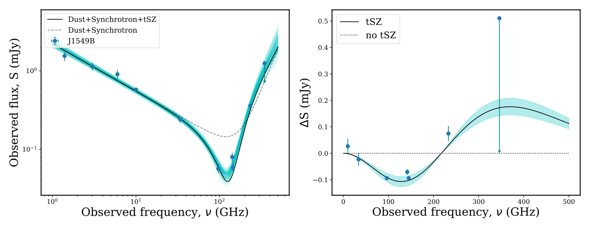
图注：J1549B的谱能量分布及模型。左图为观测频率对应的通量密度，误差合并图像均方根噪声与通量校准误差；黑线使用同步辐射、tSZ和冷尘埃修正黑体参数的后验中位数，青色曲线来自各参数16至84百分位内的200次抽样。345 GHz点为约2.5σ上限，未参与拟合。虚线仅含同步辐射与尘埃。右图为减去这一无tSZ正发射模型后的10–345 GHz残差；黑线和阴影为tSZ振幅的中位数及16至84百分位区间，点线表示没有tSZ时的零残差。
怎么看这张图：重点比较正发射模型与毫米点之间的系统偏离，右图显示这种偏离如何匹配tSZ谱形。200条曲线不是完整模型不确定性的证明；指数截止同步谱与多温尘埃的替代解释须另读补充§6，不能由这张图直接宣称6σ排除所有替代模型。 展示局部约10–15 kpc热库的核心频谱证据。
来源与置信度：arXiv HTML；source verified；https://arxiv.org/html/2611.23487v1/J1549B_SED_and_residual_fit_uplims_fitSZT_fixbetaF1.7_mar2026.svg
图4
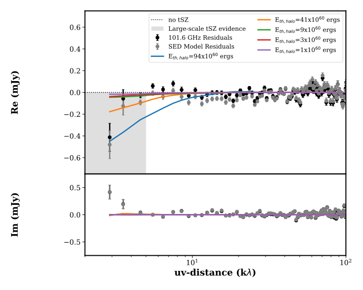
图注：101.6 GHz复可见度的实部、虚部残差随以波长为单位的基线距离变化。黑点减去了单频双点源拟合，灰点减去了SED所估计的正发射。彩色曲线为标注总热能的FABLE模拟SZ轮廓，经同样观测u,v采样并按同样方式分箱；这些曲线未拟合到数据。各点为逆方差加权平均减对应模型，原图注将误差描述为加权方差平方根；最短基线最终报告误差另外计入箱内散布。
怎么看这张图：最左侧实部的负值对大尺度热气体敏感，但最终 -0.41±0.14 mJy只有2.9σ；虚部的偏离提示不对称或采样影响。彩色线与点的相近只能作前向模拟参照，不能读成已测得唯一反馈模型或已确证600 kpc热晕。 把最弱的约600 kpc证据与强SED证据清楚分开。
来源与置信度：arXiv HTML；source verified；https://arxiv.org/html/2611.23487v1/uvplot_resid_log_J1549band3all_2PointIm_withSEDandsims_v2.svg
图5
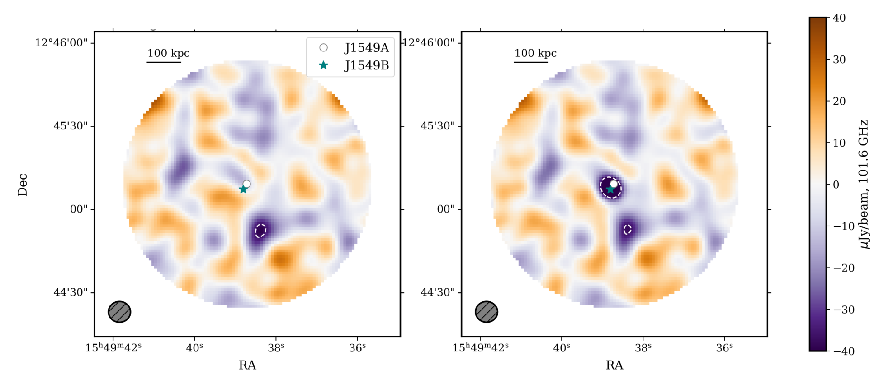
图注：J1549+1245的101.6 GHz残差图，由ALMA与ACA联合数据在源相减后施加8角秒u,v渐晕加权得到。左图减去单频点源通量，右图减去SED模型中的正发射。等高线为−4σ，图像噪声σ=9微央斯基每波束，左下椭圆标出渐晕后的合成波束。
怎么看这张图：比较两种相减方法后西南侧约100 kpc位置的负泡是否保留；它与右图B源附近的谱模型负分量不应混为一体。负泡积分约5σ，但600次相位随机化只给经验p<0.002，不等价于完整搜索后的5σ发现概率；形态也不是已验证的对称球泡。 显示空间偏移的约100 kpc热气体候选与源相减稳健性。
来源与置信度：arXiv HTML；source verified；https://arxiv.org/html/2611.23487v1/J1549_97GHz_resid+SEDresid_4sigma.png
强相关工作
本文所引Hall等2019年工作（arXiv:1907.11731）用大量类星体与毫米图交叉统计，约束平均热反馈及额外毫米发射；Lacy等2019年（arXiv:1811.05023）则是个体类星体tSZ反馈的早期直接检测。新工作把高红移双源的多频谱和空间信息结合，并以局部热能与偏移泡为对象，因而有机会减少堆叠样本中不同晕质量混合的歧义；代价是个体对象的射电谱曲率、几何和活动历史更加重要。堆叠效率与本文的单源寿命下限不是同一估计量，不能直接排成高低优劣。
同源的WISSH研究Bischetti等2021年（arXiv:2009.01112）提供CO气体、环境及动力学质量背景，2017年研究（arXiv:1612.03728）提供强电离外流信息；本文的新环节是最热相的量热，并非重新发现双源或所有外流。FABLE模型Henden等2018年（arXiv:1804.05064）提供有/无反馈的模拟参照，Mroczkowski等2019年综述（arXiv:1811.02310）解释空间及频谱分辨SZ诊断。上述引用关系均来自本文参考文献，本次没有重新分析其原始观测，也没有宣称这几篇涵盖全部类星体反馈文献。
同一事件 / 同类源线索：
相似工作：
基础理论 / 方法工作：
相反观点 / 张力线索：
（未提供）
相关简报
1. Intra-day variability of the gamma-ray/optical emission of 3C 454.3: the complexity beyond the long-term correlation
- 来源：arXiv / astro-ph.HE
- 链接：https://arxiv.org/abs/2611.25125
- 作者：Gabriele Panebianco, Marco Tavani, Valerio Vittorini, Paolo Coppi, Andrea Bulgarelli, Claudia M. Raiteri, Massimo Villata
- 公告 / 来源日期：2026-11-20
- 阅读层级：相关简报
- 评分：novelty 7/10，importance 8/10，relevance 10/10，final 9.40/10
- 推荐理由：17年多波段逐耀发与日内分析揭示3C454.3相关斜率、孤立耀发和康普顿优势随状态变化，对单一稳态区解释及伽马时变分析直接重要。
中文题目：3C 454.3：长期光学—伽马相关掩盖日内多种状态
问题、方法与结论：作者联合2007–2024年的AGILE、Fermi-LAT与WEBT等R波段资料，以日尺度至最细3小时分箱研究3C 454.3。全样本光学—伽马相关仍强，但14个活跃时段的相关系数约0.20–0.81、斜率约0.4–2.0；2010年最亮事件在日分箱下像平滑单峰，3小时分辨后出现多个子耀发与两个波段的孤立增强。固定1 GeV和R波段能量通量比这一康普顿优势代理可迅速变化到约120，说明单一长期相关斜率不能代表所有辐射状态。
意义与贡献：研究把多历元统计与日内结构放在同一分析中，限制了“只改变电子密度的固定单区模型”对全时段的解释力。它支持局域耗散或随时段变化的辐射条件，但没有唯一选择多区轻子、镜面再散射或强子机制，也不能仅凭孤立伽马耀发就断言中微子伴随。
可借鉴之处：可借鉴的是对同一数据同时改变时间分箱、逐时段比较相关斜率和散度，并结合光变形状、固定能量通量比及谱指数轨迹。分析时需保留低通量检出差异与上限：本文相关拟合排除了伽马上限，6小时与24小时样本的选择效应并不相同。
局限与关注点：康普顿优势是固定能量代理，不是两SED峰或总辐射功率之比；R波段低态还有吸积盘热光稀释。活跃期按伽马亮度和光学覆盖选取，会放大伽马孤立耀发的相对比例。正文§5将6小时/24小时全样本斜率写为1.67/1.60，表1与图4却将6小时标为1.60，故这里只引用约1.6–1.7。§8.4质量上限所用多普勒变换需另核，不据它排除黑洞质量或普遍单区模型。
图5：同一耀发在日尺度与3小时尺度下的结构

图注：3C 454.3的E10B活跃时段光变与康普顿优势，对照24小时及3小时分箱。图中分别追踪伽马射线、光学R波段及两者固定能量谱能通量的比值；此比值以1 GeV与R波段定义，是康普顿优势的观测代理。
怎么看这张图：日分箱平滑掉峰内子结构；短分箱中通量比能在数小时内大幅改变。短分箱统计误差也更大，图不能单独证明具体加速机制或把代理比值当作总功率比。 直接支撑时间平均掩盖内部结构的结论。
来源与置信度：arXiv HTML；source verified；https://arxiv.org/html/2611.25125v1/lightcurves_24h_3h_2010B.svg
2. A Shallow Phase-resolved Gamma-Ray Luminosity-Cutoff Energy Relation in Globular Cluster Millisecond Pulsars
- 来源：arXiv / astro-ph.HE
- 链接：https://arxiv.org/abs/2611.25384
- 作者：Mengqing Zhang, Jiandong Zhang, Shan Chang, Pengfei Zhang
- 公告 / 来源日期：2026-11-20
- 阅读层级：相关简报
- 评分：novelty 7/10，importance 7/10，relevance 10/10，final 9.05/10
- 推荐理由：球状星团MSP相位分辨光度-截止能斜率浅于场源，为高能辐射检验提供定量新约束；四源及簇背景/束射退化限制机制结论。
中文题目：球状星团毫秒脉冲星的光度—截止能关系为何偏浅？
问题、方法与结论：作者用17.3年、0.1–500 GeV的Fermi-LAT资料研究四颗球状星团毫秒脉冲星，更新J1824−2452A星历，并在三源检出满足TS>16的离峰辐射。对这三源的相位谱，固定截止形状b=2/3和各源相位平均谱指数，拟合通量与曲率，再换算有效截止能。各源亮相位通常截止能更高；将相位各向同性光度与截止能作含双轴误差的贝叶斯回归，得到幂律斜率0.74（68%区间−0.14/+0.16），浅于文献场毫秒脉冲星约2.31的结果。
意义与贡献：它把球状星团环境中的相位谱与场源基准放在一起，提供可检验的定量差异。离峰存在截止的证据只有两源跨过作者门槛；截止谱与磁层辐射相容，但其他未分辨脉冲星也能产生类似谱形，不能由此证明离峰全部来自目标磁层。
可借鉴之处：值得借鉴的是先核验长基线星历、检查相位图及累计H检验，再定义离峰区并按相位宽度修正曝光。PLEC4重参数化改善拟合稳定性，但固定b与谱指数属于模型假设；比较不同相位谱时应保留这些约束，并检查通量与曲率来自同一拟合所产生的协方差。
局限与关注点：仅三源且按离峰检出筛选，不能代表所有星团毫秒脉冲星。本文各向同性光度未校正相位束射，比较文献用的是伪光度；未分辨星团常量成分可抬高弱相位通量、压平斜率。结果不是曲率辐射被排除，也不是星团环境改变机制的独立证据，仍需更大样本与多成分空间谱分析。
图4：三源相位光度与截止能的联合回归
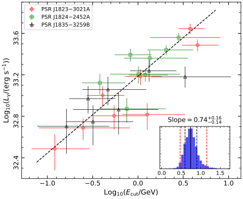
图注：横纵坐标为截止能与相位各向同性伽马光度的十进对数。红圆、绿方和黑三角分别代表J1823−3021A、J1824−2452A、J1835−3259B各相位箱测量；黑虚线是最佳幂律关系，斜率0.74，68%可信区间−0.14/+0.16。插图为斜率后验，实黑线标中位数，黑虚线与红虚线分别标68%和95%可信区间。
怎么看这张图：同一源多个相位点并非多个独立星团；低通量端还可能受簇内未分辨常量辐射影响。回归线描述本次选中三源及固定谱参数假设，不宜直接当作辐射机制的普适标度。 呈现核心观测关系而保留样本和建模边界。
来源与置信度：arXiv HTML；source verified；https://arxiv.org/html/2611.25384v1/Figure4.svg
3. New Candidate Activity Periods from FRB 20240209A and Repeating Fast Radio Burst Sources in the Second CHIME/FRB Catalog
- 来源：arXiv / astro-ph.HE
- 链接：https://arxiv.org/abs/2611.25797
- 作者：Aaron B. Pearlman, Maxwell Fine, Amanda M. Cook, Victoria M. Kaspi, Kiyoshi W. Masui, Daniel Amouyal, Shami Chatterjee, Alice P. Curtin
- 公告 / 来源日期：2026-11-20
- 阅读层级：相关简报
- 评分：novelty 7/10，importance 8/10，relevance 9/10，final 9.05/10
- 推荐理由：CHIME多源活动周期统一搜索及旧周期否定有价值，但显著性仅均匀泊松零假设，必须与簇集检验并列且保留候选措辞。
中文题目：CHIME提出四个长期活动周期候选：170.4天结果仍须检验爆发簇集
问题、方法与结论：作者对FRB 20240209A的155次爆发和CHIME第二目录中19个满足筛选条件的重复源，使用曝光校正的LS、Rayleigh及H检验搜索10天以上活动周期。20240209A给170.4±4.7天、试验校正后5.3σ候选；旧128.5天周期在扩展样本中不获支持。另三源候选为28.46、86.7及36.4天，显著性分别3.1、4.0与3.5σ。它们是活动窗口候选，不是相干射电脉冲自转测量。
意义与贡献：统一流程显式纳入各源曝光、周期扫描、统计量数和源数，避免从众多周期图挑漂亮峰。20240209A处于静默椭圆星系外缘，若长期调制得到独立确认，可为老年恒星族中的双星、进动或活动能量补给机制提供线索；现阶段不能据此确认伴星或磁星起源。
可借鉴之处：可借鉴的是把非探测时段和窗口函数一并用于模拟，并要求至少两种统计量给相容周期或低阶谐波。109.5天次峰可由170.4天候选与306.6天曝光结构混叠解释。源数校正与曝光修正各自解决不同问题，后者不能代替对簇集随机过程的检验。
局限与关注点：全部σ仍条件于曝光调制的均匀泊松零假设，本文没有检验爆发簇集，计入后可能降低。仅CHIME到达时刻还不能消除恒星日混叠；20240209A的候选周期变化率很难用轨道或自转解释，作者认为更可能来自周期间活动变化。需其他望远镜同频段离开CHIME过中天窗口的持续观测，不把高σ或宿主环境当机制确证。
图3：FRB 20240209A候选活动周期
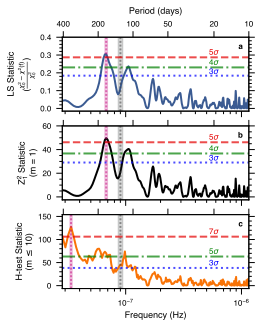
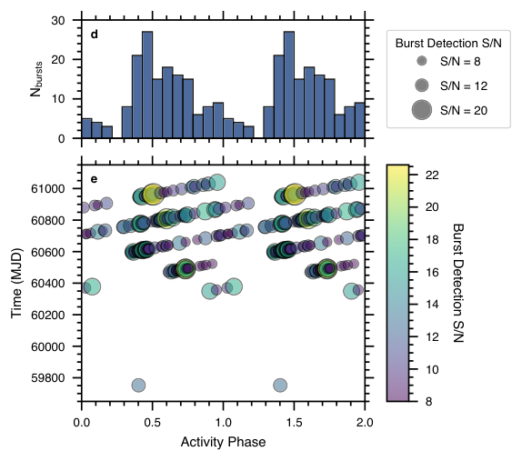
图注：FRB 20240209A的155个到达时刻所得周期图与折叠活动。a–c为LS、Rayleigh与H检验；品红竖虚线及阴影标最高峰频率和1σ误差，蓝/绿/红水平线为蒙特卡洛给出的试验校正阈值，灰线及阴影标旧128.5天周期。d按170.4天、参考MJD60706.27987折叠；e显示时间与活动相位，每个圆代表爆发，大小与颜色按探测信噪比变化。
怎么看这张图：a–c的高σ只针对曝光调制泊松零假设；d–e应看活动跨周期是否持续，而非只看一次相位聚集。170.4天和H检验约342.8天次谐波不能记作两次独立发现，仍需簇集及恒星日混叠核查。 原图的SVG周期图与PNG折叠图共同保留。
来源与置信度：arXiv HTML；source verified；https://arxiv.org/html/2611.25797v1/f3abc.svg；https://arxiv.org/html/2611.25797v1/f3de.png
4. The gravitational wave candidate S251112cm: near-complete optical coverage with ATLAS, Pan-STARRS and the Vera C. Rubin Observatory
- 来源：arXiv / astro-ph.HE
- 链接：https://arxiv.org/abs/2611.26222
- 作者：A. J. Smith, M. Nicholl, S. J. Smartt, J. H. Gillanders, D. R. Young, K. W. Smith, S. P. MacBride, D. Magill
- 公告 / 来源日期：2026-11-20
- 阅读层级：相关简报
- 评分：novelty 7/10，importance 8/10，relevance 9/10，final 9.05/10
- 推荐理由：亚太阳质量引力波候选约80%定位体积的两类光学模板排除及多巡天覆盖值得简报，不能将候选当确定并合或泛化为所有对应体排除。
中文题目：亚太阳质量引力波候选S251112cm：深巡天未找到可信光学对应体
问题、方法与结论：作者汇合ATLAS、Pan-STARRS与Rubin对S251112cm的光学后随，从269个独立候选依次核查历史活动、宿主距离、光变速度与绝对星等。初筛剩8个，进一步光变和宿主分析后无可信对应体：AT2025aimy衰减过慢，VLT光谱把AT2025alqe置于约452 Mpc，远超引力波的12–174 Mpc三倍误差距离范围。Pan-STARRS与Rubin共同对约80%的90%定位体积排除AT2017gfo样千新星及SN1998bw样宽线Ic超新星。
意义与贡献：这将未探测从简单“没有发现”转化为对明确亮度与演化模板的三维覆盖限制。S251112cm本身的假警报率为每四年一次；较轻成员亚太阳质量概率超过99%是条件于信号确为天体来源，不能写成确定发现亚太阳质量天体，更不能由光学无对应体反推已证实原初黑洞。
可借鉴之处：每次观测结合5σ深度、观测时刻的模型光度、银河消光与该视线距离后验，积分可探测距离概率；重复指向只取最强限制，避免叠加重复面积。南北深巡天互补后主要受未覆盖天空限制，ATLAS对较暗千新星主要受深度限制，同一覆盖面积不代表相同科学约束。
局限与关注点：约80%只适用于指定模板和90%定位区，并非所有电磁对应体；千新星若整体暗2等，联合排除降到约55%，更快、红外更亮或不同抛射物的模型仍可逃过。Rubin约并合后2.4天才开始，候选还预筛过，不能直接比较各巡天候选淘汰率。宿主过暗的论证依赖比较星系族，正文保留这种条件。
图11：南北深巡天联合覆盖
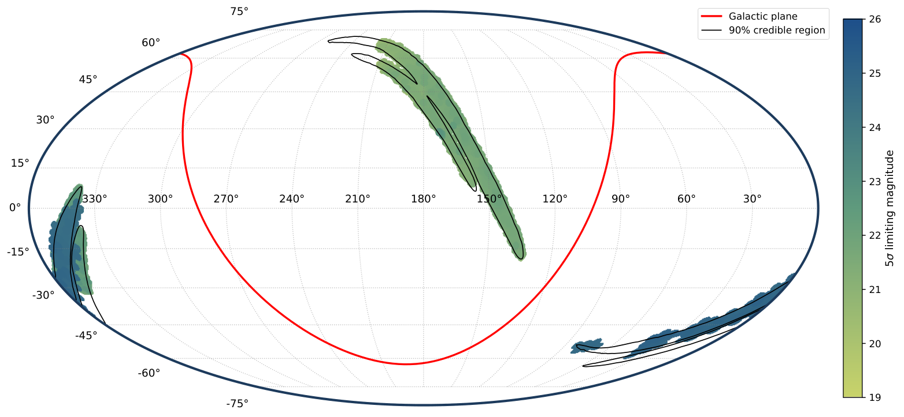
图注：Pan-STARRS与Rubin对S251112cm的联合覆盖，黑轮廓为90%可信定位区，颜色为各位置达到的最深5σ极限星等。两者覆盖1681.1平方度区域中的约1387.5平方度，Rubin主导南侧，Pan-STARRS主导北侧；红线为银道面。
怎么看这张图：图上深度互补解释为何联合覆盖优于单台，但极限星等不等于所有模型的排除率。约80%定位体积排除还依赖模板随时间的亮度、视线距离后验和消光；较暗或更快的对应体约束更弱。 简报展示深度与天空覆盖互补的关键原图。
来源与置信度：arXiv HTML；source verified；https://arxiv.org/html/2611.26222v1/footprints_mollweide_depth.png
5. FAST Burst-Cluster Catalog of FRB 20240114A
- 来源：arXiv / astro-ph.HE
- 链接：https://arxiv.org/abs/2611.25348
- 作者：Long-Xuan Zhang, Ya Zeng, Tong-Lun Wang, Jun-Yi Shen, Ying-Ze Shan, Lin Zhou, Shi-Yan Tian, Tian-Cong Wang
- 公告 / 来源日期：2026-11-20
- 阅读层级：相关简报
- 评分：novelty 7/10，importance 8/10，relevance 8/10，final 8.70/10
- 推荐理由：大规模FAST爆发簇目录统一多时间尺度统计并测到DM增长，数据资源重要；主要为目录与统计扩展，未建立新辐射机制。
中文题目：FAST将FRB 20240114A爆发整理成可追溯的多层级目录
问题、方法与结论：本文整理2024年1月28日至2025年6月5日495天活跃阶段的FAST资料：99次有效观测、58.83小时曝光，包含13261个爆发簇、19037次爆发及29026个子爆发。作者用400毫秒间隔组织爆发簇，保留原BurstID以关联能量与偏振资料，并对多子爆发结构人工细化色散量。修订后的爆发数多于18230个原始BurstID，是重新分割的结果。人工色散量的长期线性增长率为1.29±0.11 pc cm⁻³ yr⁻¹；大于0.4秒的簇间到达间隔，在逐观测段处理速率变化后大体符合泊松统计。
意义与贡献：目录把毫秒子结构、几十毫秒簇内间隔和秒级簇间间隔分开，使“爆发是否成团”不再依赖混用计数单位。簇内下漂移显著更多，而簇间近似独立，说明同一源可在不同时间层级体现不同统计规律，但尚不能唯一识别磁层或激波机制。
可借鉴之处：可复用的关键是保留原检测标识、显式记录400毫秒阈值，并在Weibull似然中用生存概率处理左截断。逐观测段拟合避免把长期速率变化误判为短时聚集；72个高统计段中仅一段偏离泊松超过3σ，需考虑多次检验。
局限与关注点：手工色散对结构对齐有效，但形态可产生伪色散，不能把全部瞬时差异当传播介质变化；频带边缘会低估漂移率。能量—多重性相关基于分箱中位数，形态群体分布大量重叠，不能扩写成逐爆发确定关系。FAST与Parkes频率的相关支持共同长期演化，本篇并未独立重测112.91天周期显著性。
图5：逐观测段检验爆发簇是否近似独立到达
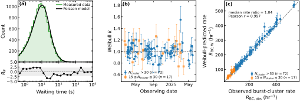
图注：对大于0.4秒的簇间间隔作Weibull及泊松分析。(a)将13162个实测间隔与逐观测段速率构成的截断泊松混合模型比较，下方为Pearson残差，灰区标示绝对值不超过2。(b)给Weibull形状参数k的后验中位数及16–84百分位，虚线k=1对应泊松；蓝圆为簇数超过30的段，橙方为15至30的段。(c)比较Weibull预测与直接测量的簇率，虚线表示相等。
怎么看这张图：这里检验的是经过分簇且排除0.4秒以内间隔后的到达过程，不能据k约1断言簇内子爆发也无相关。单个观测段超过3σ偏离还要结合多段试验次数判断。 支撑多时间层级统计区分及可复用的阈值处理。
来源与置信度：arXiv HTML；source verified；https://arxiv.org/html/2611.25348v1/waiting_time_weibull.svg
6. Multimessenger constraints on the origin of long gamma-ray bursts with plateaus: three cases
- 来源：arXiv / astro-ph.HE
- 链接：https://arxiv.org/abs/2611.26468
- 作者：Aleksander Łukasz Lenart, Maria Giovanna Dainotti, Maurice van Putten, Shigehiro Nagataki, Nissim Fraija, Agnieszka Pollo, Dieter H. Hartmann
- 公告 / 来源日期：2026-11-20
- 阅读层级：相关简报
- 评分：novelty 7/10，importance 7/10，relevance 9/10，final 8.70/10
- 推荐理由：三例长暴平台的黑洞旋降拟合与引力波频段判别有可用多信使预测，但质量、盘质量和探测率高度依赖模型且非引力波实测。
中文题目：长暴X射线平台能否约束引力波发动机？三例研究给出有条件的频段与时序判别
问题、方法与结论：作者从256个Swift平台暴中选出能量与距离比最大的4例，尝试用黑洞磁阻塞吸积、旋降供能模型拟合平台，再把盘参数代入宽带引力波标度。080319C和111209A获得后验，130925A只有拟合点而MCMC失败，211024B拟合未成功。前三例平台起点黑洞质量约24–124太阳质量、盘质量约3–12太阳质量，均是模型条件下的估计，不是动力学质量测量。保守效率下特征应变约为1.5–1.8×10⁻²⁴；作者比较第三代探测器灵敏度，提出用引力波相对提示辐射的时序及宽带/下降啁啾形态区分发动机。
意义与贡献：贡献在于把平台、提示阶段和可能的引力波放到同一条件预测中：超吸积盘可在提示期产生宽带信号，黑洞旋降和磁星方案给出不同的峰值时序。它提供后续联合搜索的组织方式，尚未通过引力波观测证明任何一种发动机。
可借鉴之处：可借鉴的是先明确平台光度到发动机功率的转换，再对盘质量、辐射效率和频率随黑洞质量的缩放分别测试。文中年率约0.5至超过1.5次只是小样本及视场外推，应作为情景估计；作者未计算信噪比、探测器响应或真实搜索效率。
局限与关注点：需要重点核查三处限制：假定X射线占总光度约10%、束射与辐射效率抵消；130925A平台还有尘埃回声解释；图中额外50%系统误差为作者人为设定，并非完整误差传播。白矮星潮汐瓦解的低频对照也受轨道及黑洞自旋条件限制，不能仅凭灵敏度曲线相交就宣称可探测。
图2：情景应变与探测器灵敏度对照
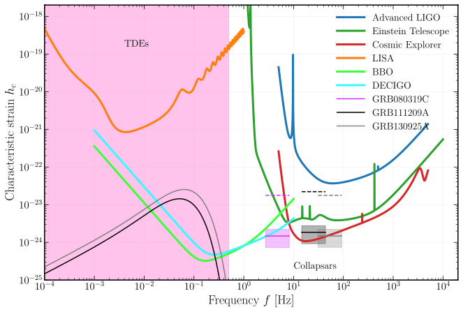
图注：横轴为观测者系频率Hz，纵轴为无量纲特征应变。蓝、深绿、红、橙、浅绿和青线分别为Advanced LIGO、Einstein Telescope、Cosmic Explorer、LISA、BBO和DECIGO灵敏度；灰、黑、品红线为本文暴样本情景。低于0.1 Hz的粉色区展示潮汐瓦解，虚线为抛物线单次掠过、实线为多周期积累；较高频率实线为盘宽带辐射保守估计，上方虚线为乐观估计。阴影矩形是标作1σ的范围，包含作者额外设定的50%系统不确定性。
怎么看这张图：不同频段虚实线含义相反，须分开阅读。信号曲线接近噪声曲线仅是量级比较，本文未完成信噪比与搜索效率计算；黑洞质量与盘质量也依赖平台解释。 直接显示多信使频段判别及可探测性推断的条件。
来源与置信度：arXiv HTML；source verified；https://arxiv.org/html/2611.26468v1/GW_detector_characteristic_strain.svg
7. Direct inference of cosmological mass growth via timing of black hole - pulsar binaries
- 来源：arXiv / astro-ph.HE
- 链接：https://arxiv.org/abs/2611.24949
- 作者：Kevin S. Croker, Gibson B. Bowling, Christopher Cain, Jake Summers, Duncan Farrah, Jeremy Coles, Hayley Williams, Chris Pearson
- 公告 / 来源日期：2026-11-20
- 阅读层级：相关简报
- 评分：novelty 8/10，importance 7/10，relevance 8/10，final 8.65/10
- 推荐理由：轨道与自转导数相减消除共同运动学项，为宇宙耦合质量增长提供短基线检验；伴星黑洞身份和本征自转损失先验仍有限，当前尚无非零增长证据。
中文题目：用脉冲星双钟检验黑洞是否随宇宙膨胀增重
问题、方法与结论：本文把黑洞质量随尺度因子变化的假说写成m∝a^κ，推导其对黑洞—脉冲星轨道周期的缓慢缩短，并应用于球状星团NGC 1851中的候选系统J0514–4002E。轨道与自转周期的分数变化率之差可抵消共同的视向加速度，从而避开星团势这一主要干扰。采用2005—2022年公开计时结果，仅要求脉冲星内禀自转变慢，得95%上界κ<3.95；加入32颗场毫秒脉冲星标定的自转减速先验及Planck哈勃常数，得κ=0.82±1.67，仍与零相容。
意义与贡献：宇宙学质量耦合原先常由星系黑洞总体演化间接推断，这里提出同一局域双星的动力学检验，减少星系成长史的依赖。关键是两种时钟相减，而非把观测轨道周期导数全部归因于质量增长；这也要求额外辐射损失或物质交换可以忽略。
可借鉴之处：附录从时变质量哈密顿量推出轨道平均结果：质量比q=脉冲星质量/伴星质量时，增长项为−κH[3−1/(1+q)]。该系的一阶后牛顿相对修正低于约10⁻⁶，且既有质量测量受影响很小，给出了可移植到其他候选双星的误差分层。
局限与关注点：伴星质量约2.35个太阳质量，身份仍可能是中子星，因此现有限制以其为黑洞为条件，不能称为质量增长检出。自转先验还依赖场脉冲星的代表性；κ=3在2026年底达到3σ只是既定误差缩放下约50%成功概率的预测，95%概率要到2031年左右，并非新增计时数据已验证。
图2：当前数据允许的质量增长指数
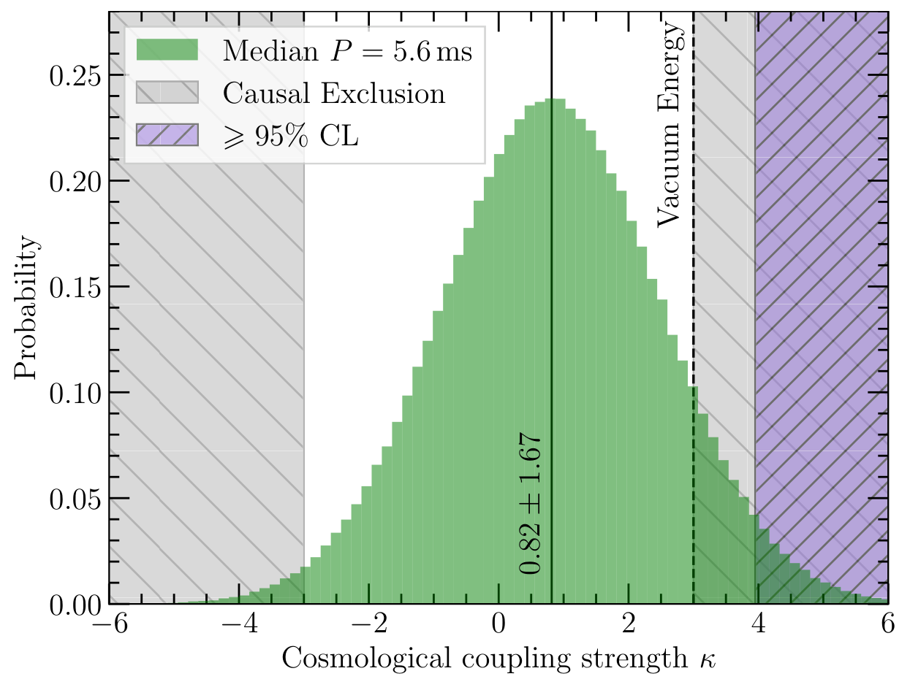
图注：横轴为质量增长指数κ，曲线为采用Planck哈勃常数及场毫秒脉冲星自转减速先验的后验分布，中心约0.82、标准差约1.67。紫色区域为只要求内禀自转减速非负即可得到的95%排除区域；灰色斜纹标出作者讨论的主导能量条件范围之外。
怎么看这张图：后验包含κ=0，说明当前没有显著增长证据。紫色上界与完整曲线使用的信息不同；图中物理条件标示也不等于后验已施加该截断。整个解释还以未见伴星确为黑洞为前提。 直接呈现实际约束，避免把未来预测当观测发现。
来源与置信度：arXiv PDF；source verified; PDF crop visually verified；https://arxiv.org/pdf/2611.24949#page=5; Figure 2; PDF crop [47,59,296,248] pt, 360 dpi
8. Spiral Pitch Angles in Black Hole Images and Movies
- 来源：arXiv / astro-ph.HE
- 链接：https://arxiv.org/abs/2611.25092
- 作者：Nicholas S. Conroy, Michi Bauböck, Vedant Dhruv, Abhishek V. Joshi, Cora Prather, Charles F. Gammie
- 公告 / 来源日期：2026-11-20
- 阅读层级：相关简报
- 评分：novelty 8/10，importance 7/10，relevance 8/10，final 8.65/10
- 推荐理由：提出双半径亮度相关测螺距的黑洞电影诊断，有模拟验证与自旋/倾角可辨识用途；尚为预测而非观测自旋新约束。
中文题目：黑洞亮环的螺旋旋向可为自旋提供新诊断
问题、方法与结论：作者在相邻半径上提取亮温随方位和时间的变化，用零时延互相关峰的角位移测量螺旋张角，再在广义相对论磁流体模型中比较自旋与倾角。本文张角从径向量起：0°为径向，绝对值越大越紧绕，区别于常用旋臂张角。固定近正面视角时，靠近视界的旋向随自旋正负改变，逆行模型还可随半径翻转。一个基准模型在6微角秒模糊下测得−46°±9°，20微角秒下为−23°±11°，显示分辨率会把结果推向径向。
意义与贡献：总强度亮度不对称主要约束自旋大小，螺旋旋向则可能提供正转或逆转的信息。与主要受倾角控制的图样转速联合，有望区分黑洞自旋方向与吸积盘角动量方向；模拟中压力扰动的卷绕与拖曳惯性系相符，但熵扰动也参与亮度权重。
可借鉴之处：方法把难以逐条辨认的暗弱螺旋变成跨半径相关量。超过千次理想对数螺旋电影试验，在6微角秒和20微角秒下分别给出约0.5°及4—6°均方根误差；这些是特定几何、相关长度与时间采样下的恢复误差，不能直接充当真实黑洞自旋误差。
局限与关注点：本篇仅以高斯卷积模拟分辨率，未加入真实基线覆盖、观测噪声及成像重建偏差；已有M87图像的旋向甚至随重建方法改变。单帧约10—20°的误差更大，Sgr A平均图也不等于快照。张角还受倾角、磁化和辐射区域影响，目前是待观测验证的诊断，尚未给出可靠的新自旋测量。
图3：自旋、半径与角分辨率如何影响螺旋张角
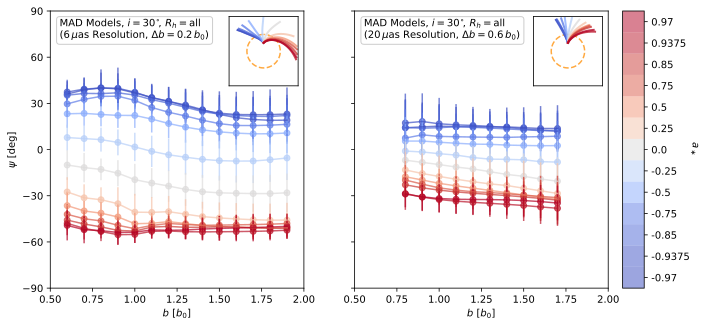
图注：近正面倾角30°的MAD模型中，纵轴为张角，横轴为测量半径中点；颜色区分自旋，误差棒为300个引力时间长度电影及电子温度参数统计的1σ圆统计标准差。左图采用6微角秒分辨率及0.2倍参考环半径的径向间隔，右图采用20微角秒及0.6倍间隔。
怎么看这张图：先看逆行模型是否跨过零，再比较左右图：模糊后张角绝对值减小且散布增大。误差棒是模型间及时间变化，不是实测后验；该角从径向定义，越接近±90°表示越紧绕。 同时支撑自旋诊断及分辨率偏差。
来源与置信度：arXiv HTML；source verified；https://arxiv.org/html/2611.25092v1/Radial-Spirals-vs-Spin.svg
说明
评分由 LLM 给出初评，再由本地阈值策略过滤；IACT、TeV 伽马射线和高能中微子天文学按重点方向处理。